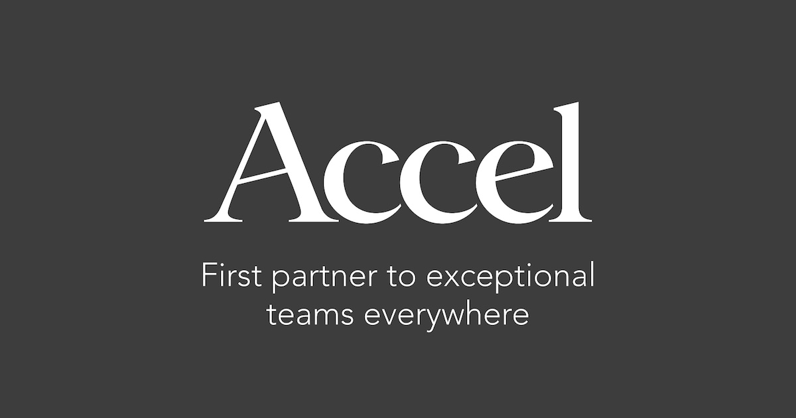

‹ 一覧に戻る

独立系VC
Accel
Accel
APACUS
各問い合わせ先はVC・CVC各社が公開している公式窓口です。大手町プレップが投資、採用または紹介を保証するものではありません。掲載情報は各社の公開情報にもとづき最終確認日時点で整理したものです。
概要
Multi-stage technology venture capital
投資戦略・重点領域
投資ステージ
未確認
投資対象業種
未確認
基本情報
- 正式法人名
- 非開示
- 英語名
- Accel
- 組織区分
- 独立系VC
- 設立
- 非開示
- 本社所在地
- 非開示
- 活動地域
- APAC / US
- プロフィール確認日
- 2026-07-18
- ポートフォリオ確認日
- 2026-09-19
- データ更新日（掲載内容の変更日）
- 2026-09-19
公式公開情報で確認できる投資先（776件）
- 公開確認できた個社数: 776社
- 発表上の総数（公式サイトのメタ記述）: over 300 companies（マーケティング表記・一覧件数とは別）（2026-08-16時点） 出典 ↗
- 全体の投資先総数: 公式に確定値の開示なし（不明）。公開確認できた個社数＝公式一覧の掲載件数。マーケティング上の概数は別項目
- 現行の公式一覧に掲載されなくなった旧掲載 1件は削除せず表に残し、件数からは除いています。
各社公式ポートフォリオ等で確認。現在／過去の区分が公式に明示されないものは「公開ポートフォリオ」と表示（推測分類しない）。会社名・ロゴから各社公式サイトへ遷移できます。投資時期・Exit時期は公式サイト等で確認できた範囲のみ記載しており、非公開の場合は「非公開」と表示します。
| 投資先 | 業種 | 状態 | 投資時期 | Exit時期 | 最終確認 | |
|---|---|---|---|---|---|---|
| MS |
100ms ↗ 公式ポートフォリオ一括取得（2026-08-16・sanity_groq_api (public dataset 458oembh/production discovered from page HTML; query *[_type=='company' && archived!=true]; single response, no pagination needed)） |
Cloud / SaaS | 公開ポートフォリオ | 非公開 | — | 2026-08-16 |
| BA |
1Balance ↗ 公式ポートフォリオ一括取得（2026-08-16・sanity_groq_api (public dataset 458oembh/production discovered from page HTML; query *[_type=='company' && archived!=true]; single response, no pagination needed)） |
Consumer; Healthcare; Health | 公開ポートフォリオ | 非公開 | — | 2026-08-16 |
| PA |
1Password ↗ 公式ポートフォリオ一括取得（2026-08-16・sanity_groq_api (public dataset 458oembh/production discovered from page HTML; query *[_type=='company' && archived!=true]; single response, no pagination needed)） |
Consumer; Mobile; Security | 公開ポートフォリオ | 非公開 | — | 2026-08-16 |
| DE |
99designs ↗ 公式ポートフォリオ一括取得（2026-08-16・sanity_groq_api (public dataset 458oembh/production discovered from page HTML; query *[_type=='company' && archived!=true]; single response, no pagination needed)） |
Media; Design; Services | 公開ポートフォリオ | 非公開 | — | 2026-08-16 |
| AA |
Aavenir ↗ 公式ポートフォリオ一括取得（2026-08-16・sanity_groq_api (public dataset 458oembh/production discovered from page HTML; query *[_type=='company' && archived!=true]; single response, no pagination needed)） |
Cloud / SaaS | 公開ポートフォリオ | 非公開 | — | 2026-08-16 |
| AC |
Acalvio ↗ 公式ポートフォリオ一括取得（2026-08-16・sanity_groq_api (public dataset 458oembh/production discovered from page HTML; query *[_type=='company' && archived!=true]; single response, no pagination needed)） |
AI; Security | 公開ポートフォリオ | 非公開 | — | 2026-08-16 |
| AC |
Acko ↗ 公式ポートフォリオ一括取得（2026-08-16・sanity_groq_api (public dataset 458oembh/production discovered from page HTML; query *[_type=='company' && archived!=true]; single response, no pagination needed)） |
Consumer; Insurance Tech; Social; Services; Fintech | 公開ポートフォリオ | 非公開 | — | 2026-08-16 |
| AC |
Actuate ↗ 公式ポートフォリオ一括取得（2026-08-16・sanity_groq_api (public dataset 458oembh/production discovered from page HTML; query *[_type=='company' && archived!=true]; single response, no pagination needed)） |
— | 公開ポートフォリオ | 非公開 | — | 2026-08-16 |
| AD |
Ada Support ↗ 公式ポートフォリオ一括取得（2026-08-16・sanity_groq_api (public dataset 458oembh/production discovered from page HTML; query *[_type=='company' && archived!=true]; single response, no pagination needed)） |
AI; Automation; Enterprise; Cloud / SaaS | 公開ポートフォリオ | 非公開 | — | 2026-08-16 |
| AD |
AdMob ↗ 公式ポートフォリオ一括取得（2026-08-16・sanity_groq_api (public dataset 458oembh/production discovered from page HTML; query *[_type=='company' && archived!=true]; single response, no pagination needed)） |
AI; Cloud / SaaS | 公開ポートフォリオ | 非公開 | — | 2026-08-16 |
| AD |
AdRoll ↗ 公式ポートフォリオ一括取得（2026-08-16・sanity_groq_api (public dataset 458oembh/production discovered from page HTML; query *[_type=='company' && archived!=true]; single response, no pagination needed)） |
Media; Cloud / SaaS | 公開ポートフォリオ | 非公開 | — | 2026-08-16 |
| AE |
AegisAI ↗ 公式ポートフォリオ一括取得（2026-08-16・sanity_groq_api (public dataset 458oembh/production discovered from page HTML; query *[_type=='company' && archived!=true]; single response, no pagination needed)） |
AI; Cybersecurity | 公開ポートフォリオ | 非公開 | — | 2026-08-16 |
| AG |
Agave ↗ 公式ポートフォリオ一括取得（2026-08-16・sanity_groq_api (public dataset 458oembh/production discovered from page HTML; query *[_type=='company' && archived!=true]; single response, no pagination needed)） |
APIs; B2B; Cloud / SaaS | 公開ポートフォリオ | 非公開 | — | 2026-08-16 |
| AG |
Agile Software ↗ 公式ポートフォリオ一括取得（2026-08-16・sanity_groq_api (public dataset 458oembh/production discovered from page HTML; query *[_type=='company' && archived!=true]; single response, no pagination needed)） |
— | 公開ポートフォリオ | 非公開 | — | 2026-08-16 |
| AG |
Agrostar ↗ 公式ポートフォリオ一括取得（2026-08-16・sanity_groq_api (public dataset 458oembh/production discovered from page HTML; query *[_type=='company' && archived!=true]; single response, no pagination needed)） |
Mobile; eCommerce; Manufacturing; Logistics | 公開ポートフォリオ | 非公開 | — | 2026-08-16 |
| AI |
Airbyte ↗ 公式ポートフォリオ一括取得（2026-08-16・sanity_groq_api (public dataset 458oembh/production discovered from page HTML; query *[_type=='company' && archived!=true]; single response, no pagination needed)） |
Hardware; Cloud / SaaS | 公開ポートフォリオ | 非公開 | — | 2026-08-16 |
| AI |
AirKit ↗ 公式ポートフォリオ一括取得（2026-08-16・sanity_groq_api (public dataset 458oembh/production discovered from page HTML; query *[_type=='company' && archived!=true]; single response, no pagination needed)） |
Automation; Enterprise; Cloud / SaaS | 公開ポートフォリオ | 非公開 | — | 2026-08-16 |
| AI |
Airmeet ↗ 公式ポートフォリオ一括取得（2026-08-16・sanity_groq_api (public dataset 458oembh/production discovered from page HTML; query *[_type=='company' && archived!=true]; single response, no pagination needed)） |
Cloud / SaaS | 公開ポートフォリオ | 非公開 | — | 2026-08-16 |
| AI |
AirWatch 公式ポートフォリオ一括取得（2026-08-16・sanity_groq_api (public dataset 458oembh/production discovered from page HTML; query *[_type=='company' && archived!=true]; single response, no pagination needed)） |
Mobile; Security; Enterprise; Cloud / SaaS | 公開ポートフォリオ | 非公開 | — | 2026-08-16 |
| AK |
Akridata ↗ 公式ポートフォリオ一括取得（2026-08-16・sanity_groq_api (public dataset 458oembh/production discovered from page HTML; query *[_type=='company' && archived!=true]; single response, no pagination needed)） |
AI; Cloud / SaaS | 公開ポートフォリオ | 非公開 | — | 2026-08-16 |
| AK |
Akto ↗ 公式ポートフォリオ一括取得（2026-08-16・sanity_groq_api (public dataset 458oembh/production discovered from page HTML; query *[_type=='company' && archived!=true]; single response, no pagination needed)） |
APIs; Security | 公開ポートフォリオ | 非公開 | — | 2026-08-16 |
| AL |
Algolia ↗ 公式ポートフォリオ一括取得（2026-08-16・sanity_groq_api (public dataset 458oembh/production discovered from page HTML; query *[_type=='company' && archived!=true]; single response, no pagination needed)） |
Big Data; Enterprise; Cloud / SaaS | 公開ポートフォリオ | 非公開 | — | 2026-08-16 |
| AL |
Ally ↗ 公式ポートフォリオ一括取得（2026-08-16・sanity_groq_api (public dataset 458oembh/production discovered from page HTML; query *[_type=='company' && archived!=true]; single response, no pagination needed)） |
HR Tech; Cloud / SaaS | 公開ポートフォリオ | 非公開 | — | 2026-08-16 |
| AL |
Alpha Technologies ↗ 公式ポートフォリオ一括取得（2026-08-16・sanity_groq_api (public dataset 458oembh/production discovered from page HTML; query *[_type=='company' && archived!=true]; single response, no pagination needed)） |
— | 公開ポートフォリオ | 非公開 | — | 2026-08-16 |
| AL |
Altinity ↗ 公式ポートフォリオ一括取得（2026-08-16・sanity_groq_api (public dataset 458oembh/production discovered from page HTML; query *[_type=='company' && archived!=true]; single response, no pagination needed)） |
Big Data; Enterprise | 公開ポートフォリオ | 非公開 | — | 2026-08-16 |
| AM |
Amagi ↗ 公式ポートフォリオ一括取得（2026-08-16・sanity_groq_api (public dataset 458oembh/production discovered from page HTML; query *[_type=='company' && archived!=true]; single response, no pagination needed)） |
Media | 公開ポートフォリオ | 非公開 | — | 2026-08-16 |
| AM |
AMCC (Applied Micro Circuits Corporation) 公式ポートフォリオ一括取得（2026-08-16・sanity_groq_api (public dataset 458oembh/production discovered from page HTML; query *[_type=='company' && archived!=true]; single response, no pagination needed)） |
— | 公開ポートフォリオ | 非公開 | — | 2026-08-16 |
| AM |
Amobee ↗ 公式ポートフォリオ一括取得（2026-08-16・sanity_groq_api (public dataset 458oembh/production discovered from page HTML; query *[_type=='company' && archived!=true]; single response, no pagination needed)） |
Mobile; Media; Big Data | 公開ポートフォリオ | 非公開 | — | 2026-08-16 |
| AM |
Ampool ↗ 公式ポートフォリオ一括取得（2026-08-16・sanity_groq_api (public dataset 458oembh/production discovered from page HTML; query *[_type=='company' && archived!=true]; single response, no pagination needed)） |
Enterprise; Cloud / SaaS | 公開ポートフォリオ | 非公開 | — | 2026-08-16 |
| AN |
Anar ↗ 公式ポートフォリオ一括取得（2026-08-16・sanity_groq_api (public dataset 458oembh/production discovered from page HTML; query *[_type=='company' && archived!=true]; single response, no pagination needed)） |
Mobile; B2B; Services; Cloud / SaaS | 公開ポートフォリオ | 非公開 | — | 2026-08-16 |
| AN |
Anchor FM ↗ 公式ポートフォリオ一括取得（2026-08-16・sanity_groq_api (public dataset 458oembh/production discovered from page HTML; query *[_type=='company' && archived!=true]; single response, no pagination needed)） |
Consumer | 公開ポートフォリオ | 非公開 | — | 2026-08-16 |
| AN |
Ando ↗ 公式ポートフォリオ一括取得（2026-08-16・sanity_groq_api (public dataset 458oembh/production discovered from page HTML; query *[_type=='company' && archived!=true]; single response, no pagination needed)） |
AI; Collaboration; Developer Tools | 公開ポートフォリオ | 非公開 | — | 2026-08-16 |
| AN |
ANSR ↗ 公式ポートフォリオ一括取得（2026-08-16・sanity_groq_api (public dataset 458oembh/production discovered from page HTML; query *[_type=='company' && archived!=true]; single response, no pagination needed)） |
Enterprise; Cloud / SaaS | 公開ポートフォリオ | 非公開 | — | 2026-08-16 |
| AN |
Anthropic ↗ 公式ポートフォリオ一括取得（2026-08-16・sanity_groq_api (public dataset 458oembh/production discovered from page HTML; query *[_type=='company' && archived!=true]; single response, no pagination needed)） |
AI; Developer Tools; Enterprise | 公開ポートフォリオ | 非公開 | — | 2026-08-16 |
| AN |
Anyfin ↗ 公式ポートフォリオ一括取得（2026-08-16・sanity_groq_api (public dataset 458oembh/production discovered from page HTML; query *[_type=='company' && archived!=true]; single response, no pagination needed)） |
Consumer; Services; Fintech | 公開ポートフォリオ | 非公開 | — | 2026-08-16 |
| AO |
Aorato ↗ 公式ポートフォリオ一括取得（2026-08-16・sanity_groq_api (public dataset 458oembh/production discovered from page HTML; query *[_type=='company' && archived!=true]; single response, no pagination needed)） |
Security; Enterprise | 公開ポートフォリオ | 非公開 | — | 2026-08-16 |
| AP |
ApnaMart ↗ 公式ポートフォリオ一括取得（2026-08-16・sanity_groq_api (public dataset 458oembh/production discovered from page HTML; query *[_type=='company' && archived!=true]; single response, no pagination needed)） |
Consumer; eCommerce; Marketplaces; Services | 公開ポートフォリオ | 非公開 | — | 2026-08-16 |
| AP |
Appbrew ↗ 公式ポートフォリオ一括取得（2026-08-16・sanity_groq_api (public dataset 458oembh/production discovered from page HTML; query *[_type=='company' && archived!=true]; single response, no pagination needed)） |
eCommerce; Intelligent Apps; Cloud / SaaS | 公開ポートフォリオ | 非公開 | — | 2026-08-16 |
| AP |
Appsmith ↗ 公式ポートフォリオ一括取得（2026-08-16・sanity_groq_api (public dataset 458oembh/production discovered from page HTML; query *[_type=='company' && archived!=true]; single response, no pagination needed)） |
Developer Tools; Cloud / SaaS; Low Code / No Code | 公開ポートフォリオ | 非公開 | — | 2026-08-16 |
| AP |
Aptly ↗ 公式ポートフォリオ一括取得（2026-08-16・sanity_groq_api (public dataset 458oembh/production discovered from page HTML; query *[_type=='company' && archived!=true]; single response, no pagination needed)） |
Cloud / SaaS | 公開ポートフォリオ | 非公開 | — | 2026-08-16 |
| AR |
Aramya ↗ 公式ポートフォリオ一括取得（2026-08-16・sanity_groq_api (public dataset 458oembh/production discovered from page HTML; query *[_type=='company' && archived!=true]; single response, no pagination needed)） |
Consumer; Marketplaces; eCommerce | 公開ポートフォリオ | 非公開 | — | 2026-08-16 |
| AR |
Arbor Software 公式ポートフォリオ一括取得（2026-08-16・sanity_groq_api (public dataset 458oembh/production discovered from page HTML; query *[_type=='company' && archived!=true]; single response, no pagination needed)） |
— | 公開ポートフォリオ | 非公開 | — | 2026-08-16 |
| AR |
Arcot Systems 公式ポートフォリオ一括取得（2026-08-16・sanity_groq_api (public dataset 458oembh/production discovered from page HTML; query *[_type=='company' && archived!=true]; single response, no pagination needed)） |
— | 公開ポートフォリオ | 非公開 | — | 2026-08-16 |
| AR |
Arista ↗ 公式ポートフォリオ一括取得（2026-08-16・sanity_groq_api (public dataset 458oembh/production discovered from page HTML; query *[_type=='company' && archived!=true]; single response, no pagination needed)） |
Hardware; Developer Tools; Enterprise; Automation; Cloud / SaaS | 公開ポートフォリオ | 非公開 | — | 2026-08-16 |
| AR |
Arivihan ↗ 公式ポートフォリオ一括取得（2026-08-16・sanity_groq_api (public dataset 458oembh/production discovered from page HTML; query *[_type=='company' && archived!=true]; single response, no pagination needed)） |
AI; Automation; EdTech | 公開ポートフォリオ | 非公開 | — | 2026-08-16 |
| AR |
Armadin ↗ 公式ポートフォリオ一括取得（2026-08-16・sanity_groq_api (public dataset 458oembh/production discovered from page HTML; query *[_type=='company' && archived!=true]; single response, no pagination needed)） |
AI; Security | 公開ポートフォリオ | 非公開 | — | 2026-08-16 |
| AR |
ArrowPoint Communications 公式ポートフォリオ一括取得（2026-08-16・sanity_groq_api (public dataset 458oembh/production discovered from page HTML; query *[_type=='company' && archived!=true]; single response, no pagination needed)） |
— | 公開ポートフォリオ | 非公開 | — | 2026-08-16 |
| AS |
Ascend.io ↗ 公式ポートフォリオ一括取得（2026-08-16・sanity_groq_api (public dataset 458oembh/production discovered from page HTML; query *[_type=='company' && archived!=true]; single response, no pagination needed)） |
Big Data; Enterprise; Cloud / SaaS | 公開ポートフォリオ | 非公開 | — | 2026-08-16 |
| AS |
Assembly AI ↗ 公式ポートフォリオ一括取得（2026-08-16・sanity_groq_api (public dataset 458oembh/production discovered from page HTML; query *[_type=='company' && archived!=true]; single response, no pagination needed)） |
AI; APIs; Developer Tools; Cloud / SaaS | 公開ポートフォリオ | 非公開 | — | 2026-08-16 |
| AS |
Astral ↗ 公式ポートフォリオ一括取得（2026-08-16・sanity_groq_api (public dataset 458oembh/production discovered from page HTML; query *[_type=='company' && archived!=true]; single response, no pagination needed)） |
Developer Tools; Cloud / SaaS | 公開ポートフォリオ | 非公開 | — | 2026-08-16 |
| AS |
Astro ↗ 公式ポートフォリオ一括取得（2026-08-16・sanity_groq_api (public dataset 458oembh/production discovered from page HTML; query *[_type=='company' && archived!=true]; single response, no pagination needed)） |
Consumer; eCommerce; Services | 公開ポートフォリオ | 非公開 | — | 2026-08-16 |
| AT |
Atlas ↗ 公式ポートフォリオ一括取得（2026-08-16・sanity_groq_api (public dataset 458oembh/production discovered from page HTML; query *[_type=='company' && archived!=true]; single response, no pagination needed)） |
— | 公開ポートフォリオ | 非公開 | — | 2026-08-16 |
| AT |
Atlassian ↗ 公式ポートフォリオ一括取得（2026-08-16・sanity_groq_api (public dataset 458oembh/production discovered from page HTML; query *[_type=='company' && archived!=true]; single response, no pagination needed)） |
Collaboration; Developer Tools; Enterprise; Cloud / SaaS; Productivity; AI | 公開ポートフォリオ | 非公開 | — | 2026-08-16 |
| AT |
Atrato ↗ 公式ポートフォリオ一括取得（2026-08-16・sanity_groq_api (public dataset 458oembh/production discovered from page HTML; query *[_type=='company' && archived!=true]; single response, no pagination needed)） |
Fintech | 公開ポートフォリオ | 非公開 | — | 2026-08-16 |
| AT |
atSpoke ↗ 公式ポートフォリオ一括取得（2026-08-16・sanity_groq_api (public dataset 458oembh/production discovered from page HTML; query *[_type=='company' && archived!=true]; single response, no pagination needed)） |
Cloud / SaaS | 公開ポートフォリオ | 非公開 | — | 2026-08-16 |
| AU |
August AI ↗ 公式ポートフォリオ一括取得（2026-08-16・sanity_groq_api (public dataset 458oembh/production discovered from page HTML; query *[_type=='company' && archived!=true]; single response, no pagination needed)） |
AI; Healthcare | 公開ポートフォリオ | 非公開 | — | 2026-08-16 |
| AU |
Aura ↗ 公式ポートフォリオ一括取得（2026-08-16・sanity_groq_api (public dataset 458oembh/production discovered from page HTML; query *[_type=='company' && archived!=true]; single response, no pagination needed)） |
Consumer; Security; Data Privacy | 公開ポートフォリオ | 非公開 | — | 2026-08-16 |
| AV |
Avenue ↗ 公式ポートフォリオ一括取得（2026-08-16・sanity_groq_api (public dataset 458oembh/production discovered from page HTML; query *[_type=='company' && archived!=true]; single response, no pagination needed)） |
Cloud / SaaS | 公開ポートフォリオ | 非公開 | — | 2026-08-16 |
| AV |
Avito ↗ 公式ポートフォリオ一括取得（2026-08-16・sanity_groq_api (public dataset 458oembh/production discovered from page HTML; query *[_type=='company' && archived!=true]; single response, no pagination needed)） |
Consumer; Marketplaces | 公開ポートフォリオ | 非公開 | — | 2026-08-16 |
| AW |
Away ↗ 公式ポートフォリオ一括取得（2026-08-16・sanity_groq_api (public dataset 458oembh/production discovered from page HTML; query *[_type=='company' && archived!=true]; single response, no pagination needed)） |
Consumer; Travel; eCommerce | 公開ポートフォリオ | 非公開 | — | 2026-08-16 |
| AX |
Axio ↗ 公式ポートフォリオ一括取得（2026-08-16・sanity_groq_api (public dataset 458oembh/production discovered from page HTML; query *[_type=='company' && archived!=true]; single response, no pagination needed)） |
Manufacturing; Healthcare; EdTech | 公開ポートフォリオ | 非公開 | — | 2026-08-16 |
| AX |
Axle Energy ↗ 公式ポートフォリオ一括取得（2026-08-16・sanity_groq_api (public dataset 458oembh/production discovered from page HTML; query *[_type=='company' && archived!=true]; single response, no pagination needed)） |
— | 公開ポートフォリオ | 非公開 | — | 2026-08-16 |
| AX |
Axonius ↗ 公式ポートフォリオ一括取得（2026-08-16・sanity_groq_api (public dataset 458oembh/production discovered from page HTML; query *[_type=='company' && archived!=true]; single response, no pagination needed)） |
Cybersecurity; Security | 公開ポートフォリオ | 非公開 | — | 2026-08-16 |
| BA |
Bachatt ↗ 公式ポートフォリオ一括取得（2026-08-16・sanity_groq_api (public dataset 458oembh/production discovered from page HTML; query *[_type=='company' && archived!=true]; single response, no pagination needed)） |
Fintech; Payments | 公開ポートフォリオ | 非公開 | — | 2026-08-16 |
| BA |
Basis ↗ 公式ポートフォリオ一括取得（2026-08-16・sanity_groq_api (public dataset 458oembh/production discovered from page HTML; query *[_type=='company' && archived!=true]; single response, no pagination needed)） |
AI; Automation | 公開ポートフォリオ | 非公開 | — | 2026-08-16 |
| BA |
BaubleBar ↗ 公式ポートフォリオ一括取得（2026-08-16・sanity_groq_api (public dataset 458oembh/production discovered from page HTML; query *[_type=='company' && archived!=true]; single response, no pagination needed)） |
Consumer; eCommerce | 公開ポートフォリオ | 非公開 | — | 2026-08-16 |
| BB |
BBN Technologies ↗ 公式ポートフォリオ一括取得（2026-08-16・sanity_groq_api (public dataset 458oembh/production discovered from page HTML; query *[_type=='company' && archived!=true]; single response, no pagination needed)） |
— | 公開ポートフォリオ | 非公開 | — | 2026-08-16 |
| BE |
Beaconstac ↗ 公式ポートフォリオ一括取得（2026-08-16・sanity_groq_api (public dataset 458oembh/production discovered from page HTML; query *[_type=='company' && archived!=true]; single response, no pagination needed)） Accel公式データに同一企業の別名レコードが併存（beaconstac / uniqode）。同一企業として1行に統合。 |
Big Data; Cloud / SaaS | 公開ポートフォリオ | 非公開 | — | 2026-08-16 |
| BE |
Beam ↗ 公式ポートフォリオ一括取得（2026-08-16・sanity_groq_api (public dataset 458oembh/production discovered from page HTML; query *[_type=='company' && archived!=true]; single response, no pagination needed)） |
Payments; Cloud / SaaS | 公開ポートフォリオ | 非公開 | — | 2026-08-16 |
| BE |
Beek ↗ 公式ポートフォリオ一括取得（2026-08-16・sanity_groq_api (public dataset 458oembh/production discovered from page HTML; query *[_type=='company' && archived!=true]; single response, no pagination needed)） |
Intelligent Apps; Cloud / SaaS | 公開ポートフォリオ | 非公開 | — | 2026-08-16 |
| BE |
BeReal ↗ 公式ポートフォリオ一括取得（2026-08-16・sanity_groq_api (public dataset 458oembh/production discovered from page HTML; query *[_type=='company' && archived!=true]; single response, no pagination needed)） |
Consumer; Media | 公開ポートフォリオ | 非公開 | — | 2026-08-16 |
| BE |
BestDoc ↗ 公式ポートフォリオ一括取得（2026-08-16・sanity_groq_api (public dataset 458oembh/production discovered from page HTML; query *[_type=='company' && archived!=true]; single response, no pagination needed)） |
Healthcare; Health; Cloud / SaaS | 公開ポートフォリオ | 非公開 | — | 2026-08-16 |
| BE |
BetterCloud ↗ 公式ポートフォリオ一括取得（2026-08-16・sanity_groq_api (public dataset 458oembh/production discovered from page HTML; query *[_type=='company' && archived!=true]; single response, no pagination needed)） |
Security; Enterprise; Developer Tools; Cloud / SaaS | 公開ポートフォリオ | 非公開 | — | 2026-08-16 |
| BE |
Bevy ↗ 公式ポートフォリオ一括取得（2026-08-16・sanity_groq_api (public dataset 458oembh/production discovered from page HTML; query *[_type=='company' && archived!=true]; single response, no pagination needed)） |
Enterprise; Cloud / SaaS | 公開ポートフォリオ | 非公開 | — | 2026-08-16 |
| BI |
Binocs ↗ 公式ポートフォリオ一括取得（2026-08-16・sanity_groq_api (public dataset 458oembh/production discovered from page HTML; query *[_type=='company' && archived!=true]; single response, no pagination needed)） |
Crypto; Web3; Fintech | 公開ポートフォリオ | 非公開 | — | 2026-08-16 |
| BI |
Biostate AI ↗ 公式ポートフォリオ一括取得（2026-08-16・sanity_groq_api (public dataset 458oembh/production discovered from page HTML; query *[_type=='company' && archived!=true]; single response, no pagination needed)） |
AI; Healthcare | 公開ポートフォリオ | 非公開 | — | 2026-08-16 |
| BI |
Bird ↗ 公式ポートフォリオ一括取得（2026-08-16・sanity_groq_api (public dataset 458oembh/production discovered from page HTML; query *[_type=='company' && archived!=true]; single response, no pagination needed)） |
Consumer; Mobile; APIs; Enterprise | 公開ポートフォリオ | 非公開 | — | 2026-08-16 |
| BI |
Bird Scooters ↗ 公式ポートフォリオ一括取得（2026-08-16・sanity_groq_api (public dataset 458oembh/production discovered from page HTML; query *[_type=='company' && archived!=true]; single response, no pagination needed)） |
Consumer; Mobile; Transportation | 公開ポートフォリオ | 非公開 | — | 2026-08-16 |
| BI |
Bizongo ↗ 公式ポートフォリオ一括取得（2026-08-16・sanity_groq_api (public dataset 458oembh/production discovered from page HTML; query *[_type=='company' && archived!=true]; single response, no pagination needed)） |
eCommerce; B2B; Services; Cloud / SaaS | 公開ポートフォリオ | 非公開 | — | 2026-08-16 |
| BL |
BlaBlaCar ↗ 公式ポートフォリオ一括取得（2026-08-16・sanity_groq_api (public dataset 458oembh/production discovered from page HTML; query *[_type=='company' && archived!=true]; single response, no pagination needed)） |
Consumer; Mobile; Transportation; Travel | 公開ポートフォリオ | 非公開 | — | 2026-08-16 |
| BL |
BlackBuck ↗ 公式ポートフォリオ一括取得（2026-08-16・sanity_groq_api (public dataset 458oembh/production discovered from page HTML; query *[_type=='company' && archived!=true]; single response, no pagination needed)） |
Marketplaces; Services; Transportation; Cloud / SaaS | 公開ポートフォリオ | 非公開 | — | 2026-08-16 |
| BL |
Blackpoint ↗ 公式ポートフォリオ一括取得（2026-08-16・sanity_groq_api (public dataset 458oembh/production discovered from page HTML; query *[_type=='company' && archived!=true]; single response, no pagination needed)） |
Cybersecurity; Security; Enterprise; Cloud / SaaS | 公開ポートフォリオ | 非公開 | — | 2026-08-16 |
| BL |
Blameless ↗ 公式ポートフォリオ一括取得（2026-08-16・sanity_groq_api (public dataset 458oembh/production discovered from page HTML; query *[_type=='company' && archived!=true]; single response, no pagination needed)） |
Developer Tools; Enterprise | 公開ポートフォリオ | 非公開 | — | 2026-08-16 |
| BL |
Blue Jeans Network ↗ 公式ポートフォリオ一括取得（2026-08-16・sanity_groq_api (public dataset 458oembh/production discovered from page HTML; query *[_type=='company' && archived!=true]; single response, no pagination needed)） |
Enterprise; Cloud / SaaS | 公開ポートフォリオ | 非公開 | — | 2026-08-16 |
| BL |
Bluestone ↗ 公式ポートフォリオ一括取得（2026-08-16・sanity_groq_api (public dataset 458oembh/production discovered from page HTML; query *[_type=='company' && archived!=true]; single response, no pagination needed)） |
Consumer; eCommerce | 公開ポートフォリオ | 非公開 | — | 2026-08-16 |
| BO |
Bonobos ↗ 公式ポートフォリオ一括取得（2026-08-16・sanity_groq_api (public dataset 458oembh/production discovered from page HTML; query *[_type=='company' && archived!=true]; single response, no pagination needed)） |
Consumer; eCommerce | 公開ポートフォリオ | 非公開 | — | 2026-08-16 |
| BO |
Book My Show ↗ 公式ポートフォリオ一括取得（2026-08-16・sanity_groq_api (public dataset 458oembh/production discovered from page HTML; query *[_type=='company' && archived!=true]; single response, no pagination needed)） |
Consumer; Media; eCommerce | 公開ポートフォリオ | 非公開 | — | 2026-08-16 |
| BO |
Born ↗ 公式ポートフォリオ一括取得（2026-08-16・sanity_groq_api (public dataset 458oembh/production discovered from page HTML; query *[_type=='company' && archived!=true]; single response, no pagination needed)） |
Consumer; AI | 公開ポートフォリオ | 非公開 | — | 2026-08-16 |
| BO |
Borqs ↗ 公式ポートフォリオ一括取得（2026-08-16・sanity_groq_api (public dataset 458oembh/production discovered from page HTML; query *[_type=='company' && archived!=true]; single response, no pagination needed)） |
Mobile; Developer Tools | 公開ポートフォリオ | 非公開 | — | 2026-08-16 |
| BO |
Bounce ↗ 公式ポートフォリオ一括取得（2026-08-16・sanity_groq_api (public dataset 458oembh/production discovered from page HTML; query *[_type=='company' && archived!=true]; single response, no pagination needed)） |
Consumer; Mobile; Transportation | 公開ポートフォリオ | 非公開 | — | 2026-08-16 |
| BR |
Braintree ↗ 公式ポートフォリオ一括取得（2026-08-16・sanity_groq_api (public dataset 458oembh/production discovered from page HTML; query *[_type=='company' && archived!=true]; single response, no pagination needed)） |
Payments; Cloud / SaaS | 公開ポートフォリオ | 非公開 | — | 2026-08-16 |
| BR |
Breathe Well-being ↗ 公式ポートフォリオ一括取得（2026-08-16・sanity_groq_api (public dataset 458oembh/production discovered from page HTML; query *[_type=='company' && archived!=true]; single response, no pagination needed)） |
Healthcare; Health | 公開ポートフォリオ | 非公開 | — | 2026-08-16 |
| BR |
Brick&Bolt ↗ 公式ポートフォリオ一括取得（2026-08-16・sanity_groq_api (public dataset 458oembh/production discovered from page HTML; query *[_type=='company' && archived!=true]; single response, no pagination needed)） |
Marketplaces | 公開ポートフォリオ | 非公開 | — | 2026-08-16 |
| BR |
Bridgetown Research ↗ 公式ポートフォリオ一括取得（2026-08-16・sanity_groq_api (public dataset 458oembh/production discovered from page HTML; query *[_type=='company' && archived!=true]; single response, no pagination needed)） |
AI; Cloud / SaaS | 公開ポートフォリオ | 非公開 | — | 2026-08-16 |
| BR |
Brightmail ↗ 公式ポートフォリオ一括取得（2026-08-16・sanity_groq_api (public dataset 458oembh/production discovered from page HTML; query *[_type=='company' && archived!=true]; single response, no pagination needed)） |
— | 公開ポートフォリオ | 非公開 | — | 2026-08-16 |
| BR |
Brik ↗ 公式ポートフォリオ一括取得（2026-08-16・sanity_groq_api (public dataset 458oembh/production discovered from page HTML; query *[_type=='company' && archived!=true]; single response, no pagination needed)） |
B2B | 公開ポートフォリオ | 非公開 | — | 2026-08-16 |
| BR |
BRND.ME ↗ 公式ポートフォリオ一括取得（2026-08-16・sanity_groq_api (public dataset 458oembh/production discovered from page HTML; query *[_type=='company' && archived!=true]; single response, no pagination needed)） |
Consumer; eCommerce | 公開ポートフォリオ | 非公開 | — | 2026-08-16 |
| BR |
BrowserStack ↗ 公式ポートフォリオ一括取得（2026-08-16・sanity_groq_api (public dataset 458oembh/production discovered from page HTML; query *[_type=='company' && archived!=true]; single response, no pagination needed)） |
Enterprise; Cloud / SaaS | 公開ポートフォリオ | 非公開 | — | 2026-08-16 |
| BR |
Brumbrum ↗ 公式ポートフォリオ一括取得（2026-08-16・sanity_groq_api (public dataset 458oembh/production discovered from page HTML; query *[_type=='company' && archived!=true]; single response, no pagination needed)） |
Consumer; Mobile; eCommerce | 公開ポートフォリオ | 非公開 | — | 2026-08-16 |
| BR |
Bryter ↗ 公式ポートフォリオ一括取得（2026-08-16・sanity_groq_api (public dataset 458oembh/production discovered from page HTML; query *[_type=='company' && archived!=true]; single response, no pagination needed)） |
Automation; Enterprise; Cloud / SaaS | 公開ポートフォリオ | 非公開 | — | 2026-08-16 |
| BU |
Bumble ↗ 公式ポートフォリオ一括取得（2026-08-16・sanity_groq_api (public dataset 458oembh/production discovered from page HTML; query *[_type=='company' && archived!=true]; single response, no pagination needed)） |
Consumer; Mobile; Social | 公開ポートフォリオ | 非公開 | — | 2026-08-16 |
| CA |
Calastone ↗ 公式ポートフォリオ一括取得（2026-08-16・sanity_groq_api (public dataset 458oembh/production discovered from page HTML; query *[_type=='company' && archived!=true]; single response, no pagination needed)） |
Fintech; Services; Cloud / SaaS | 公開ポートフォリオ | 非公開 | — | 2026-08-16 |
| CA |
CallSign ↗ 公式ポートフォリオ一括取得（2026-08-16・sanity_groq_api (public dataset 458oembh/production discovered from page HTML; query *[_type=='company' && archived!=true]; single response, no pagination needed)） |
AI; Security; Cloud / SaaS | 公開ポートフォリオ | 非公開 | — | 2026-08-16 |
| CA |
Cambridge Aerospace ↗ 公式ポートフォリオ一括取得（2026-08-16・sanity_groq_api (public dataset 458oembh/production discovered from page HTML; query *[_type=='company' && archived!=true]; single response, no pagination needed)） |
Security; Defense | 公開ポートフォリオ | 非公開 | — | 2026-08-16 |
| CA |
Campaign Monitor ↗ 公式ポートフォリオ一括取得（2026-08-16・sanity_groq_api (public dataset 458oembh/production discovered from page HTML; query *[_type=='company' && archived!=true]; single response, no pagination needed)） |
Design; Cloud / SaaS | 公開ポートフォリオ | 非公開 | — | 2026-08-16 |
| CA |
Campfire ↗ 公式ポートフォリオ一括取得（2026-08-16・sanity_groq_api (public dataset 458oembh/production discovered from page HTML; query *[_type=='company' && archived!=true]; single response, no pagination needed)） |
AI; Fintech | 公開ポートフォリオ | 非公開 | — | 2026-08-16 |
| CA |
Can Capital ↗ 公式ポートフォリオ一括取得（2026-08-16・sanity_groq_api (public dataset 458oembh/production discovered from page HTML; query *[_type=='company' && archived!=true]; single response, no pagination needed)） |
Consumer; Services; Fintech | 公開ポートフォリオ | 非公開 | — | 2026-08-16 |
| CA |
CapriCoast ↗ 公式ポートフォリオ一括取得（2026-08-16・sanity_groq_api (public dataset 458oembh/production discovered from page HTML; query *[_type=='company' && archived!=true]; single response, no pagination needed)） |
Consumer | 公開ポートフォリオ | 非公開 | — | 2026-08-16 |
| CA |
Captain Fresh ↗ 公式ポートフォリオ一括取得（2026-08-16・sanity_groq_api (public dataset 458oembh/production discovered from page HTML; query *[_type=='company' && archived!=true]; single response, no pagination needed)） |
Consumer; B2B; Marketplaces | 公開ポートフォリオ | 非公開 | — | 2026-08-16 |
| CA |
CaptivateIQ ↗ 公式ポートフォリオ一括取得（2026-08-16・sanity_groq_api (public dataset 458oembh/production discovered from page HTML; query *[_type=='company' && archived!=true]; single response, no pagination needed)） |
Cloud / SaaS | 公開ポートフォリオ | 非公開 | — | 2026-08-16 |
| CA |
CardSpring ↗ 公式ポートフォリオ一括取得（2026-08-16・sanity_groq_api (public dataset 458oembh/production discovered from page HTML; query *[_type=='company' && archived!=true]; single response, no pagination needed)） |
Payments; APIs; eCommerce; Fintech | 公開ポートフォリオ | 非公開 | — | 2026-08-16 |
| CA |
CareStack ↗ 公式ポートフォリオ一括取得（2026-08-16・sanity_groq_api (public dataset 458oembh/production discovered from page HTML; query *[_type=='company' && archived!=true]; single response, no pagination needed)） |
Healthcare; Health; Cloud / SaaS | 公開ポートフォリオ | 非公開 | — | 2026-08-16 |
| CA |
Carto ↗ 公式ポートフォリオ一括取得（2026-08-16・sanity_groq_api (public dataset 458oembh/production discovered from page HTML; query *[_type=='company' && archived!=true]; single response, no pagination needed)） |
Services; Open Source; Enterprise; Cloud / SaaS | 公開ポートフォリオ | 非公開 | — | 2026-08-16 |
| CA |
Cartwheel ↗ 公式ポートフォリオ一括取得（2026-08-16・sanity_groq_api (public dataset 458oembh/production discovered from page HTML; query *[_type=='company' && archived!=true]; single response, no pagination needed)） |
— | 公開ポートフォリオ | 非公開 | — | 2026-08-16 |
| CA |
Carwow ↗ 公式ポートフォリオ一括取得（2026-08-16・sanity_groq_api (public dataset 458oembh/production discovered from page HTML; query *[_type=='company' && archived!=true]; single response, no pagination needed)） |
Consumer; Mobile; Marketplaces | 公開ポートフォリオ | 非公開 | — | 2026-08-16 |
| CA |
CasaOne ↗ 公式ポートフォリオ一括取得（2026-08-16・sanity_groq_api (public dataset 458oembh/production discovered from page HTML; query *[_type=='company' && archived!=true]; single response, no pagination needed)） |
Consumer | 公開ポートフォリオ | 非公開 | — | 2026-08-16 |
| CA |
Catalyst ↗ 公式ポートフォリオ一括取得（2026-08-16・sanity_groq_api (public dataset 458oembh/production discovered from page HTML; query *[_type=='company' && archived!=true]; single response, no pagination needed)） |
Cloud / SaaS | 公開ポートフォリオ | 非公開 | — | 2026-08-16 |
| CA |
Catawiki ↗ 公式ポートフォリオ一括取得（2026-08-16・sanity_groq_api (public dataset 458oembh/production discovered from page HTML; query *[_type=='company' && archived!=true]; single response, no pagination needed)） |
Consumer; Automation; eCommerce | 公開ポートフォリオ | 非公開 | — | 2026-08-16 |
| CA |
Catch&Release ↗ 公式ポートフォリオ一括取得（2026-08-16・sanity_groq_api (public dataset 458oembh/production discovered from page HTML; query *[_type=='company' && archived!=true]; single response, no pagination needed)） |
Cloud / SaaS | 公開ポートフォリオ | 非公開 | — | 2026-08-16 |
| CA |
Causal ↗ 公式ポートフォリオ一括取得（2026-08-16・sanity_groq_api (public dataset 458oembh/production discovered from page HTML; query *[_type=='company' && archived!=true]; single response, no pagination needed)） |
Fintech; Cloud / SaaS | 公開ポートフォリオ | 非公開 | — | 2026-08-16 |
| CD |
Cdata ↗ 公式ポートフォリオ一括取得（2026-08-16・sanity_groq_api (public dataset 458oembh/production discovered from page HTML; query *[_type=='company' && archived!=true]; single response, no pagination needed)） |
— | 公開ポートフォリオ | 非公開 | — | 2026-08-16 |
| CE |
Celonis ↗ 公式ポートフォリオ一括取得（2026-08-16・sanity_groq_api (public dataset 458oembh/production discovered from page HTML; query *[_type=='company' && archived!=true]; single response, no pagination needed)） |
Automation; Cloud / SaaS | 公開ポートフォリオ | 非公開 | — | 2026-08-16 |
| CE |
Centaur Labs ↗ 公式ポートフォリオ一括取得（2026-08-16・sanity_groq_api (public dataset 458oembh/production discovered from page HTML; query *[_type=='company' && archived!=true]; single response, no pagination needed)） |
AI; Healthcare | 公開ポートフォリオ | 非公開 | — | 2026-08-16 |
| CE |
Centrify ↗ 公式ポートフォリオ一括取得（2026-08-16・sanity_groq_api (public dataset 458oembh/production discovered from page HTML; query *[_type=='company' && archived!=true]; single response, no pagination needed)） |
— | 公開ポートフォリオ | 非公開 | — | 2026-08-16 |
| CH |
Chainalysis ↗ 公式ポートフォリオ一括取得（2026-08-16・sanity_groq_api (public dataset 458oembh/production discovered from page HTML; query *[_type=='company' && archived!=true]; single response, no pagination needed)） |
Security; Web3; Crypto; Fintech | 公開ポートフォリオ | 非公開 | — | 2026-08-16 |
| CH |
Chaos ↗ 公式ポートフォリオ一括取得（2026-08-16・sanity_groq_api (public dataset 458oembh/production discovered from page HTML; query *[_type=='company' && archived!=true]; single response, no pagination needed)） |
Security; AI; Hardware; Network Security; Enterprise | 公開ポートフォリオ | 非公開 | — | 2026-08-16 |
| CH |
ChargeBee ↗ 公式ポートフォリオ一括取得（2026-08-16・sanity_groq_api (public dataset 458oembh/production discovered from page HTML; query *[_type=='company' && archived!=true]; single response, no pagination needed)） |
Payments; eCommerce; Enterprise; Cloud / SaaS | 公開ポートフォリオ | 非公開 | — | 2026-08-16 |
| CH |
Charles ↗ 公式ポートフォリオ一括取得（2026-08-16・sanity_groq_api (public dataset 458oembh/production discovered from page HTML; query *[_type=='company' && archived!=true]; single response, no pagination needed)） |
Consumer; eCommerce; Cloud / SaaS | 公開ポートフォリオ | 非公開 | — | 2026-08-16 |
| CH |
Check24 ↗ 公式ポートフォリオ一括取得（2026-08-16・sanity_groq_api (public dataset 458oembh/production discovered from page HTML; query *[_type=='company' && archived!=true]; single response, no pagination needed)） |
Consumer; Travel; Marketplaces | 公開ポートフォリオ | 非公開 | — | 2026-08-16 |
| CH |
Checkly ↗ 公式ポートフォリオ一括取得（2026-08-16・sanity_groq_api (public dataset 458oembh/production discovered from page HTML; query *[_type=='company' && archived!=true]; single response, no pagination needed)） |
APIs; Developer Tools | 公開ポートフォリオ | 非公開 | — | 2026-08-16 |
| CH |
Checkr ↗ 公式ポートフォリオ一括取得（2026-08-16・sanity_groq_api (public dataset 458oembh/production discovered from page HTML; query *[_type=='company' && archived!=true]; single response, no pagination needed)） |
AI; HR Tech; Developer Tools; Enterprise; Services; Cloud / SaaS; APIs | 公開ポートフォリオ | 非公開 | — | 2026-08-16 |
| CH |
Chronicle ↗ 公式ポートフォリオ一括取得（2026-08-16・sanity_groq_api (public dataset 458oembh/production discovered from page HTML; query *[_type=='company' && archived!=true]; single response, no pagination needed)） |
Cloud / SaaS | 公開ポートフォリオ | 非公開 | — | 2026-08-16 |
| CI |
Cinder ↗ 公式ポートフォリオ一括取得（2026-08-16・sanity_groq_api (public dataset 458oembh/production discovered from page HTML; query *[_type=='company' && archived!=true]; single response, no pagination needed)） |
Security; Data Privacy | 公開ポートフォリオ | 非公開 | — | 2026-08-16 |
| CI |
Circle ↗ 公式ポートフォリオ一括取得（2026-08-16・sanity_groq_api (public dataset 458oembh/production discovered from page HTML; query *[_type=='company' && archived!=true]; single response, no pagination needed)） |
Crypto; Fintech | 公開ポートフォリオ | 非公開 | — | 2026-08-16 |
| CI |
Ciridae ↗ 公式ポートフォリオ一括取得（2026-08-16・sanity_groq_api (public dataset 458oembh/production discovered from page HTML; query *[_type=='company' && archived!=true]; single response, no pagination needed)） |
AI; Fintech | 公開ポートフォリオ | 非公開 | — | 2026-08-16 |
| CI |
CityMall ↗ 公式ポートフォリオ一括取得（2026-08-16・sanity_groq_api (public dataset 458oembh/production discovered from page HTML; query *[_type=='company' && archived!=true]; single response, no pagination needed)） |
Consumer; eCommerce | 公開ポートフォリオ | 非公開 | — | 2026-08-16 |
| CL |
CleverTap ↗ 公式ポートフォリオ一括取得（2026-08-16・sanity_groq_api (public dataset 458oembh/production discovered from page HTML; query *[_type=='company' && archived!=true]; single response, no pagination needed)） |
Mobile; Automation; Cloud / SaaS | 公開ポートフォリオ | 非公開 | — | 2026-08-16 |
| CL |
ClockWise ↗ 公式ポートフォリオ一括取得（2026-08-16・sanity_groq_api (public dataset 458oembh/production discovered from page HTML; query *[_type=='company' && archived!=true]; single response, no pagination needed)） |
Productivity; Collaboration; Enterprise; Cloud / SaaS | 公開ポートフォリオ | 非公開 | — | 2026-08-16 |
| CL |
Cloudera ↗ 公式ポートフォリオ一括取得（2026-08-16・sanity_groq_api (public dataset 458oembh/production discovered from page HTML; query *[_type=='company' && archived!=true]; single response, no pagination needed)） |
Big Data; Developer Tools; Open Source; Enterprise; AI; Services; Cloud / SaaS | 公開ポートフォリオ | 非公開 | — | 2026-08-16 |
| CO |
Coast ↗ 公式ポートフォリオ一括取得（2026-08-16・sanity_groq_api (public dataset 458oembh/production discovered from page HTML; query *[_type=='company' && archived!=true]; single response, no pagination needed)） |
Payments; Fintech | 公開ポートフォリオ | 非公開 | — | 2026-08-16 |
| CO |
Code 42 ↗ 公式ポートフォリオ一括取得（2026-08-16・sanity_groq_api (public dataset 458oembh/production discovered from page HTML; query *[_type=='company' && archived!=true]; single response, no pagination needed)） |
Security; Enterprise; Cloud / SaaS | 公開ポートフォリオ | 非公開 | — | 2026-08-16 |
| CO |
Code Metal ↗ 公式ポートフォリオ一括取得（2026-08-16・sanity_groq_api (public dataset 458oembh/production discovered from page HTML; query *[_type=='company' && archived!=true]; single response, no pagination needed)） |
AI; Developer Tools; Automation | 公開ポートフォリオ | 非公開 | — | 2026-08-16 |
| CO |
Codecov ↗ 公式ポートフォリオ一括取得（2026-08-16・sanity_groq_api (public dataset 458oembh/production discovered from page HTML; query *[_type=='company' && archived!=true]; single response, no pagination needed)） |
Developer Tools; Enterprise; Cloud / SaaS | 公開ポートフォリオ | 非公開 | — | 2026-08-16 |
| CO |
Cognite ↗ 公式ポートフォリオ一括取得（2026-08-16・sanity_groq_api (public dataset 458oembh/production discovered from page HTML; query *[_type=='company' && archived!=true]; single response, no pagination needed)） |
AI; Cloud / SaaS | 公開ポートフォリオ | 非公開 | — | 2026-08-16 |
| CO |
Cogoport ↗ 公式ポートフォリオ一括取得（2026-08-16・sanity_groq_api (public dataset 458oembh/production discovered from page HTML; query *[_type=='company' && archived!=true]; single response, no pagination needed)） |
Consumer; Transportation | 公開ポートフォリオ | 非公開 | — | 2026-08-16 |
| CO |
Cohesity ↗ 公式ポートフォリオ一括取得（2026-08-16・sanity_groq_api (public dataset 458oembh/production discovered from page HTML; query *[_type=='company' && archived!=true]; single response, no pagination needed)） |
Big Data; Enterprise; Developer Tools; Cloud / SaaS | 公開ポートフォリオ | 非公開 | — | 2026-08-16 |
| CO |
CoinTracker ↗ 公式ポートフォリオ一括取得（2026-08-16・sanity_groq_api (public dataset 458oembh/production discovered from page HTML; query *[_type=='company' && archived!=true]; single response, no pagination needed)） |
Crypto; Web3; Fintech | 公開ポートフォリオ | 非公開 | — | 2026-08-16 |
| CO |
Commercetools ↗ 公式ポートフォリオ一括取得（2026-08-16・sanity_groq_api (public dataset 458oembh/production discovered from page HTML; query *[_type=='company' && archived!=true]; single response, no pagination needed)） |
eCommerce; Cloud / SaaS | 公開ポートフォリオ | 非公開 | — | 2026-08-16 |
| CO |
Complete ↗ 公式ポートフォリオ一括取得（2026-08-16・sanity_groq_api (public dataset 458oembh/production discovered from page HTML; query *[_type=='company' && archived!=true]; single response, no pagination needed)） |
Payments; Intelligent Apps; Fintech | 公開ポートフォリオ | 非公開 | — | 2026-08-16 |
| CO |
Comscore ↗ 公式ポートフォリオ一括取得（2026-08-16・sanity_groq_api (public dataset 458oembh/production discovered from page HTML; query *[_type=='company' && archived!=true]; single response, no pagination needed)） |
Cloud / SaaS | 公開ポートフォリオ | 非公開 | — | 2026-08-16 |
| CO |
ConductorOne ↗ 公式ポートフォリオ一括取得（2026-08-16・sanity_groq_api (public dataset 458oembh/production discovered from page HTML; query *[_type=='company' && archived!=true]; single response, no pagination needed)） |
Cloud / SaaS | 公開ポートフォリオ | 非公開 | — | 2026-08-16 |
| CO |
Conduktor ↗ 公式ポートフォリオ一括取得（2026-08-16・sanity_groq_api (public dataset 458oembh/production discovered from page HTML; query *[_type=='company' && archived!=true]; single response, no pagination needed)） |
Developer Tools; Cloud / SaaS | 公開ポートフォリオ | 非公開 | — | 2026-08-16 |
| CO |
Consure Medical ↗ 公式ポートフォリオ一括取得（2026-08-16・sanity_groq_api (public dataset 458oembh/production discovered from page HTML; query *[_type=='company' && archived!=true]; single response, no pagination needed)） |
Healthcare; Health | 公開ポートフォリオ | 非公開 | — | 2026-08-16 |
| CO |
Corelight ↗ 公式ポートフォリオ一括取得（2026-08-16・sanity_groq_api (public dataset 458oembh/production discovered from page HTML; query *[_type=='company' && archived!=true]; single response, no pagination needed)） |
Cybersecurity; Security | 公開ポートフォリオ | 非公開 | — | 2026-08-16 |
| CO |
Coremetrics 公式ポートフォリオ一括取得（2026-08-16・sanity_groq_api (public dataset 458oembh/production discovered from page HTML; query *[_type=='company' && archived!=true]; single response, no pagination needed)） |
— | 公開ポートフォリオ | 非公開 | — | 2026-08-16 |
| CO |
Cornershop ↗ 公式ポートフォリオ一括取得（2026-08-16・sanity_groq_api (public dataset 458oembh/production discovered from page HTML; query *[_type=='company' && archived!=true]; single response, no pagination needed)） |
Mobile; eCommerce; Marketplaces | 公開ポートフォリオ | 非公開 | — | 2026-08-16 |
| CO |
Couchbase ↗ 公式ポートフォリオ一括取得（2026-08-16・sanity_groq_api (public dataset 458oembh/production discovered from page HTML; query *[_type=='company' && archived!=true]; single response, no pagination needed)） |
Big Data; Enterprise; Developer Tools; Cloud / SaaS | 公開ポートフォリオ | 非公開 | — | 2026-08-16 |
| CO |
Counterpane 公式ポートフォリオ一括取得（2026-08-16・sanity_groq_api (public dataset 458oembh/production discovered from page HTML; query *[_type=='company' && archived!=true]; single response, no pagination needed)） |
Cybersecurity | 公開ポートフォリオ | 非公開 | — | 2026-08-16 |
| CO |
Coverfox ↗ 公式ポートフォリオ一括取得（2026-08-16・sanity_groq_api (public dataset 458oembh/production discovered from page HTML; query *[_type=='company' && archived!=true]; single response, no pagination needed)） |
Consumer; Fintech; Insurance Tech; Cloud / SaaS | 公開ポートフォリオ | 非公開 | — | 2026-08-16 |
| CR |
Creator Stack ↗ 公式ポートフォリオ一括取得（2026-08-16・sanity_groq_api (public dataset 458oembh/production discovered from page HTML; query *[_type=='company' && archived!=true]; single response, no pagination needed)） |
Consumer | 公開ポートフォリオ | 非公開 | — | 2026-08-16 |
| CR |
Credgenics ↗ 公式ポートフォリオ一括取得（2026-08-16・sanity_groq_api (public dataset 458oembh/production discovered from page HTML; query *[_type=='company' && archived!=true]; single response, no pagination needed)） |
Enterprise | 公開ポートフォリオ | 非公開 | — | 2026-08-16 |
| CR |
CrowdAnalytix ↗ 公式ポートフォリオ一括取得（2026-08-16・sanity_groq_api (public dataset 458oembh/production discovered from page HTML; query *[_type=='company' && archived!=true]; single response, no pagination needed)） |
AI; Services; Cloud / SaaS | 公開ポートフォリオ | 非公開 | — | 2026-08-16 |
| CR |
CrowdStrike ↗ 公式ポートフォリオ一括取得（2026-08-16・sanity_groq_api (public dataset 458oembh/production discovered from page HTML; query *[_type=='company' && archived!=true]; single response, no pagination needed)） |
AI; Cybersecurity; Security; Cloud / SaaS | 公開ポートフォリオ | 非公開 | — | 2026-08-16 |
| CR |
CrownIT ↗ 公式ポートフォリオ一括取得（2026-08-16・sanity_groq_api (public dataset 458oembh/production discovered from page HTML; query *[_type=='company' && archived!=true]; single response, no pagination needed)） |
Consumer | 公開ポートフォリオ | 非公開 | — | 2026-08-16 |
| CU |
Cult.fit ↗ 公式ポートフォリオ一括取得（2026-08-16・sanity_groq_api (public dataset 458oembh/production discovered from page HTML; query *[_type=='company' && archived!=true]; single response, no pagination needed)） |
Consumer; Healthcare; Health | 公開ポートフォリオ | 非公開 | — | 2026-08-16 |
| CU |
Curefoods ↗ 公式ポートフォリオ一括取得（2026-08-16・sanity_groq_api (public dataset 458oembh/production discovered from page HTML; query *[_type=='company' && archived!=true]; single response, no pagination needed)） |
Consumer; Marketplaces | 公開ポートフォリオ | 非公開 | — | 2026-08-16 |
| CU |
Curejoy ↗ 公式ポートフォリオ一括取得（2026-08-16・sanity_groq_api (public dataset 458oembh/production discovered from page HTML; query *[_type=='company' && archived!=true]; single response, no pagination needed)） |
Consumer; Healthcare; Health | 公開ポートフォリオ | 非公開 | — | 2026-08-16 |
| CU |
Cursor ↗ 公式ポートフォリオ一括取得（2026-08-16・sanity_groq_api (public dataset 458oembh/production discovered from page HTML; query *[_type=='company' && archived!=true]; single response, no pagination needed)） |
AI; Developer Tools | 公開ポートフォリオ | 非公開 | — | 2026-08-16 |
| CY |
Cycognito ↗ 公式ポートフォリオ一括取得（2026-08-16・sanity_groq_api (public dataset 458oembh/production discovered from page HTML; query *[_type=='company' && archived!=true]; single response, no pagination needed)） |
Cybersecurity; Security; Enterprise | 公開ポートフォリオ | 非公開 | — | 2026-08-16 |
| CY |
Cyera ↗ 公式ポートフォリオ一括取得（2026-08-16・sanity_groq_api (public dataset 458oembh/production discovered from page HTML; query *[_type=='company' && archived!=true]; single response, no pagination needed)） |
Cybersecurity; Security; Enterprise; Cloud / SaaS | 公開ポートフォリオ | 非公開 | — | 2026-08-16 |
| DA |
Dapper 公式ポートフォリオ一括取得（2026-08-16・sanity_groq_api (public dataset 458oembh/production discovered from page HTML; query *[_type=='company' && archived!=true]; single response, no pagination needed)） |
Media; Developer Tools | 公開ポートフォリオ | 非公開 | — | 2026-08-16 |
| DA |
Dash0 ↗ 公式ポートフォリオ一括取得（2026-08-16・sanity_groq_api (public dataset 458oembh/production discovered from page HTML; query *[_type=='company' && archived!=true]; single response, no pagination needed)） |
APIs; Cloud / SaaS; Developer Tools | 公開ポートフォリオ | 非公開 | — | 2026-08-16 |
| DA |
Databand ↗ 公式ポートフォリオ一括取得（2026-08-16・sanity_groq_api (public dataset 458oembh/production discovered from page HTML; query *[_type=='company' && archived!=true]; single response, no pagination needed)） |
Enterprise; Cloud / SaaS | 公開ポートフォリオ | 非公開 | — | 2026-08-16 |
| DE |
Dealer Dot Com ↗ 公式ポートフォリオ一括取得（2026-08-16・sanity_groq_api (public dataset 458oembh/production discovered from page HTML; query *[_type=='company' && archived!=true]; single response, no pagination needed)） |
Automation; Cloud / SaaS | 公開ポートフォリオ | 非公開 | — | 2026-08-16 |
| DE |
Decagon ↗ 公式ポートフォリオ一括取得（2026-08-16・sanity_groq_api (public dataset 458oembh/production discovered from page HTML; query *[_type=='company' && archived!=true]; single response, no pagination needed)） |
— | 公開ポートフォリオ | 非公開 | — | 2026-08-16 |
| DE |
DecisionLink ↗ 公式ポートフォリオ一括取得（2026-08-16・sanity_groq_api (public dataset 458oembh/production discovered from page HTML; query *[_type=='company' && archived!=true]; single response, no pagination needed)） |
Cloud / SaaS | 公開ポートフォリオ | 非公開 | — | 2026-08-16 |
| DE |
Deep Rooted ↗ 公式ポートフォリオ一括取得（2026-08-16・sanity_groq_api (public dataset 458oembh/production discovered from page HTML; query *[_type=='company' && archived!=true]; single response, no pagination needed)） |
Consumer | 公開ポートフォリオ | 非公開 | — | 2026-08-16 |
| DE |
DeepMap ↗ 公式ポートフォリオ一括取得（2026-08-16・sanity_groq_api (public dataset 458oembh/production discovered from page HTML; query *[_type=='company' && archived!=true]; single response, no pagination needed)） |
AI; Services; Cloud / SaaS | 公開ポートフォリオ | 非公開 | — | 2026-08-16 |
| DE |
Deepnote ↗ 公式ポートフォリオ一括取得（2026-08-16・sanity_groq_api (public dataset 458oembh/production discovered from page HTML; query *[_type=='company' && archived!=true]; single response, no pagination needed)） |
AI; Big Data; Services; Cloud / SaaS | 公開ポートフォリオ | 非公開 | — | 2026-08-16 |
| DE |
Delightree ↗ 公式ポートフォリオ一括取得（2026-08-16・sanity_groq_api (public dataset 458oembh/production discovered from page HTML; query *[_type=='company' && archived!=true]; single response, no pagination needed)） |
Productivity; Cloud / SaaS | 公開ポートフォリオ | 非公開 | — | 2026-08-16 |
| DE |
Deliveroo ↗ 公式ポートフォリオ一括取得（2026-08-16・sanity_groq_api (public dataset 458oembh/production discovered from page HTML; query *[_type=='company' && archived!=true]; single response, no pagination needed)） |
Consumer | 公開ポートフォリオ | 非公開 | — | 2026-08-16 |
| DE |
Demisto ↗ 公式ポートフォリオ一括取得（2026-08-16・sanity_groq_api (public dataset 458oembh/production discovered from page HTML; query *[_type=='company' && archived!=true]; single response, no pagination needed)） |
Security; Developer Tools | 公開ポートフォリオ | 非公開 | — | 2026-08-16 |
| DE |
depthfirst ↗ 公式ポートフォリオ一括取得（2026-08-16・sanity_groq_api (public dataset 458oembh/production discovered from page HTML; query *[_type=='company' && archived!=true]; single response, no pagination needed)） |
AI; Security | 公開ポートフォリオ | 非公開 | — | 2026-08-16 |
| DE |
Deserve ↗ 公式ポートフォリオ一括取得（2026-08-16・sanity_groq_api (public dataset 458oembh/production discovered from page HTML; query *[_type=='company' && archived!=true]; single response, no pagination needed)） |
Consumer; Fintech | 公開ポートフォリオ | 非公開 | — | 2026-08-16 |
| DE |
Despegar ↗ 公式ポートフォリオ一括取得（2026-08-16・sanity_groq_api (public dataset 458oembh/production discovered from page HTML; query *[_type=='company' && archived!=true]; single response, no pagination needed)） |
Consumer; Travel | 公開ポートフォリオ | 非公開 | — | 2026-08-16 |
| DE |
Detect ↗ 公式ポートフォリオ一括取得（2026-08-16・sanity_groq_api (public dataset 458oembh/production discovered from page HTML; query *[_type=='company' && archived!=true]; single response, no pagination needed)） |
Cloud / SaaS | 公開ポートフォリオ | 非公開 | — | 2026-08-16 |
| DE |
Dezerv ↗ 公式ポートフォリオ一括取得（2026-08-16・sanity_groq_api (public dataset 458oembh/production discovered from page HTML; query *[_type=='company' && archived!=true]; single response, no pagination needed)） |
Services; Fintech | 公開ポートフォリオ | 非公開 | — | 2026-08-16 |
| DI |
Diapers.com ↗ 公式ポートフォリオ一括取得（2026-08-16・sanity_groq_api (public dataset 458oembh/production discovered from page HTML; query *[_type=='company' && archived!=true]; single response, no pagination needed)） |
eCommerce; Marketplaces | 公開ポートフォリオ | 非公開 | — | 2026-08-16 |
| DI |
Digbi Health ↗ 公式ポートフォリオ一括取得（2026-08-16・sanity_groq_api (public dataset 458oembh/production discovered from page HTML; query *[_type=='company' && archived!=true]; single response, no pagination needed)） |
Media; Healthcare; Health | 公開ポートフォリオ | 非公開 | — | 2026-08-16 |
| DI |
Discord ↗ 公式ポートフォリオ一括取得（2026-08-16・sanity_groq_api (public dataset 458oembh/production discovered from page HTML; query *[_type=='company' && archived!=true]; single response, no pagination needed)） |
Consumer; Media; Social | 公開ポートフォリオ | 非公開 | — | 2026-08-16 |
| DJ |
DJI ↗ 公式ポートフォリオ一括取得（2026-08-16・sanity_groq_api (public dataset 458oembh/production discovered from page HTML; query *[_type=='company' && archived!=true]; single response, no pagination needed)） |
— | 公開ポートフォリオ | 非公開 | — | 2026-08-16 |
| DO |
Doctolib ↗ 公式ポートフォリオ一括取得（2026-08-16・sanity_groq_api (public dataset 458oembh/production discovered from page HTML; query *[_type=='company' && archived!=true]; single response, no pagination needed)） |
Healthcare; Health; Mobile; Media; Cloud / SaaS | 公開ポートフォリオ | 非公開 | — | 2026-08-16 |
| DO |
Doctor Droid ↗ 公式ポートフォリオ一括取得（2026-08-16・sanity_groq_api (public dataset 458oembh/production discovered from page HTML; query *[_type=='company' && archived!=true]; single response, no pagination needed)） |
AI; Developer Tools; Enterprise; Cloud / SaaS | 公開ポートフォリオ | 非公開 | — | 2026-08-16 |
| DO |
DocuSign ↗ 公式ポートフォリオ一括取得（2026-08-16・sanity_groq_api (public dataset 458oembh/production discovered from page HTML; query *[_type=='company' && archived!=true]; single response, no pagination needed)） |
Collaboration; HR Tech; Enterprise; Cloud / SaaS; Productivity | 公開ポートフォリオ | 非公開 | — | 2026-08-16 |
| DO |
Donut ↗ 公式ポートフォリオ一括取得（2026-08-16・sanity_groq_api (public dataset 458oembh/production discovered from page HTML; query *[_type=='company' && archived!=true]; single response, no pagination needed)） |
Collaboration; HR Tech; Cloud / SaaS; Productivity; B2B | 公開ポートフォリオ | 非公開 | — | 2026-08-16 |
| DO |
Dovetail ↗ 公式ポートフォリオ一括取得（2026-08-16・sanity_groq_api (public dataset 458oembh/production discovered from page HTML; query *[_type=='company' && archived!=true]; single response, no pagination needed)） |
Consumer; Cloud / SaaS | 公開ポートフォリオ | 非公開 | — | 2026-08-16 |
| DR |
Drip Capital ↗ 公式ポートフォリオ一括取得（2026-08-16・sanity_groq_api (public dataset 458oembh/production discovered from page HTML; query *[_type=='company' && archived!=true]; single response, no pagination needed)） |
Consumer; Services; Fintech | 公開ポートフォリオ | 非公開 | — | 2026-08-16 |
| DR |
DriveWealth ↗ 公式ポートフォリオ一括取得（2026-08-16・sanity_groq_api (public dataset 458oembh/production discovered from page HTML; query *[_type=='company' && archived!=true]; single response, no pagination needed)） |
APIs; Cloud / SaaS; Fintech | 公開ポートフォリオ | 非公開 | — | 2026-08-16 |
| DR |
Dropbox ↗ 公式ポートフォリオ一括取得（2026-08-16・sanity_groq_api (public dataset 458oembh/production discovered from page HTML; query *[_type=='company' && archived!=true]; single response, no pagination needed)） |
Consumer; Collaboration; Enterprise; Cloud / SaaS; Productivity | 公開ポートフォリオ | 非公開 | — | 2026-08-16 |
| DR |
Dropcam ↗ 公式ポートフォリオ一括取得（2026-08-16・sanity_groq_api (public dataset 458oembh/production discovered from page HTML; query *[_type=='company' && archived!=true]; single response, no pagination needed)） |
Consumer; Hardware | 公開ポートフォリオ | 非公開 | — | 2026-08-16 |
| DU |
Duetto ↗ 公式ポートフォリオ一括取得（2026-08-16・sanity_groq_api (public dataset 458oembh/production discovered from page HTML; query *[_type=='company' && archived!=true]; single response, no pagination needed)） |
Big Data; Cloud / SaaS | 公開ポートフォリオ | 非公開 | — | 2026-08-16 |
| ED |
e6data ↗ 公式ポートフォリオ一括取得（2026-08-16・sanity_groq_api (public dataset 458oembh/production discovered from page HTML; query *[_type=='company' && archived!=true]; single response, no pagination needed)） |
B2B; Cloud / SaaS; Enterprise | 公開ポートフォリオ | 非公開 | — | 2026-08-16 |
| ES |
E8 Storage Systems 公式ポートフォリオ一括取得（2026-08-16・sanity_groq_api (public dataset 458oembh/production discovered from page HTML; query *[_type=='company' && archived!=true]; single response, no pagination needed)） |
Big Data; Enterprise; Cloud / SaaS | 公開ポートフォリオ | 非公開 | — | 2026-08-16 |
| EA |
Eagle Eye Networks ↗ 公式ポートフォリオ一括取得（2026-08-16・sanity_groq_api (public dataset 458oembh/production discovered from page HTML; query *[_type=='company' && archived!=true]; single response, no pagination needed)） |
Security; Cloud / SaaS | 公開ポートフォリオ | 非公開 | — | 2026-08-16 |
| EC |
Ecosoul ↗ 公式ポートフォリオ一括取得（2026-08-16・sanity_groq_api (public dataset 458oembh/production discovered from page HTML; query *[_type=='company' && archived!=true]; single response, no pagination needed)） |
Consumer; eCommerce; Marketplaces | 公開ポートフォリオ | 非公開 | — | 2026-08-16 |
| ED |
Eder Labs ↗ 公式ポートフォリオ一括取得（2026-08-16・sanity_groq_api (public dataset 458oembh/production discovered from page HTML; query *[_type=='company' && archived!=true]; single response, no pagination needed)） |
Cloud / SaaS | 公開ポートフォリオ | 非公開 | — | 2026-08-16 |
| ED |
EdgeDB ↗ 公式ポートフォリオ一括取得（2026-08-16・sanity_groq_api (public dataset 458oembh/production discovered from page HTML; query *[_type=='company' && archived!=true]; single response, no pagination needed)） Accel公式データに同一企業の別名レコードが併存（edgedb / geldata）。同一企業として1行に統合。 |
Open Source; Enterprise; Cloud / SaaS | 公開ポートフォリオ | 非公開 | — | 2026-08-16 |
| ED |
EduPristine ↗ 公式ポートフォリオ一括取得（2026-08-16・sanity_groq_api (public dataset 458oembh/production discovered from page HTML; query *[_type=='company' && archived!=true]; single response, no pagination needed)） |
EdTech | 公開ポートフォリオ | 非公開 | — | 2026-08-16 |
| EF |
Effectiv ↗ 公式ポートフォリオ一括取得（2026-08-16・sanity_groq_api (public dataset 458oembh/production discovered from page HTML; query *[_type=='company' && archived!=true]; single response, no pagination needed)） |
Security; Cloud / SaaS | 公開ポートフォリオ | 非公開 | — | 2026-08-16 |
| EL |
Elements ↗ 公式ポートフォリオ一括取得（2026-08-16・sanity_groq_api (public dataset 458oembh/production discovered from page HTML; query *[_type=='company' && archived!=true]; single response, no pagination needed)） |
Payments; Fintech | 公開ポートフォリオ | 非公開 | — | 2026-08-16 |
| EM |
Ema ↗ 公式ポートフォリオ一括取得（2026-08-16・sanity_groq_api (public dataset 458oembh/production discovered from page HTML; query *[_type=='company' && archived!=true]; single response, no pagination needed)） |
AI; Productivity; Enterprise; Cloud / SaaS | 公開ポートフォリオ | 非公開 | — | 2026-08-16 |
| EM |
Emeritus ↗ 公式ポートフォリオ一括取得（2026-08-16・sanity_groq_api (public dataset 458oembh/production discovered from page HTML; query *[_type=='company' && archived!=true]; single response, no pagination needed)） |
Consumer; EdTech | 公開ポートフォリオ | 非公開 | — | 2026-08-16 |
| EN |
Entytle ↗ 公式ポートフォリオ一括取得（2026-08-16・sanity_groq_api (public dataset 458oembh/production discovered from page HTML; query *[_type=='company' && archived!=true]; single response, no pagination needed)） |
Enterprise; AI; Automation; Cloud / SaaS; B2B | 公開ポートフォリオ | 非公開 | — | 2026-08-16 |
| ER |
Ermetic ↗ 公式ポートフォリオ一括取得（2026-08-16・sanity_groq_api (public dataset 458oembh/production discovered from page HTML; query *[_type=='company' && archived!=true]; single response, no pagination needed)） |
Security; Cloud / SaaS | 公開ポートフォリオ | 非公開 | — | 2026-08-16 |
| ET |
Ethos ↗ 公式ポートフォリオ一括取得（2026-08-16・sanity_groq_api (public dataset 458oembh/production discovered from page HTML; query *[_type=='company' && archived!=true]; single response, no pagination needed)） |
Consumer; Insurance Tech; Fintech | 公開ポートフォリオ | 非公開 | — | 2026-08-16 |
| ET |
Etsy ↗ 公式ポートフォリオ一括取得（2026-08-16・sanity_groq_api (public dataset 458oembh/production discovered from page HTML; query *[_type=='company' && archived!=true]; single response, no pagination needed)） |
Consumer; eCommerce; Marketplaces | 公開ポートフォリオ | 非公開 | — | 2026-08-16 |
| FA |
Fabheads ↗ 公式ポートフォリオ一括取得（2026-08-16・sanity_groq_api (public dataset 458oembh/production discovered from page HTML; query *[_type=='company' && archived!=true]; single response, no pagination needed)） |
Hardware; Manufacturing | 公開ポートフォリオ | 非公開 | — | 2026-08-16 |
| FA |
FabHotels ↗ 公式ポートフォリオ一括取得（2026-08-16・sanity_groq_api (public dataset 458oembh/production discovered from page HTML; query *[_type=='company' && archived!=true]; single response, no pagination needed)） |
Consumer; Travel; eCommerce; Marketplaces | 公開ポートフォリオ | 非公開 | — | 2026-08-16 |
| FA |
Facebook ↗ 公式ポートフォリオ一括取得（2026-08-16・sanity_groq_api (public dataset 458oembh/production discovered from page HTML; query *[_type=='company' && archived!=true]; single response, no pagination needed)） |
Consumer; Media; Social | 公開ポートフォリオ | 非公開 | — | 2026-08-16 |
| FA |
Facet ↗ 公式ポートフォリオ一括取得（2026-08-16・sanity_groq_api (public dataset 458oembh/production discovered from page HTML; query *[_type=='company' && archived!=true]; single response, no pagination needed)） |
Consumer; Media; Design; Cloud / SaaS | 公開ポートフォリオ | 非公開 | — | 2026-08-16 |
| FA |
Facilio ↗ 公式ポートフォリオ一括取得（2026-08-16・sanity_groq_api (public dataset 458oembh/production discovered from page HTML; query *[_type=='company' && archived!=true]; single response, no pagination needed)） |
AI; Enterprise; Cloud / SaaS | 公開ポートフォリオ | 非公開 | — | 2026-08-16 |
| FA |
FalconX ↗ 公式ポートフォリオ一括取得（2026-08-16・sanity_groq_api (public dataset 458oembh/production discovered from page HTML; query *[_type=='company' && archived!=true]; single response, no pagination needed)） |
Consumer; Crypto; Web3; Fintech | 公開ポートフォリオ | 非公開 | — | 2026-08-16 |
| FA |
Fashinza ↗ 公式ポートフォリオ一括取得（2026-08-16・sanity_groq_api (public dataset 458oembh/production discovered from page HTML; query *[_type=='company' && archived!=true]; single response, no pagination needed)） |
eCommerce | 公開ポートフォリオ | 非公開 | — | 2026-08-16 |
| FE |
Fever ↗ 公式ポートフォリオ一括取得（2026-08-16・sanity_groq_api (public dataset 458oembh/production discovered from page HTML; query *[_type=='company' && archived!=true]; single response, no pagination needed)） |
Consumer; Mobile | 公開ポートフォリオ | 非公開 | — | 2026-08-16 |
| FI |
Fibmold ↗ 公式ポートフォリオ一括取得（2026-08-16・sanity_groq_api (public dataset 458oembh/production discovered from page HTML; query *[_type=='company' && archived!=true]; single response, no pagination needed)） |
Consumer; Manufacturing | 公開ポートフォリオ | 非公開 | — | 2026-08-16 |
| FI |
Fibr ↗ 公式ポートフォリオ一括取得（2026-08-16・sanity_groq_api (public dataset 458oembh/production discovered from page HTML; query *[_type=='company' && archived!=true]; single response, no pagination needed)） |
— | 公開ポートフォリオ | 非公開 | — | 2026-08-16 |
| FI |
Fictiv ↗ 公式ポートフォリオ一括取得（2026-08-16・sanity_groq_api (public dataset 458oembh/production discovered from page HTML; query *[_type=='company' && archived!=true]; single response, no pagination needed)） |
Hardware; Manufacturing; Cloud / SaaS | 公開ポートフォリオ | 非公開 | — | 2026-08-16 |
| FI |
Filigran ↗ 公式ポートフォリオ一括取得（2026-08-16・sanity_groq_api (public dataset 458oembh/production discovered from page HTML; query *[_type=='company' && archived!=true]; single response, no pagination needed)） |
Cybersecurity; Security; Enterprise; Cloud / SaaS | 公開ポートフォリオ | 非公開 | — | 2026-08-16 |
| FI |
Fin ↗ 公式ポートフォリオ一括取得（2026-08-16・sanity_groq_api (public dataset 458oembh/production discovered from page HTML; query *[_type=='company' && archived!=true]; single response, no pagination needed)） |
AI; Services; Cloud / SaaS | 公開ポートフォリオ | 非公開 | — | 2026-08-16 |
| FI |
Finaloop ↗ 公式ポートフォリオ一括取得（2026-08-16・sanity_groq_api (public dataset 458oembh/production discovered from page HTML; query *[_type=='company' && archived!=true]; single response, no pagination needed)） |
— | 公開ポートフォリオ | 非公開 | — | 2026-08-16 |
| FI |
Finbots.AI ↗ 公式ポートフォリオ一括取得（2026-08-16・sanity_groq_api (public dataset 458oembh/production discovered from page HTML; query *[_type=='company' && archived!=true]; single response, no pagination needed)） |
AI; B2B; Fintech | 公開ポートフォリオ | 非公開 | — | 2026-08-16 |
| FI |
Finrep ↗ 公式ポートフォリオ一括取得（2026-08-16・sanity_groq_api (public dataset 458oembh/production discovered from page HTML; query *[_type=='company' && archived!=true]; single response, no pagination needed)） |
AI; Fintech | 公開ポートフォリオ | 非公開 | — | 2026-08-16 |
| FI |
First Club ↗ 公式ポートフォリオ一括取得（2026-08-16・sanity_groq_api (public dataset 458oembh/production discovered from page HTML; query *[_type=='company' && archived!=true]; single response, no pagination needed)） |
— | 公開ポートフォリオ | 非公開 | — | 2026-08-16 |
| FI |
FitOn ↗ 公式ポートフォリオ一括取得（2026-08-16・sanity_groq_api (public dataset 458oembh/production discovered from page HTML; query *[_type=='company' && archived!=true]; single response, no pagination needed)） |
Healthcare; Health | 公開ポートフォリオ | 非公開 | — | 2026-08-16 |
| FI |
Fiverr ↗ 公式ポートフォリオ一括取得（2026-08-16・sanity_groq_api (public dataset 458oembh/production discovered from page HTML; query *[_type=='company' && archived!=true]; single response, no pagination needed)） |
Consumer; Marketplaces; Services | 公開ポートフォリオ | 非公開 | — | 2026-08-16 |
| FI |
Fixxly ↗ 公式ポートフォリオ一括取得（2026-08-16・sanity_groq_api (public dataset 458oembh/production discovered from page HTML; query *[_type=='company' && archived!=true]; single response, no pagination needed)） |
eCommerce; Consumer | 公開ポートフォリオ | 非公開 | — | 2026-08-16 |
| FL |
Flink ↗ 公式ポートフォリオ一括取得（2026-08-16・sanity_groq_api (public dataset 458oembh/production discovered from page HTML; query *[_type=='company' && archived!=true]; single response, no pagination needed)） |
Consumer; Fintech | 公開ポートフォリオ | 非公開 | — | 2026-08-16 |
| FL |
Flint ↗ 公式ポートフォリオ一括取得（2026-08-16・sanity_groq_api (public dataset 458oembh/production discovered from page HTML; query *[_type=='company' && archived!=true]; single response, no pagination needed)） |
AI; Automation; B2B | 公開ポートフォリオ | 非公開 | — | 2026-08-16 |
| FL |
Flipkart ↗ 公式ポートフォリオ一括取得（2026-08-16・sanity_groq_api (public dataset 458oembh/production discovered from page HTML; query *[_type=='company' && archived!=true]; single response, no pagination needed)） |
Consumer; eCommerce; Marketplaces | 公開ポートフォリオ | 非公開 | — | 2026-08-16 |
| FL |
Flipturn ↗ 公式ポートフォリオ一括取得（2026-08-16・sanity_groq_api (public dataset 458oembh/production discovered from page HTML; query *[_type=='company' && archived!=true]; single response, no pagination needed)） |
Consumer; Cloud / SaaS | 公開ポートフォリオ | 非公開 | — | 2026-08-16 |
| FL |
FlyFin ↗ 公式ポートフォリオ一括取得（2026-08-16・sanity_groq_api (public dataset 458oembh/production discovered from page HTML; query *[_type=='company' && archived!=true]; single response, no pagination needed)） |
Consumer; Fintech | 公開ポートフォリオ | 非公開 | — | 2026-08-16 |
| FL |
Flywire ↗ 公式ポートフォリオ一括取得（2026-08-16・sanity_groq_api (public dataset 458oembh/production discovered from page HTML; query *[_type=='company' && archived!=true]; single response, no pagination needed)） |
Payments; Fintech | 公開ポートフォリオ | 非公開 | — | 2026-08-16 |
| FO |
Folk ↗ 公式ポートフォリオ一括取得（2026-08-16・sanity_groq_api (public dataset 458oembh/production discovered from page HTML; query *[_type=='company' && archived!=true]; single response, no pagination needed)） |
Consumer; Cloud / SaaS | 公開ポートフォリオ | 非公開 | — | 2026-08-16 |
| FO |
Forescout ↗ 公式ポートフォリオ一括取得（2026-08-16・sanity_groq_api (public dataset 458oembh/production discovered from page HTML; query *[_type=='company' && archived!=true]; single response, no pagination needed)） |
Cybersecurity; Security; Enterprise | 公開ポートフォリオ | 非公開 | — | 2026-08-16 |
| FO |
ForgeRock ↗ 公式ポートフォリオ一括取得（2026-08-16・sanity_groq_api (public dataset 458oembh/production discovered from page HTML; query *[_type=='company' && archived!=true]; single response, no pagination needed)） |
Cybersecurity; Security; Data Privacy; Enterprise | 公開ポートフォリオ | 非公開 | — | 2026-08-16 |
| FO |
Fortify ↗ 公式ポートフォリオ一括取得（2026-08-16・sanity_groq_api (public dataset 458oembh/production discovered from page HTML; query *[_type=='company' && archived!=true]; single response, no pagination needed)） |
Hardware; Manufacturing; Cloud / SaaS | 公開ポートフォリオ | 非公開 | — | 2026-08-16 |
| FO |
Fortigo ↗ 公式ポートフォリオ一括取得（2026-08-16・sanity_groq_api (public dataset 458oembh/production discovered from page HTML; query *[_type=='company' && archived!=true]; single response, no pagination needed)） |
Productivity; Transportation; Cloud / SaaS | 公開ポートフォリオ | 非公開 | — | 2026-08-16 |
| FO |
Forus ↗ 公式ポートフォリオ一括取得（2026-08-16・sanity_groq_api (public dataset 458oembh/production discovered from page HTML; query *[_type=='company' && archived!=true]; single response, no pagination needed)） |
Fintech; Consumer | 公開ポートフォリオ | 非公開 | — | 2026-08-16 |
| FO |
Forus Health ↗ 公式ポートフォリオ一括取得（2026-08-16・sanity_groq_api (public dataset 458oembh/production discovered from page HTML; query *[_type=='company' && archived!=true]; single response, no pagination needed)） |
Manufacturing; Healthcare; Health | 公開ポートフォリオ | 非公開 | — | 2026-08-16 |
| FR |
Fractile 公式ポートフォリオ一括取得（2026-08-16・sanity_groq_api (public dataset 458oembh/production discovered from page HTML; query *[_type=='company' && archived!=true]; single response, no pagination needed)） |
AI; Hardware | 公開ポートフォリオ | 非公開 | — | 2026-08-16 |
| FR |
Frame.io ↗ 公式ポートフォリオ一括取得（2026-08-16・sanity_groq_api (public dataset 458oembh/production discovered from page HTML; query *[_type=='company' && archived!=true]; single response, no pagination needed)） |
Media; Collaboration; Cloud / SaaS | 公開ポートフォリオ | 非公開 | — | 2026-08-16 |
| FR |
Framer ↗ 公式ポートフォリオ一括取得（2026-08-16・sanity_groq_api (public dataset 458oembh/production discovered from page HTML; query *[_type=='company' && archived!=true]; single response, no pagination needed)） |
Design; Collaboration; Developer Tools; Cloud / SaaS | 公開ポートフォリオ | 非公開 | — | 2026-08-16 |
| FR |
Freshworks ↗ 公式ポートフォリオ一括取得（2026-08-16・sanity_groq_api (public dataset 458oembh/production discovered from page HTML; query *[_type=='company' && archived!=true]; single response, no pagination needed)） |
AI; Services; Enterprise; Cloud / SaaS | 公開ポートフォリオ | 非公開 | — | 2026-08-16 |
| FR |
FRVR ↗ 公式ポートフォリオ一括取得（2026-08-16・sanity_groq_api (public dataset 458oembh/production discovered from page HTML; query *[_type=='company' && archived!=true]; single response, no pagination needed)） |
Gaming; Cloud / SaaS | 公開ポートフォリオ | 非公開 | — | 2026-08-16 |
| FU |
Funding Circle ↗ 公式ポートフォリオ一括取得（2026-08-16・sanity_groq_api (public dataset 458oembh/production discovered from page HTML; query *[_type=='company' && archived!=true]; single response, no pagination needed)） |
Consumer; Marketplaces; Services; Fintech | 公開ポートフォリオ | 非公開 | — | 2026-08-16 |
| FU |
Fundly ↗ 公式ポートフォリオ一括取得（2026-08-16・sanity_groq_api (public dataset 458oembh/production discovered from page HTML; query *[_type=='company' && archived!=true]; single response, no pagination needed)） |
AI; Payments; Fintech; Healthcare | 公開ポートフォリオ | 非公開 | — | 2026-08-16 |
| FU |
Fuse ↗ 公式ポートフォリオ一括取得（2026-08-16・sanity_groq_api (public dataset 458oembh/production discovered from page HTML; query *[_type=='company' && archived!=true]; single response, no pagination needed)） |
Energy; Marketplaces | 公開ポートフォリオ | 非公開 | — | 2026-08-16 |
| FU |
Fusion-io 公式ポートフォリオ一括取得（2026-08-16・sanity_groq_api (public dataset 458oembh/production discovered from page HTML; query *[_type=='company' && archived!=true]; single response, no pagination needed)） |
Manufacturing; Big Data; Enterprise; Cloud / SaaS | 公開ポートフォリオ | 非公開 | — | 2026-08-16 |
| G |
G2 ↗ 公式ポートフォリオ一括取得（2026-08-16・sanity_groq_api (public dataset 458oembh/production discovered from page HTML; query *[_type=='company' && archived!=true]; single response, no pagination needed)） |
Marketplaces; Cloud / SaaS | 公開ポートフォリオ | 非公開 | — | 2026-08-16 |
| GA |
Galileo ↗ 公式ポートフォリオ一括取得（2026-08-16・sanity_groq_api (public dataset 458oembh/production discovered from page HTML; query *[_type=='company' && archived!=true]; single response, no pagination needed)） |
Consumer; Developer Tools; Payments; Services; APIs; Fintech | 公開ポートフォリオ | 非公開 | — | 2026-08-16 |
| GA |
Gameforge ↗ 公式ポートフォリオ一括取得（2026-08-16・sanity_groq_api (public dataset 458oembh/production discovered from page HTML; query *[_type=='company' && archived!=true]; single response, no pagination needed)） |
Consumer; Gaming | 公開ポートフォリオ | 非公開 | — | 2026-08-16 |
| GA |
Gametime ↗ 公式ポートフォリオ一括取得（2026-08-16・sanity_groq_api (public dataset 458oembh/production discovered from page HTML; query *[_type=='company' && archived!=true]; single response, no pagination needed)） |
Consumer; Mobile; eCommerce | 公開ポートフォリオ | 非公開 | — | 2026-08-16 |
| GA |
Gamma ↗ 公式ポートフォリオ一括取得（2026-08-16・sanity_groq_api (public dataset 458oembh/production discovered from page HTML; query *[_type=='company' && archived!=true]; single response, no pagination needed)） |
Productivity; Cloud / SaaS | 公開ポートフォリオ | 非公開 | — | 2026-08-16 |
| GE |
Gem ↗ 公式ポートフォリオ一括取得（2026-08-16・sanity_groq_api (public dataset 458oembh/production discovered from page HTML; query *[_type=='company' && archived!=true]; single response, no pagination needed)） |
HR Tech; Cloud / SaaS | 公開ポートフォリオ | 非公開 | — | 2026-08-16 |
| GE |
Generation Lab ↗ 公式ポートフォリオ一括取得（2026-08-16・sanity_groq_api (public dataset 458oembh/production discovered from page HTML; query *[_type=='company' && archived!=true]; single response, no pagination needed)） |
AI; Health | 公開ポートフォリオ | 非公開 | — | 2026-08-16 |
| GE |
Genesis ↗ 公式ポートフォリオ一括取得（2026-08-16・sanity_groq_api (public dataset 458oembh/production discovered from page HTML; query *[_type=='company' && archived!=true]; single response, no pagination needed)） |
Fintech; Enterprise; Cloud / SaaS | 公開ポートフォリオ | 非公開 | — | 2026-08-16 |
| GE |
Gently ↗ 公式ポートフォリオ一括取得（2026-08-16・sanity_groq_api (public dataset 458oembh/production discovered from page HTML; query *[_type=='company' && archived!=true]; single response, no pagination needed)） |
Consumer; eCommerce; Health | 公開ポートフォリオ | 非公開 | — | 2026-08-16 |
| GL |
Gloat ↗ 公式ポートフォリオ一括取得（2026-08-16・sanity_groq_api (public dataset 458oembh/production discovered from page HTML; query *[_type=='company' && archived!=true]; single response, no pagination needed)） |
AI; HR Tech; Cloud / SaaS | 公開ポートフォリオ | 非公開 | — | 2026-08-16 |
| GL |
GlowRoad ↗ 公式ポートフォリオ一括取得（2026-08-16・sanity_groq_api (public dataset 458oembh/production discovered from page HTML; query *[_type=='company' && archived!=true]; single response, no pagination needed)） |
Consumer; Social; eCommerce; Marketplaces | 公開ポートフォリオ | 非公開 | — | 2026-08-16 |
| GO |
GOAT ↗ 公式ポートフォリオ一括取得（2026-08-16・sanity_groq_api (public dataset 458oembh/production discovered from page HTML; query *[_type=='company' && archived!=true]; single response, no pagination needed)） |
Consumer; eCommerce; Marketplaces | 公開ポートフォリオ | 非公開 | — | 2026-08-16 |
| GO |
GoCardless ↗ 公式ポートフォリオ一括取得（2026-08-16・sanity_groq_api (public dataset 458oembh/production discovered from page HTML; query *[_type=='company' && archived!=true]; single response, no pagination needed)） |
Consumer; Payments; Services; Fintech | 公開ポートフォリオ | 非公開 | — | 2026-08-16 |
| GO |
GoFundMe ↗ 公式ポートフォリオ一括取得（2026-08-16・sanity_groq_api (public dataset 458oembh/production discovered from page HTML; query *[_type=='company' && archived!=true]; single response, no pagination needed)） |
Consumer; Fintech | 公開ポートフォリオ | 非公開 | — | 2026-08-16 |
| GO |
Gopuff ↗ 公式ポートフォリオ一括取得（2026-08-16・sanity_groq_api (public dataset 458oembh/production discovered from page HTML; query *[_type=='company' && archived!=true]; single response, no pagination needed)） |
Consumer; eCommerce; Marketplaces | 公開ポートフォリオ | 非公開 | — | 2026-08-16 |
| GO |
Govini ↗ 公式ポートフォリオ一括取得（2026-08-16・sanity_groq_api (public dataset 458oembh/production discovered from page HTML; query *[_type=='company' && archived!=true]; single response, no pagination needed)） |
AI; Security; Cloud / SaaS | 公開ポートフォリオ | 非公開 | — | 2026-08-16 |
| GR |
Graphite ↗ 公式ポートフォリオ一括取得（2026-08-16・sanity_groq_api (public dataset 458oembh/production discovered from page HTML; query *[_type=='company' && archived!=true]; single response, no pagination needed)） |
AI; Cloud / SaaS; Open Source | 公開ポートフォリオ | 非公開 | — | 2026-08-16 |
| GR |
Gravity Sketch ↗ 公式ポートフォリオ一括取得（2026-08-16・sanity_groq_api (public dataset 458oembh/production discovered from page HTML; query *[_type=='company' && archived!=true]; single response, no pagination needed)） |
Design; Collaboration; Cloud / SaaS | 公開ポートフォリオ | 非公開 | — | 2026-08-16 |
| GR |
Groupon ↗ 公式ポートフォリオ一括取得（2026-08-16・sanity_groq_api (public dataset 458oembh/production discovered from page HTML; query *[_type=='company' && archived!=true]; single response, no pagination needed)） |
Consumer; eCommerce; Marketplaces | 公開ポートフォリオ | 非公開 | — | 2026-08-16 |
| GU |
Guru ↗ 公式ポートフォリオ一括取得（2026-08-16・sanity_groq_api (public dataset 458oembh/production discovered from page HTML; query *[_type=='company' && archived!=true]; single response, no pagination needed)） |
AI; Enterprise; Cloud / SaaS | 公開ポートフォリオ | 非公開 | — | 2026-08-16 |
| GU |
Gut Wellness Club ↗ 公式ポートフォリオ一括取得（2026-08-16・sanity_groq_api (public dataset 458oembh/production discovered from page HTML; query *[_type=='company' && archived!=true]; single response, no pagination needed)） |
AI; Health; Healthcare; Consumer | 公開ポートフォリオ | 非公開 | — | 2026-08-16 |
| HC |
H Company ↗ 公式ポートフォリオ一括取得（2026-08-16・sanity_groq_api (public dataset 458oembh/production discovered from page HTML; query *[_type=='company' && archived!=true]; single response, no pagination needed)） |
— | 公開ポートフォリオ | 非公開 | — | 2026-08-16 |
| HA |
Haber ↗ 公式ポートフォリオ一括取得（2026-08-16・sanity_groq_api (public dataset 458oembh/production discovered from page HTML; query *[_type=='company' && archived!=true]; single response, no pagination needed)） |
Automation; Cloud / SaaS | 公開ポートフォリオ | 非公開 | — | 2026-08-16 |
| HA |
Hashnode ↗ 公式ポートフォリオ一括取得（2026-08-16・sanity_groq_api (public dataset 458oembh/production discovered from page HTML; query *[_type=='company' && archived!=true]; single response, no pagination needed)） |
Social; APIs; Developer Tools; Cloud / SaaS | 公開ポートフォリオ | 非公開 | — | 2026-08-16 |
| HA |
Hassle ↗ 公式ポートフォリオ一括取得（2026-08-16・sanity_groq_api (public dataset 458oembh/production discovered from page HTML; query *[_type=='company' && archived!=true]; single response, no pagination needed)） |
Consumer; eCommerce; Marketplaces; Payments | 公開ポートフォリオ | 非公開 | — | 2026-08-16 |
| HE |
Headway ↗ 公式ポートフォリオ一括取得（2026-08-16・sanity_groq_api (public dataset 458oembh/production discovered from page HTML; query *[_type=='company' && archived!=true]; single response, no pagination needed)） |
Marketplaces; Healthcare; Insurance Tech; Health | 公開ポートフォリオ | 非公開 | — | 2026-08-16 |
| HE |
Helsing ↗ 公式ポートフォリオ一括取得（2026-08-16・sanity_groq_api (public dataset 458oembh/production discovered from page HTML; query *[_type=='company' && archived!=true]; single response, no pagination needed)） |
AI; Cybersecurity; Cloud / SaaS | 公開ポートフォリオ | 非公開 | — | 2026-08-16 |
| HE |
Heptio ↗ 公式ポートフォリオ一括取得（2026-08-16・sanity_groq_api (public dataset 458oembh/production discovered from page HTML; query *[_type=='company' && archived!=true]; single response, no pagination needed)） |
Open Source; Enterprise; Cloud / SaaS | 公開ポートフォリオ | 非公開 | — | 2026-08-16 |
| HE |
Hera ↗ 公式ポートフォリオ一括取得（2026-08-16・sanity_groq_api (public dataset 458oembh/production discovered from page HTML; query *[_type=='company' && archived!=true]; single response, no pagination needed)） |
AI; Health; Healthcare | 公開ポートフォリオ | 非公開 | — | 2026-08-16 |
| HI |
Higgsfield ↗ 公式ポートフォリオ一括取得（2026-08-16・sanity_groq_api (public dataset 458oembh/production discovered from page HTML; query *[_type=='company' && archived!=true]; single response, no pagination needed)） |
AI; Developer Tools; Enterprise | 公開ポートフォリオ | 非公開 | — | 2026-08-16 |
| HI |
Higo ↗ 公式ポートフォリオ一括取得（2026-08-16・sanity_groq_api (public dataset 458oembh/production discovered from page HTML; query *[_type=='company' && archived!=true]; single response, no pagination needed)） |
Payments; Cloud / SaaS | 公開ポートフォリオ | 非公開 | — | 2026-08-16 |
| HO |
HomeLane ↗ 公式ポートフォリオ一括取得（2026-08-16・sanity_groq_api (public dataset 458oembh/production discovered from page HTML; query *[_type=='company' && archived!=true]; single response, no pagination needed)） |
Consumer | 公開ポートフォリオ | 非公開 | — | 2026-08-16 |
| HO |
Hootsuite ↗ 公式ポートフォリオ一括取得（2026-08-16・sanity_groq_api (public dataset 458oembh/production discovered from page HTML; query *[_type=='company' && archived!=true]; single response, no pagination needed)） |
Media; Social; Cloud / SaaS | 公開ポートフォリオ | 非公開 | — | 2026-08-16 |
| HO |
Hopin ↗ 公式ポートフォリオ一括取得（2026-08-16・sanity_groq_api (public dataset 458oembh/production discovered from page HTML; query *[_type=='company' && archived!=true]; single response, no pagination needed)） |
Social; Cloud / SaaS | 公開ポートフォリオ | 非公開 | — | 2026-08-16 |
| HO |
Hotel Tonight ↗ 公式ポートフォリオ一括取得（2026-08-16・sanity_groq_api (public dataset 458oembh/production discovered from page HTML; query *[_type=='company' && archived!=true]; single response, no pagination needed)） |
Consumer; Mobile; Marketplaces; Travel | 公開ポートフォリオ | 非公開 | — | 2026-08-16 |
| HO |
Hotelogix ↗ 公式ポートフォリオ一括取得（2026-08-16・sanity_groq_api (public dataset 458oembh/production discovered from page HTML; query *[_type=='company' && archived!=true]; single response, no pagination needed)） |
Travel; Enterprise; Cloud / SaaS | 公開ポートフォリオ | 非公開 | — | 2026-08-16 |
| HO |
HouseEazy ↗ 公式ポートフォリオ一括取得（2026-08-16・sanity_groq_api (public dataset 458oembh/production discovered from page HTML; query *[_type=='company' && archived!=true]; single response, no pagination needed)） |
Consumer; Marketplaces | 公開ポートフォリオ | 非公開 | — | 2026-08-16 |
| HO |
HouseTrip ↗ 公式ポートフォリオ一括取得（2026-08-16・sanity_groq_api (public dataset 458oembh/production discovered from page HTML; query *[_type=='company' && archived!=true]; single response, no pagination needed)） |
Consumer; Travel; Marketplaces | 公開ポートフォリオ | 非公開 | — | 2026-08-16 |
| HU |
Hubble ↗ 公式ポートフォリオ一括取得（2026-08-16・sanity_groq_api (public dataset 458oembh/production discovered from page HTML; query *[_type=='company' && archived!=true]; single response, no pagination needed)） |
Security; Cloud / SaaS | 公開ポートフォリオ | 非公開 | — | 2026-08-16 |
| HU |
Hudl ↗ 公式ポートフォリオ一括取得（2026-08-16・sanity_groq_api (public dataset 458oembh/production discovered from page HTML; query *[_type=='company' && archived!=true]; single response, no pagination needed)） |
Media; eSports; Cloud / SaaS | 公開ポートフォリオ | 非公開 | — | 2026-08-16 |
| HU |
Humio ↗ 公式ポートフォリオ一括取得（2026-08-16・sanity_groq_api (public dataset 458oembh/production discovered from page HTML; query *[_type=='company' && archived!=true]; single response, no pagination needed)） |
Big Data; Developer Tools; Enterprise; Automation; Cloud / SaaS | 公開ポートフォリオ | 非公開 | — | 2026-08-16 |
| HU |
Hush ↗ 公式ポートフォリオ一括取得（2026-08-16・sanity_groq_api (public dataset 458oembh/production discovered from page HTML; query *[_type=='company' && archived!=true]; single response, no pagination needed)） |
Consumer; Mobile | 公開ポートフォリオ | 非公開 | — | 2026-08-16 |
| IL |
Illumio ↗ 公式ポートフォリオ一括取得（2026-08-16・sanity_groq_api (public dataset 458oembh/production discovered from page HTML; query *[_type=='company' && archived!=true]; single response, no pagination needed)） |
Big Data; Enterprise; Cybersecurity; Cloud / SaaS; Security | 公開ポートフォリオ | 非公開 | — | 2026-08-16 |
| IM |
Imperva ↗ 公式ポートフォリオ一括取得（2026-08-16・sanity_groq_api (public dataset 458oembh/production discovered from page HTML; query *[_type=='company' && archived!=true]; single response, no pagination needed)） |
Big Data; Enterprise; Cybersecurity; Cloud / SaaS; Security | 公開ポートフォリオ | 非公開 | — | 2026-08-16 |
| IN |
Indifi ↗ 公式ポートフォリオ一括取得（2026-08-16・sanity_groq_api (public dataset 458oembh/production discovered from page HTML; query *[_type=='company' && archived!=true]; single response, no pagination needed)） |
Fintech; Services; Cloud / SaaS | 公開ポートフォリオ | 非公開 | — | 2026-08-16 |
| IN |
Infinera ↗ 公式ポートフォリオ一括取得（2026-08-16・sanity_groq_api (public dataset 458oembh/production discovered from page HTML; query *[_type=='company' && archived!=true]; single response, no pagination needed)） |
Hardware | 公開ポートフォリオ | 非公開 | — | 2026-08-16 |
| IN |
Infra.Market ↗ 公式ポートフォリオ一括取得（2026-08-16・sanity_groq_api (public dataset 458oembh/production discovered from page HTML; query *[_type=='company' && archived!=true]; single response, no pagination needed)） |
eCommerce; Marketplaces | 公開ポートフォリオ | 非公開 | — | 2026-08-16 |
| IN |
Innovist ↗ 公式ポートフォリオ一括取得（2026-08-16・sanity_groq_api (public dataset 458oembh/production discovered from page HTML; query *[_type=='company' && archived!=true]; single response, no pagination needed)） |
Consumer; eCommerce; Marketplaces; Health | 公開ポートフォリオ | 非公開 | — | 2026-08-16 |
| IN |
Insify ↗ 公式ポートフォリオ一括取得（2026-08-16・sanity_groq_api (public dataset 458oembh/production discovered from page HTML; query *[_type=='company' && archived!=true]; single response, no pagination needed)） |
Insurance Tech; Fintech | 公開ポートフォリオ | 非公開 | — | 2026-08-16 |
| IN |
Instana ↗ 公式ポートフォリオ一括取得（2026-08-16・sanity_groq_api (public dataset 458oembh/production discovered from page HTML; query *[_type=='company' && archived!=true]; single response, no pagination needed)） |
Developer Tools; Enterprise; Cloud / SaaS | 公開ポートフォリオ | 非公開 | — | 2026-08-16 |
| IN |
Integral ↗ 公式ポートフォリオ一括取得（2026-08-16・sanity_groq_api (public dataset 458oembh/production discovered from page HTML; query *[_type=='company' && archived!=true]; single response, no pagination needed)） |
Fintech; Productivity; Cloud / SaaS | 公開ポートフォリオ | 非公開 | — | 2026-08-16 |
| IN |
Interwoven ↗ 公式ポートフォリオ一括取得（2026-08-16・sanity_groq_api (public dataset 458oembh/production discovered from page HTML; query *[_type=='company' && archived!=true]; single response, no pagination needed)） |
Cloud / SaaS; Media | 公開ポートフォリオ | 非公開 | — | 2026-08-16 |
| IN |
InVision ↗ 公式ポートフォリオ一括取得（2026-08-16・sanity_groq_api (public dataset 458oembh/production discovered from page HTML; query *[_type=='company' && archived!=true]; single response, no pagination needed)） |
Collaboration; Enterprise; Media; Design; Cloud / SaaS; Productivity | 公開ポートフォリオ | 非公開 | — | 2026-08-16 |
| IN |
Invoca ↗ 公式ポートフォリオ一括取得（2026-08-16・sanity_groq_api (public dataset 458oembh/production discovered from page HTML; query *[_type=='company' && archived!=true]; single response, no pagination needed)） |
AI; Automation; Enterprise; Cloud / SaaS | 公開ポートフォリオ | 非公開 | — | 2026-08-16 |
| IN |
Invoice 2go ↗ 公式ポートフォリオ一括取得（2026-08-16・sanity_groq_api (public dataset 458oembh/production discovered from page HTML; query *[_type=='company' && archived!=true]; single response, no pagination needed)） |
Fintech; Cloud / SaaS | 公開ポートフォリオ | 非公開 | — | 2026-08-16 |
| IR |
Ironclad ↗ 公式ポートフォリオ一括取得（2026-08-16・sanity_groq_api (public dataset 458oembh/production discovered from page HTML; query *[_type=='company' && archived!=true]; single response, no pagination needed)） |
Collaboration; Enterprise; AI; Automation; Cloud / SaaS; Productivity | 公開ポートフォリオ | 非公開 | — | 2026-08-16 |
| IR |
IronPlanet ↗ 公式ポートフォリオ一括取得（2026-08-16・sanity_groq_api (public dataset 458oembh/production discovered from page HTML; query *[_type=='company' && archived!=true]; single response, no pagination needed)） |
eCommerce; Marketplaces; Transportation | 公開ポートフォリオ | 非公開 | — | 2026-08-16 |
| IT |
Itemfield 公式ポートフォリオ一括取得（2026-08-16・sanity_groq_api (public dataset 458oembh/production discovered from page HTML; query *[_type=='company' && archived!=true]; single response, no pagination needed)） |
Enterprise | 公開ポートフォリオ | 非公開 | — | 2026-08-16 |
| JE |
Jellyfish ↗ 公式ポートフォリオ一括取得（2026-08-16・sanity_groq_api (public dataset 458oembh/production discovered from page HTML; query *[_type=='company' && archived!=true]; single response, no pagination needed)） |
Productivity; Collaboration; Enterprise; Cloud / SaaS | 公開ポートフォリオ | 非公開 | — | 2026-08-16 |
| JE |
Jet ↗ 公式ポートフォリオ一括取得（2026-08-16・sanity_groq_api (public dataset 458oembh/production discovered from page HTML; query *[_type=='company' && archived!=true]; single response, no pagination needed)） |
Consumer; eCommerce; Marketplaces | 公開ポートフォリオ | 非公開 | — | 2026-08-16 |
| JE |
Jetapult ↗ 公式ポートフォリオ一括取得（2026-08-16・sanity_groq_api (public dataset 458oembh/production discovered from page HTML; query *[_type=='company' && archived!=true]; single response, no pagination needed)） |
Consumer; Gaming; Marketplaces | 公開ポートフォリオ | 非公開 | — | 2026-08-16 |
| JI |
Jifflenow ↗ 公式ポートフォリオ一括取得（2026-08-16・sanity_groq_api (public dataset 458oembh/production discovered from page HTML; query *[_type=='company' && archived!=true]; single response, no pagination needed)） |
Automation; B2B; Enterprise; Cloud / SaaS | 公開ポートフォリオ | 非公開 | — | 2026-08-16 |
| JI |
Jify ↗ 公式ポートフォリオ一括取得（2026-08-16・sanity_groq_api (public dataset 458oembh/production discovered from page HTML; query *[_type=='company' && archived!=true]; single response, no pagination needed)） |
Payments; B2B; Fintech | 公開ポートフォリオ | 非公開 | — | 2026-08-16 |
| JI |
Jiraaf ↗ 公式ポートフォリオ一括取得（2026-08-16・sanity_groq_api (public dataset 458oembh/production discovered from page HTML; query *[_type=='company' && archived!=true]; single response, no pagination needed)） |
Fintech | 公開ポートフォリオ | 非公開 | — | 2026-08-16 |
| JO |
JobToday ↗ 公式ポートフォリオ一括取得（2026-08-16・sanity_groq_api (public dataset 458oembh/production discovered from page HTML; query *[_type=='company' && archived!=true]; single response, no pagination needed)） |
Consumer; Mobile | 公開ポートフォリオ | 非公開 | — | 2026-08-16 |
| JU |
Juspay ↗ 公式ポートフォリオ一括取得（2026-08-16・sanity_groq_api (public dataset 458oembh/production discovered from page HTML; query *[_type=='company' && archived!=true]; single response, no pagination needed)） |
Consumer; Fintech; Payments; Cloud / SaaS | 公開ポートフォリオ | 非公開 | — | 2026-08-16 |
| KA |
Kaizen ↗ 公式ポートフォリオ一括取得（2026-08-16・sanity_groq_api (public dataset 458oembh/production discovered from page HTML; query *[_type=='company' && archived!=true]; single response, no pagination needed)） |
Cloud / SaaS; Consumer | 公開ポートフォリオ | 非公開 | — | 2026-08-16 |
| KA |
Kayak ↗ 公式ポートフォリオ一括取得（2026-08-16・sanity_groq_api (public dataset 458oembh/production discovered from page HTML; query *[_type=='company' && archived!=true]; single response, no pagination needed)） |
Consumer; Mobile | 公開ポートフォリオ | 非公開 | — | 2026-08-16 |
| KE |
Kernel ↗ 公式ポートフォリオ一括取得（2026-08-16・sanity_groq_api (public dataset 458oembh/production discovered from page HTML; query *[_type=='company' && archived!=true]; single response, no pagination needed)） |
AI | 公開ポートフォリオ | 非公開 | — | 2026-08-16 |
| KE |
Kevin. ↗ 公式ポートフォリオ一括取得（2026-08-16・sanity_groq_api (public dataset 458oembh/production discovered from page HTML; query *[_type=='company' && archived!=true]; single response, no pagination needed)） |
Payments; Fintech | 公開ポートフォリオ | 非公開 | — | 2026-08-16 |
| KG |
KGeN ↗ 公式ポートフォリオ一括取得（2026-08-16・sanity_groq_api (public dataset 458oembh/production discovered from page HTML; query *[_type=='company' && archived!=true]; single response, no pagination needed)） |
Marketplaces; Web3 | 公開ポートフォリオ | 非公開 | — | 2026-08-16 |
| KI |
Kirusa ↗ 公式ポートフォリオ一括取得（2026-08-16・sanity_groq_api (public dataset 458oembh/production discovered from page HTML; query *[_type=='company' && archived!=true]; single response, no pagination needed)） |
Consumer; Mobile; Social | 公開ポートフォリオ | 非公開 | — | 2026-08-16 |
| KL |
Klaviyo ↗ 公式ポートフォリオ一括取得（2026-08-16・sanity_groq_api (public dataset 458oembh/production discovered from page HTML; query *[_type=='company' && archived!=true]; single response, no pagination needed)） |
Consumer; eCommerce | 公開ポートフォリオ | 非公開 | — | 2026-08-16 |
| KN |
Knight Fintech ↗ 公式ポートフォリオ一括取得（2026-08-16・sanity_groq_api (public dataset 458oembh/production discovered from page HTML; query *[_type=='company' && archived!=true]; single response, no pagination needed)） |
Enterprise; Fintech | 公開ポートフォリオ | 非公開 | — | 2026-08-16 |
| KN |
Knoetic ↗ 公式ポートフォリオ一括取得（2026-08-16・sanity_groq_api (public dataset 458oembh/production discovered from page HTML; query *[_type=='company' && archived!=true]; single response, no pagination needed)） |
HR Tech; Cloud / SaaS | 公開ポートフォリオ | 非公開 | — | 2026-08-16 |
| KO |
Komodor ↗ 公式ポートフォリオ一括取得（2026-08-16・sanity_groq_api (public dataset 458oembh/production discovered from page HTML; query *[_type=='company' && archived!=true]; single response, no pagination needed)） |
Cloud / SaaS | 公開ポートフォリオ | 非公開 | — | 2026-08-16 |
| KO |
Koo ↗ 公式ポートフォリオ一括取得（2026-08-16・sanity_groq_api (public dataset 458oembh/production discovered from page HTML; query *[_type=='company' && archived!=true]; single response, no pagination needed)） |
Social; Intelligent Apps; Cloud / SaaS | 公開ポートフォリオ | 非公開 | — | 2026-08-16 |
| KR |
Krux ↗ 公式ポートフォリオ一括取得（2026-08-16・sanity_groq_api (public dataset 458oembh/production discovered from page HTML; query *[_type=='company' && archived!=true]; single response, no pagination needed)） |
Media; Big Data; Cloud / SaaS | 公開ポートフォリオ | 非公開 | — | 2026-08-16 |
| KR |
KRY ↗ 公式ポートフォリオ一括取得（2026-08-16・sanity_groq_api (public dataset 458oembh/production discovered from page HTML; query *[_type=='company' && archived!=true]; single response, no pagination needed)） |
Consumer; Healthcare; Health | 公開ポートフォリオ | 非公開 | — | 2026-08-16 |
| KU |
KupiVIP ↗ 公式ポートフォリオ一括取得（2026-08-16・sanity_groq_api (public dataset 458oembh/production discovered from page HTML; query *[_type=='company' && archived!=true]; single response, no pagination needed)） |
Consumer; eCommerce; Marketplaces | 公開ポートフォリオ | 非公開 | — | 2026-08-16 |
| LA |
Laravel ↗ 公式ポートフォリオ一括取得（2026-08-16・sanity_groq_api (public dataset 458oembh/production discovered from page HTML; query *[_type=='company' && archived!=true]; single response, no pagination needed)） |
Cloud / SaaS; Developer Tools | 公開ポートフォリオ | 非公開 | — | 2026-08-16 |
| LE |
Leap ↗ 公式ポートフォリオ一括取得（2026-08-16・sanity_groq_api (public dataset 458oembh/production discovered from page HTML; query *[_type=='company' && archived!=true]; single response, no pagination needed)） |
Web3; Fintech; Consumer | 公開ポートフォリオ | 非公開 | — | 2026-08-16 |
| LE |
Learnvest ↗ 公式ポートフォリオ一括取得（2026-08-16・sanity_groq_api (public dataset 458oembh/production discovered from page HTML; query *[_type=='company' && archived!=true]; single response, no pagination needed)） |
Consumer; Services; Fintech | 公開ポートフォリオ | 非公開 | — | 2026-08-16 |
| LE |
Ledger Investing ↗ 公式ポートフォリオ一括取得（2026-08-16・sanity_groq_api (public dataset 458oembh/production discovered from page HTML; query *[_type=='company' && archived!=true]; single response, no pagination needed)） |
Insurance Tech; Marketplaces; Fintech | 公開ポートフォリオ | 非公開 | — | 2026-08-16 |
| LE |
Legendary ↗ 公式ポートフォリオ一括取得（2026-08-16・sanity_groq_api (public dataset 458oembh/production discovered from page HTML; query *[_type=='company' && archived!=true]; single response, no pagination needed)） |
Consumer; Media | 公開ポートフォリオ | 非公開 | — | 2026-08-16 |
| LE |
Legion ↗ 公式ポートフォリオ一括取得（2026-08-16・sanity_groq_api (public dataset 458oembh/production discovered from page HTML; query *[_type=='company' && archived!=true]; single response, no pagination needed)） |
Cloud / SaaS; AI; Security | 公開ポートフォリオ | 非公開 | — | 2026-08-16 |
| LE |
Legora ↗ 公式ポートフォリオ一括取得（2026-08-16・sanity_groq_api (public dataset 458oembh/production discovered from page HTML; query *[_type=='company' && archived!=true]; single response, no pagination needed)） |
AI; Enterprise | 公開ポートフォリオ | 非公開 | — | 2026-08-16 |
| LE |
Leona ↗ 公式ポートフォリオ一括取得（2026-08-16・sanity_groq_api (public dataset 458oembh/production discovered from page HTML; query *[_type=='company' && archived!=true]; single response, no pagination needed)） |
Health; AI; Automation; Healthcare | 公開ポートフォリオ | 非公開 | — | 2026-08-16 |
| LE |
LetsVenture ↗ 公式ポートフォリオ一括取得（2026-08-16・sanity_groq_api (public dataset 458oembh/production discovered from page HTML; query *[_type=='company' && archived!=true]; single response, no pagination needed)） |
Fintech; Cloud / SaaS | 公開ポートフォリオ | 非公開 | — | 2026-08-16 |
| LI |
Lica ↗ 公式ポートフォリオ一括取得（2026-08-16・sanity_groq_api (public dataset 458oembh/production discovered from page HTML; query *[_type=='company' && archived!=true]; single response, no pagination needed)） |
B2B; Cloud / SaaS | 公開ポートフォリオ | 非公開 | — | 2026-08-16 |
| LI |
Lightdash ↗ 公式ポートフォリオ一括取得（2026-08-16・sanity_groq_api (public dataset 458oembh/production discovered from page HTML; query *[_type=='company' && archived!=true]; single response, no pagination needed)） |
Open Source; Enterprise | 公開ポートフォリオ | 非公開 | — | 2026-08-16 |
| LI |
Lighthouse ↗ 公式ポートフォリオ一括取得（2026-08-16・sanity_groq_api (public dataset 458oembh/production discovered from page HTML; query *[_type=='company' && archived!=true]; single response, no pagination needed)） |
Media; Web3; Cloud / SaaS | 公開ポートフォリオ | 非公開 | — | 2026-08-16 |
| LI |
Lightrun ↗ 公式ポートフォリオ一括取得（2026-08-16・sanity_groq_api (public dataset 458oembh/production discovered from page HTML; query *[_type=='company' && archived!=true]; single response, no pagination needed)） |
Developer Tools; APIs | 公開ポートフォリオ | 非公開 | — | 2026-08-16 |
| LI |
Lightspeed ↗ 公式ポートフォリオ一括取得（2026-08-16・sanity_groq_api (public dataset 458oembh/production discovered from page HTML; query *[_type=='company' && archived!=true]; single response, no pagination needed)） |
Payments; Mobile; Fintech; Cloud / SaaS | 公開ポートフォリオ | 非公開 | — | 2026-08-16 |
| LI |
Linear ↗ 公式ポートフォリオ一括取得（2026-08-16・sanity_groq_api (public dataset 458oembh/production discovered from page HTML; query *[_type=='company' && archived!=true]; single response, no pagination needed)） 📰 2026-08-26 公式発表: Accelが公式ブログでLinearへの投資を発表（当社による3回目の投資と記載）。約9,900万ドル（$99M）の従業員保有株式取得（employee tender）を主導。新株発行による通常… 出典 ↗
|
Productivity; Enterprise; Developer Tools; Cloud / SaaS | 公開ポートフォリオ | 非公開 | — | 2026-08-16 |
| LO |
Locofy ↗ 公式ポートフォリオ一括取得（2026-08-16・sanity_groq_api (public dataset 458oembh/production discovered from page HTML; query *[_type=='company' && archived!=true]; single response, no pagination needed)） |
AI; Enterprise; Cloud / SaaS | 公開ポートフォリオ | 非公開 | — | 2026-08-16 |
| LO |
LogicLoop ↗ 公式ポートフォリオ一括取得（2026-08-16・sanity_groq_api (public dataset 458oembh/production discovered from page HTML; query *[_type=='company' && archived!=true]; single response, no pagination needed)） |
Consumer; Cloud / SaaS | 公開ポートフォリオ | 非公開 | — | 2026-08-16 |
| LO |
Lola ↗ 公式ポートフォリオ一括取得（2026-08-16・sanity_groq_api (public dataset 458oembh/production discovered from page HTML; query *[_type=='company' && archived!=true]; single response, no pagination needed)） |
Consumer; Mobile; Travel | 公開ポートフォリオ | 非公開 | — | 2026-08-16 |
| LO |
Lookout ↗ 公式ポートフォリオ一括取得（2026-08-16・sanity_groq_api (public dataset 458oembh/production discovered from page HTML; query *[_type=='company' && archived!=true]; single response, no pagination needed)） |
Cybersecurity; Mobile; Security; Cloud / SaaS | 公開ポートフォリオ | 非公開 | — | 2026-08-16 |
| LO |
Lottie ↗ 公式ポートフォリオ一括取得（2026-08-16・sanity_groq_api (public dataset 458oembh/production discovered from page HTML; query *[_type=='company' && archived!=true]; single response, no pagination needed)） |
Healthcare; Marketplaces; Health | 公開ポートフォリオ | 非公開 | — | 2026-08-16 |
| LO |
Lovable 公式ポートフォリオ一括取得（2026-08-16・sanity_groq_api (public dataset 458oembh/production discovered from page HTML; query *[_type=='company' && archived!=true]; single response, no pagination needed)） |
AI; Cloud / SaaS; Developer Tools | 公開ポートフォリオ | 非公開 | — | 2026-08-16 |
| LO |
Lower ↗ 公式ポートフォリオ一括取得（2026-08-16・sanity_groq_api (public dataset 458oembh/production discovered from page HTML; query *[_type=='company' && archived!=true]; single response, no pagination needed)） |
Services; Fintech | 公開ポートフォリオ | 非公開 | — | 2026-08-16 |
| LU |
Lucid Lane ↗ 公式ポートフォリオ一括取得（2026-08-16・sanity_groq_api (public dataset 458oembh/production discovered from page HTML; query *[_type=='company' && archived!=true]; single response, no pagination needed)） |
Healthcare; Health | 公開ポートフォリオ | 非公開 | — | 2026-08-16 |
| LU |
Luciq ↗ 公式ポートフォリオ一括取得（2026-08-16・sanity_groq_api (public dataset 458oembh/production discovered from page HTML; query *[_type=='company' && archived!=true]; single response, no pagination needed)） |
Mobile; Cloud / SaaS | 公開ポートフォリオ | 非公開 | — | 2026-08-16 |
| LU |
Luko ↗ 公式ポートフォリオ一括取得（2026-08-16・sanity_groq_api (public dataset 458oembh/production discovered from page HTML; query *[_type=='company' && archived!=true]; single response, no pagination needed)） |
Consumer; AI; Insurance Tech; Cloud / SaaS | 公開ポートフォリオ | 非公開 | — | 2026-08-16 |
| LY |
Lydia ↗ 公式ポートフォリオ一括取得（2026-08-16・sanity_groq_api (public dataset 458oembh/production discovered from page HTML; query *[_type=='company' && archived!=true]; single response, no pagination needed)） |
Payments; Fintech | 公開ポートフォリオ | 非公開 | — | 2026-08-16 |
| LY |
Lynda.com ↗ 公式ポートフォリオ一括取得（2026-08-16・sanity_groq_api (public dataset 458oembh/production discovered from page HTML; query *[_type=='company' && archived!=true]; single response, no pagination needed)） |
Consumer; eCommerce | 公開ポートフォリオ | 非公開 | — | 2026-08-16 |
| LY |
LYST ↗ 公式ポートフォリオ一括取得（2026-08-16・sanity_groq_api (public dataset 458oembh/production discovered from page HTML; query *[_type=='company' && archived!=true]; single response, no pagination needed)） |
Consumer; eCommerce; Marketplaces | 公開ポートフォリオ | 非公開 | — | 2026-08-16 |
| MA |
Macromedia ↗ 公式ポートフォリオ一括取得（2026-08-16・sanity_groq_api (public dataset 458oembh/production discovered from page HTML; query *[_type=='company' && archived!=true]; single response, no pagination needed)） |
Developer Tools; Cloud / SaaS | 公開ポートフォリオ | 非公開 | — | 2026-08-16 |
| MA |
Makelog ↗ 公式ポートフォリオ一括取得（2026-08-16・sanity_groq_api (public dataset 458oembh/production discovered from page HTML; query *[_type=='company' && archived!=true]; single response, no pagination needed)） |
Productivity; Cloud / SaaS | 公開ポートフォリオ | 非公開 | — | 2026-08-16 |
| MA |
Mason ↗ 公式ポートフォリオ一括取得（2026-08-16・sanity_groq_api (public dataset 458oembh/production discovered from page HTML; query *[_type=='company' && archived!=true]; single response, no pagination needed)） |
eCommerce; Cloud / SaaS | 公開ポートフォリオ | 非公開 | — | 2026-08-16 |
| MA |
Material Depot 公式ポートフォリオ一括取得（2026-08-16・sanity_groq_api (public dataset 458oembh/production discovered from page HTML; query *[_type=='company' && archived!=true]; single response, no pagination needed)） |
Marketplaces; eCommerce | 公開ポートフォリオ | 非公開 | — | 2026-08-16 |
| MA |
Maverix ↗ 公式ポートフォリオ一括取得（2026-08-16・sanity_groq_api (public dataset 458oembh/production discovered from page HTML; query *[_type=='company' && archived!=true]; single response, no pagination needed)） |
Consumer; EdTech | 公開ポートフォリオ | 非公開 | — | 2026-08-16 |
| MA |
Mayhem ↗ 公式ポートフォリオ一括取得（2026-08-16・sanity_groq_api (public dataset 458oembh/production discovered from page HTML; query *[_type=='company' && archived!=true]; single response, no pagination needed)） |
Consumer; Social; Gaming; eSports | 公開ポートフォリオ | 非公開 | — | 2026-08-16 |
| ME |
Mech Mocha ↗ 公式ポートフォリオ一括取得（2026-08-16・sanity_groq_api (public dataset 458oembh/production discovered from page HTML; query *[_type=='company' && archived!=true]; single response, no pagination needed)） |
Mobile; Gaming | 公開ポートフォリオ | 非公開 | — | 2026-08-16 |
| ME |
Medigo ↗ 公式ポートフォリオ一括取得（2026-08-16・sanity_groq_api (public dataset 458oembh/production discovered from page HTML; query *[_type=='company' && archived!=true]; single response, no pagination needed)） |
Consumer; Healthcare; Health | 公開ポートフォリオ | 非公開 | — | 2026-08-16 |
| ME |
Melio ↗ 公式ポートフォリオ一括取得（2026-08-16・sanity_groq_api (public dataset 458oembh/production discovered from page HTML; query *[_type=='company' && archived!=true]; single response, no pagination needed)） |
Payments; Fintech; B2B; Cloud / SaaS | 公開ポートフォリオ | 非公開 | — | 2026-08-16 |
| ME |
Meragi ↗ 公式ポートフォリオ一括取得（2026-08-16・sanity_groq_api (public dataset 458oembh/production discovered from page HTML; query *[_type=='company' && archived!=true]; single response, no pagination needed)） |
— | 公開ポートフォリオ | 非公開 | — | 2026-08-16 |
| ME |
Merge ↗ 公式ポートフォリオ一括取得（2026-08-16・sanity_groq_api (public dataset 458oembh/production discovered from page HTML; query *[_type=='company' && archived!=true]; single response, no pagination needed)） |
APIs; Developer Tools; Cloud / SaaS | 公開ポートフォリオ | 非公開 | — | 2026-08-16 |
| ME |
merXu ↗ 公式ポートフォリオ一括取得（2026-08-16・sanity_groq_api (public dataset 458oembh/production discovered from page HTML; query *[_type=='company' && archived!=true]; single response, no pagination needed)） |
eCommerce; Marketplaces; B2B | 公開ポートフォリオ | 非公開 | — | 2026-08-16 |
| ME |
MetroPCS ↗ 公式ポートフォリオ一括取得（2026-08-16・sanity_groq_api (public dataset 458oembh/production discovered from page HTML; query *[_type=='company' && archived!=true]; single response, no pagination needed)） |
Consumer; Mobile | 公開ポートフォリオ | 非公開 | — | 2026-08-16 |
| MI |
Middesk ↗ 公式ポートフォリオ一括取得（2026-08-16・sanity_groq_api (public dataset 458oembh/production discovered from page HTML; query *[_type=='company' && archived!=true]; single response, no pagination needed)） |
Consumer; APIs; Security | 公開ポートフォリオ | 非公開 | — | 2026-08-16 |
| MI |
Mihup ↗ 公式ポートフォリオ一括取得（2026-08-16・sanity_groq_api (public dataset 458oembh/production discovered from page HTML; query *[_type=='company' && archived!=true]; single response, no pagination needed)） |
Consumer; AI | 公開ポートフォリオ | 非公開 | — | 2026-08-16 |
| MI |
Mind Candy, Moshi ↗ 公式ポートフォリオ一括取得（2026-08-16・sanity_groq_api (public dataset 458oembh/production discovered from page HTML; query *[_type=='company' && archived!=true]; single response, no pagination needed)） |
Consumer; Media; Gaming | 公開ポートフォリオ | 非公開 | — | 2026-08-16 |
| MI |
Mind Robotics ↗ 公式ポートフォリオ一括取得（2026-08-16・sanity_groq_api (public dataset 458oembh/production discovered from page HTML; query *[_type=='company' && archived!=true]; single response, no pagination needed)） |
AI; Robotics | 公開ポートフォリオ | 非公開 | — | 2026-08-16 |
| MI |
MindTickle ↗ 公式ポートフォリオ一括取得（2026-08-16・sanity_groq_api (public dataset 458oembh/production discovered from page HTML; query *[_type=='company' && archived!=true]; single response, no pagination needed)） |
Automation; Enterprise; Cloud / SaaS | 公開ポートフォリオ | 非公開 | — | 2026-08-16 |
| MI |
Minoan ↗ 公式ポートフォリオ一括取得（2026-08-16・sanity_groq_api (public dataset 458oembh/production discovered from page HTML; query *[_type=='company' && archived!=true]; single response, no pagination needed)） |
Consumer | 公開ポートフォリオ | 非公開 | — | 2026-08-16 |
| MI |
Mirana Toys ↗ 公式ポートフォリオ一括取得（2026-08-16・sanity_groq_api (public dataset 458oembh/production discovered from page HTML; query *[_type=='company' && archived!=true]; single response, no pagination needed)） |
Consumer; Manufacturing | 公開ポートフォリオ | 非公開 | — | 2026-08-16 |
| MI |
Miro ↗ 公式ポートフォリオ一括取得（2026-08-16・sanity_groq_api (public dataset 458oembh/production discovered from page HTML; query *[_type=='company' && archived!=true]; single response, no pagination needed)） |
AI; Collaboration; Enterprise; Design; Cloud / SaaS; Productivity; B2B | 公開ポートフォリオ | 非公開 | — | 2026-08-16 |
| MI |
Misfits Market ↗ 公式ポートフォリオ一括取得（2026-08-16・sanity_groq_api (public dataset 458oembh/production discovered from page HTML; query *[_type=='company' && archived!=true]; single response, no pagination needed)） |
eCommerce; Services | 公開ポートフォリオ | 非公開 | — | 2026-08-16 |
| MO |
Modal ↗ 公式ポートフォリオ一括取得（2026-08-16・sanity_groq_api (public dataset 458oembh/production discovered from page HTML; query *[_type=='company' && archived!=true]; single response, no pagination needed)） |
AI; Developer Tools | 公開ポートフォリオ | 非公開 | — | 2026-08-16 |
| MO |
Model N ↗ 公式ポートフォリオ一括取得（2026-08-16・sanity_groq_api (public dataset 458oembh/production discovered from page HTML; query *[_type=='company' && archived!=true]; single response, no pagination needed)） |
Healthcare; Cloud / SaaS | 公開ポートフォリオ | 非公開 | — | 2026-08-16 |
| MO |
ModernLoop ↗ 公式ポートフォリオ一括取得（2026-08-16・sanity_groq_api (public dataset 458oembh/production discovered from page HTML; query *[_type=='company' && archived!=true]; single response, no pagination needed)） |
HR Tech; Developer Tools; Cloud / SaaS | 公開ポートフォリオ | 非公開 | — | 2026-08-16 |
| MO |
Moglix ↗ 公式ポートフォリオ一括取得（2026-08-16・sanity_groq_api (public dataset 458oembh/production discovered from page HTML; query *[_type=='company' && archived!=true]; single response, no pagination needed)） |
Marketplaces; Mobile; eCommerce; B2B | 公開ポートフォリオ | 非公開 | — | 2026-08-16 |
| MO |
Monarch Money ↗ 公式ポートフォリオ一括取得（2026-08-16・sanity_groq_api (public dataset 458oembh/production discovered from page HTML; query *[_type=='company' && archived!=true]; single response, no pagination needed)） |
Fintech | 公開ポートフォリオ | 非公開 | — | 2026-08-16 |
| MO |
Money View ↗ 公式ポートフォリオ一括取得（2026-08-16・sanity_groq_api (public dataset 458oembh/production discovered from page HTML; query *[_type=='company' && archived!=true]; single response, no pagination needed)） |
Consumer; Services; Fintech | 公開ポートフォリオ | 非公開 | — | 2026-08-16 |
| MO |
Monte Carlo ↗ 公式ポートフォリオ一括取得（2026-08-16・sanity_groq_api (public dataset 458oembh/production discovered from page HTML; query *[_type=='company' && archived!=true]; single response, no pagination needed)） |
AI; Big Data; Enterprise | 公開ポートフォリオ | 非公開 | — | 2026-08-16 |
| MO |
Monzo ↗ 公式ポートフォリオ一括取得（2026-08-16・sanity_groq_api (public dataset 458oembh/production discovered from page HTML; query *[_type=='company' && archived!=true]; single response, no pagination needed)） |
Consumer; Services; Fintech | 公開ポートフォリオ | 非公開 | — | 2026-08-16 |
| MO |
Moonfish ↗ 公式ポートフォリオ一括取得（2026-08-16・sanity_groq_api (public dataset 458oembh/production discovered from page HTML; query *[_type=='company' && archived!=true]; single response, no pagination needed)） |
Consumer; Travel | 公開ポートフォリオ | 非公開 | — | 2026-08-16 |
| MO |
MoPub ↗ 公式ポートフォリオ一括取得（2026-08-16・sanity_groq_api (public dataset 458oembh/production discovered from page HTML; query *[_type=='company' && archived!=true]; single response, no pagination needed)） |
Mobile | 公開ポートフォリオ | 非公開 | — | 2026-08-16 |
| MU |
Mux ↗ 公式ポートフォリオ一括取得（2026-08-16・sanity_groq_api (public dataset 458oembh/production discovered from page HTML; query *[_type=='company' && archived!=true]; single response, no pagination needed)） |
Developer Tools; Enterprise; Media; Cloud / SaaS; APIs | 公開ポートフォリオ | 非公開 | — | 2026-08-16 |
| MY |
MyFitnessPal ↗ 公式ポートフォリオ一括取得（2026-08-16・sanity_groq_api (public dataset 458oembh/production discovered from page HTML; query *[_type=='company' && archived!=true]; single response, no pagination needed)） |
Consumer; Mobile; Health | 公開ポートフォリオ | 非公開 | — | 2026-08-16 |
| MY |
MyGlamm ↗ 公式ポートフォリオ一括取得（2026-08-16・sanity_groq_api (public dataset 458oembh/production discovered from page HTML; query *[_type=='company' && archived!=true]; single response, no pagination needed)） |
Consumer; eCommerce | 公開ポートフォリオ | 非公開 | — | 2026-08-16 |
| MY |
MyHeritage ↗ 公式ポートフォリオ一括取得（2026-08-16・sanity_groq_api (public dataset 458oembh/production discovered from page HTML; query *[_type=='company' && archived!=true]; single response, no pagination needed)） |
Consumer; Social | 公開ポートフォリオ | 非公開 | — | 2026-08-16 |
| MY |
Myntra ↗ 公式ポートフォリオ一括取得（2026-08-16・sanity_groq_api (public dataset 458oembh/production discovered from page HTML; query *[_type=='company' && archived!=true]; single response, no pagination needed)） |
Consumer; eCommerce; Marketplaces | 公開ポートフォリオ | 非公開 | — | 2026-08-16 |
| MY |
Mynvax 公式ポートフォリオ一括取得（2026-08-16・sanity_groq_api (public dataset 458oembh/production discovered from page HTML; query *[_type=='company' && archived!=true]; single response, no pagination needed)） |
Healthcare; Fintech | 公開ポートフォリオ | 非公開 | — | 2026-08-16 |
| MY |
MyWear ↗ 公式ポートフォリオ一括取得（2026-08-16・sanity_groq_api (public dataset 458oembh/production discovered from page HTML; query *[_type=='company' && archived!=true]; single response, no pagination needed)） |
Consumer; Manufacturing; eCommerce; Marketplaces | 公開ポートフォリオ | 非公開 | — | 2026-08-16 |
| MY |
Myxt ↗ 公式ポートフォリオ一括取得（2026-08-16・sanity_groq_api (public dataset 458oembh/production discovered from page HTML; query *[_type=='company' && archived!=true]; single response, no pagination needed)） |
Consumer; Cloud / SaaS | 公開ポートフォリオ | 非公開 | — | 2026-08-16 |
| NN |
n8n ↗ 公式ポートフォリオ一括取得（2026-08-16・sanity_groq_api (public dataset 458oembh/production discovered from page HTML; query *[_type=='company' && archived!=true]; single response, no pagination needed)） |
AI; Automation | 公開ポートフォリオ | 非公開 | — | 2026-08-16 |
| NA |
Nabhdrishti Aerospace ↗ 公式ポートフォリオ一括取得（2026-08-16・sanity_groq_api (public dataset 458oembh/production discovered from page HTML; query *[_type=='company' && archived!=true]; single response, no pagination needed)） |
Energy; Manufacturing | 公開ポートフォリオ | 非公開 | — | 2026-08-16 |
| NA |
NAKAD ↗ 公式ポートフォリオ一括取得（2026-08-16・sanity_groq_api (public dataset 458oembh/production discovered from page HTML; query *[_type=='company' && archived!=true]; single response, no pagination needed)） |
Fintech | 公開ポートフォリオ | 非公開 | — | 2026-08-16 |
| NA |
Nanonets ↗ 公式ポートフォリオ一括取得（2026-08-16・sanity_groq_api (public dataset 458oembh/production discovered from page HTML; query *[_type=='company' && archived!=true]; single response, no pagination needed)） |
AI; APIs; Enterprise; Cloud / SaaS | 公開ポートフォリオ | 非公開 | — | 2026-08-16 |
| NA |
Nansen ↗ 公式ポートフォリオ一括取得（2026-08-16・sanity_groq_api (public dataset 458oembh/production discovered from page HTML; query *[_type=='company' && archived!=true]; single response, no pagination needed)） |
Crypto; Web3; Fintech | 公開ポートフォリオ | 非公開 | — | 2026-08-16 |
| NA |
Napkin.AI ↗ 公式ポートフォリオ一括取得（2026-08-16・sanity_groq_api (public dataset 458oembh/production discovered from page HTML; query *[_type=='company' && archived!=true]; single response, no pagination needed)） |
AI; Collaboration; Consumer; Cloud / SaaS | 公開ポートフォリオ | 非公開 | — | 2026-08-16 |
| NA |
Narvar ↗ 公式ポートフォリオ一括取得（2026-08-16・sanity_groq_api (public dataset 458oembh/production discovered from page HTML; query *[_type=='company' && archived!=true]; single response, no pagination needed)） |
eCommerce; Transportation; Cloud / SaaS | 公開ポートフォリオ | 非公開 | — | 2026-08-16 |
| NE |
Nebius ↗ 公式ポートフォリオ一括取得（2026-08-16・sanity_groq_api (public dataset 458oembh/production discovered from page HTML; query *[_type=='company' && archived!=true]; single response, no pagination needed)） |
AI; Cloud / SaaS; B2B | 公開ポートフォリオ | 非公開 | — | 2026-08-16 |
| NE |
Netskope ↗ 公式ポートフォリオ一括取得（2026-08-16・sanity_groq_api (public dataset 458oembh/production discovered from page HTML; query *[_type=='company' && archived!=true]; single response, no pagination needed)） |
Cybersecurity; Security; Enterprise; Cloud / SaaS | 公開ポートフォリオ | 非公開 | — | 2026-08-16 |
| NE |
New Relic ↗ 公式ポートフォリオ一括取得（2026-08-16・sanity_groq_api (public dataset 458oembh/production discovered from page HTML; query *[_type=='company' && archived!=true]; single response, no pagination needed)） |
Enterprise; Cloud / SaaS | 公開ポートフォリオ | 非公開 | — | 2026-08-16 |
| NE |
Newme ↗ 公式ポートフォリオ一括取得（2026-08-16・sanity_groq_api (public dataset 458oembh/production discovered from page HTML; query *[_type=='company' && archived!=true]; single response, no pagination needed)） |
Consumer; Marketplaces; eCommerce | 公開ポートフォリオ | 非公開 | — | 2026-08-16 |
| NE |
Nextbit ↗ 公式ポートフォリオ一括取得（2026-08-16・sanity_groq_api (public dataset 458oembh/production discovered from page HTML; query *[_type=='company' && archived!=true]; single response, no pagination needed)） |
Consumer; Mobile; Big Data; Cloud / SaaS | 公開ポートフォリオ | 非公開 | — | 2026-08-16 |
| NE |
NextG Networks ↗ 公式ポートフォリオ一括取得（2026-08-16・sanity_groq_api (public dataset 458oembh/production discovered from page HTML; query *[_type=='company' && archived!=true]; single response, no pagination needed)） |
Enterprise | 公開ポートフォリオ | 非公開 | — | 2026-08-16 |
| NI |
Nimble Robotics ↗ 公式ポートフォリオ一括取得（2026-08-16・sanity_groq_api (public dataset 458oembh/production discovered from page HTML; query *[_type=='company' && archived!=true]; single response, no pagination needed)） |
AI; Robotics; Productivity; Cloud / SaaS | 公開ポートフォリオ | 非公開 | — | 2026-08-16 |
| NI |
Nimble Storage ↗ 公式ポートフォリオ一括取得（2026-08-16・sanity_groq_api (public dataset 458oembh/production discovered from page HTML; query *[_type=='company' && archived!=true]; single response, no pagination needed)） |
Big Data; Enterprise | 公開ポートフォリオ | 非公開 | — | 2026-08-16 |
| NI |
Nines ↗ 公式ポートフォリオ一括取得（2026-08-16・sanity_groq_api (public dataset 458oembh/production discovered from page HTML; query *[_type=='company' && archived!=true]; single response, no pagination needed)） |
AI; Healthcare; Health | 公開ポートフォリオ | 非公開 | — | 2026-08-16 |
| NI |
Ninjacart ↗ 公式ポートフォリオ一括取得（2026-08-16・sanity_groq_api (public dataset 458oembh/production discovered from page HTML; query *[_type=='company' && archived!=true]; single response, no pagination needed)） |
B2B; Services; Logistics | 公開ポートフォリオ | 非公開 | — | 2026-08-16 |
| NI |
Niyo ↗ 公式ポートフォリオ一括取得（2026-08-16・sanity_groq_api (public dataset 458oembh/production discovered from page HTML; query *[_type=='company' && archived!=true]; single response, no pagination needed)） |
Fintech | 公開ポートフォリオ | 非公開 | — | 2026-08-16 |
| NO |
Noosh ↗ 公式ポートフォリオ一括取得（2026-08-16・sanity_groq_api (public dataset 458oembh/production discovered from page HTML; query *[_type=='company' && archived!=true]; single response, no pagination needed)） |
— | 公開ポートフォリオ | 非公開 | — | 2026-08-16 |
| NO |
Northpoint Communications ↗ 公式ポートフォリオ一括取得（2026-08-16・sanity_groq_api (public dataset 458oembh/production discovered from page HTML; query *[_type=='company' && archived!=true]; single response, no pagination needed)） |
Hardware | 公開ポートフォリオ | 非公開 | — | 2026-08-16 |
| NO |
Nory ↗ 公式ポートフォリオ一括取得（2026-08-16・sanity_groq_api (public dataset 458oembh/production discovered from page HTML; query *[_type=='company' && archived!=true]; single response, no pagination needed)） |
— | 公開ポートフォリオ | 非公開 | — | 2026-08-16 |
| NO |
Nova Intelligence ↗ 公式ポートフォリオ一括取得（2026-08-16・sanity_groq_api (public dataset 458oembh/production discovered from page HTML; query *[_type=='company' && archived!=true]; single response, no pagination needed)） |
AI; Developer Tools | 公開ポートフォリオ | 非公開 | — | 2026-08-16 |
| NU |
Nuance Labs ↗ 公式ポートフォリオ一括取得（2026-08-16・sanity_groq_api (public dataset 458oembh/production discovered from page HTML; query *[_type=='company' && archived!=true]; single response, no pagination needed)） |
AI; Intelligent Apps | 公開ポートフォリオ | 非公開 | — | 2026-08-16 |
| NU |
Nuitee ↗ 公式ポートフォリオ一括取得（2026-08-16・sanity_groq_api (public dataset 458oembh/production discovered from page HTML; query *[_type=='company' && archived!=true]; single response, no pagination needed)） |
AI; B2B; Cloud / SaaS; Marketplaces; Travel | 公開ポートフォリオ | 非公開 | — | 2026-08-16 |
| NU |
Nurix AI ↗ 公式ポートフォリオ一括取得（2026-08-16・sanity_groq_api (public dataset 458oembh/production discovered from page HTML; query *[_type=='company' && archived!=true]; single response, no pagination needed)） |
AI; B2B; Enterprise | 公開ポートフォリオ | 非公開 | — | 2026-08-16 |
| NU |
Nuvemshop ↗ 公式ポートフォリオ一括取得（2026-08-16・sanity_groq_api (public dataset 458oembh/production discovered from page HTML; query *[_type=='company' && archived!=true]; single response, no pagination needed)） |
eCommerce; Cloud / SaaS | 公開ポートフォリオ | 非公開 | — | 2026-08-16 |
| OA |
Oak ↗ 公式ポートフォリオ一括取得（2026-08-16・sanity_groq_api (public dataset 458oembh/production discovered from page HTML; query *[_type=='company' && archived!=true]; single response, no pagination needed)） |
Security; Network Security | 公開ポートフォリオ | 非公開 | — | 2026-08-16 |
| OA |
Oasis ↗ 公式ポートフォリオ一括取得（2026-08-16・sanity_groq_api (public dataset 458oembh/production discovered from page HTML; query *[_type=='company' && archived!=true]; single response, no pagination needed)） |
Security | 公開ポートフォリオ | 非公開 | — | 2026-08-16 |
| OC |
Octarine ↗ 公式ポートフォリオ一括取得（2026-08-16・sanity_groq_api (public dataset 458oembh/production discovered from page HTML; query *[_type=='company' && archived!=true]; single response, no pagination needed)） |
Security; Enterprise; Network Security; Cloud / SaaS | 公開ポートフォリオ | 非公開 | — | 2026-08-16 |
| OL |
Ola Cabs ↗ 公式ポートフォリオ一括取得（2026-08-16・sanity_groq_api (public dataset 458oembh/production discovered from page HTML; query *[_type=='company' && archived!=true]; single response, no pagination needed)） |
Consumer; Mobile; Transportation | 公開ポートフォリオ | 非公開 | — | 2026-08-16 |
| OM |
Omnea ↗ 公式ポートフォリオ一括取得（2026-08-16・sanity_groq_api (public dataset 458oembh/production discovered from page HTML; query *[_type=='company' && archived!=true]; single response, no pagination needed)） |
AI; B2B | 公開ポートフォリオ | 非公開 | — | 2026-08-16 |
| ON |
Onco.com ↗ 公式ポートフォリオ一括取得（2026-08-16・sanity_groq_api (public dataset 458oembh/production discovered from page HTML; query *[_type=='company' && archived!=true]; single response, no pagination needed)） |
Healthcare; Health | 公開ポートフォリオ | 非公開 | — | 2026-08-16 |
| ON |
Onsitego ↗ 公式ポートフォリオ一括取得（2026-08-16・sanity_groq_api (public dataset 458oembh/production discovered from page HTML; query *[_type=='company' && archived!=true]; single response, no pagination needed)） |
Consumer; Services | 公開ポートフォリオ | 非公開 | — | 2026-08-16 |
| OO |
Oolka ↗ 公式ポートフォリオ一括取得（2026-08-16・sanity_groq_api (public dataset 458oembh/production discovered from page HTML; query *[_type=='company' && archived!=true]; single response, no pagination needed)） |
Fintech; Payments | 公開ポートフォリオ | 非公開 | — | 2026-08-16 |
| OP |
Opal ↗ 公式ポートフォリオ一括取得（2026-08-16・sanity_groq_api (public dataset 458oembh/production discovered from page HTML; query *[_type=='company' && archived!=true]; single response, no pagination needed)） |
Consumer; Collaboration; Enterprise | 公開ポートフォリオ | 非公開 | — | 2026-08-16 |
| OP |
OpenFX ↗ 公式ポートフォリオ一括取得（2026-08-16・sanity_groq_api (public dataset 458oembh/production discovered from page HTML; query *[_type=='company' && archived!=true]; single response, no pagination needed)） |
Cloud / SaaS; Fintech; B2B | 公開ポートフォリオ | 非公開 | — | 2026-08-16 |
| OP |
OpenGamma ↗ 公式ポートフォリオ一括取得（2026-08-16・sanity_groq_api (public dataset 458oembh/production discovered from page HTML; query *[_type=='company' && archived!=true]; single response, no pagination needed)） |
Fintech; Cloud / SaaS | 公開ポートフォリオ | 非公開 | — | 2026-08-16 |
| OP |
Openhouse ↗ 公式ポートフォリオ一括取得（2026-08-16・sanity_groq_api (public dataset 458oembh/production discovered from page HTML; query *[_type=='company' && archived!=true]; single response, no pagination needed)） |
Consumer; EdTech | 公開ポートフォリオ | 非公開 | — | 2026-08-16 |
| OP |
OPOWER ↗ 公式ポートフォリオ一括取得（2026-08-16・sanity_groq_api (public dataset 458oembh/production discovered from page HTML; query *[_type=='company' && archived!=true]; single response, no pagination needed)） |
Energy; Enterprise; Cloud / SaaS | 公開ポートフォリオ | 非公開 | — | 2026-08-16 |
| OR |
Orange Health ↗ 公式ポートフォリオ一括取得（2026-08-16・sanity_groq_api (public dataset 458oembh/production discovered from page HTML; query *[_type=='company' && archived!=true]; single response, no pagination needed)） |
Mobile; Healthcare; Health | 公開ポートフォリオ | 非公開 | — | 2026-08-16 |
| OR |
Origami Logic ↗ 公式ポートフォリオ一括取得（2026-08-16・sanity_groq_api (public dataset 458oembh/production discovered from page HTML; query *[_type=='company' && archived!=true]; single response, no pagination needed)） |
Big Data; Enterprise; Cloud / SaaS | 公開ポートフォリオ | 非公開 | — | 2026-08-16 |
| OR |
Orum ↗ 公式ポートフォリオ一括取得（2026-08-16・sanity_groq_api (public dataset 458oembh/production discovered from page HTML; query *[_type=='company' && archived!=true]; single response, no pagination needed)） |
AI; Payments; Fintech | 公開ポートフォリオ | 非公開 | — | 2026-08-16 |
| OS |
OSlash ↗ 公式ポートフォリオ一括取得（2026-08-16・sanity_groq_api (public dataset 458oembh/production discovered from page HTML; query *[_type=='company' && archived!=true]; single response, no pagination needed)） |
Cloud / SaaS | 公開ポートフォリオ | 非公開 | — | 2026-08-16 |
| OS |
Osmo ↗ 公式ポートフォリオ一括取得（2026-08-16・sanity_groq_api (public dataset 458oembh/production discovered from page HTML; query *[_type=='company' && archived!=true]; single response, no pagination needed)） |
Consumer; Media; Gaming; EdTech | 公開ポートフォリオ | 非公開 | — | 2026-08-16 |
| OT |
OtterTune ↗ 公式ポートフォリオ一括取得（2026-08-16・sanity_groq_api (public dataset 458oembh/production discovered from page HTML; query *[_type=='company' && archived!=true]; single response, no pagination needed)） |
Big Data; Enterprise; Cloud / SaaS | 公開ポートフォリオ | 非公開 | — | 2026-08-16 |
| OZ |
OzForex ↗ 公式ポートフォリオ一括取得（2026-08-16・sanity_groq_api (public dataset 458oembh/production discovered from page HTML; query *[_type=='company' && archived!=true]; single response, no pagination needed)） |
Consumer; Fintech | 公開ポートフォリオ | 非公開 | — | 2026-08-16 |
| PA |
Packlink ↗ 公式ポートフォリオ一括取得（2026-08-16・sanity_groq_api (public dataset 458oembh/production discovered from page HTML; query *[_type=='company' && archived!=true]; single response, no pagination needed)） |
eCommerce; Transportation; Logistics; Cloud / SaaS | 公開ポートフォリオ | 非公開 | — | 2026-08-16 |
| PA |
PageMart 公式ポートフォリオ一括取得（2026-08-16・sanity_groq_api (public dataset 458oembh/production discovered from page HTML; query *[_type=='company' && archived!=true]; single response, no pagination needed)） |
Consumer | 公開ポートフォリオ | 非公開 | — | 2026-08-16 |
| PA |
PagerDuty ↗ 公式ポートフォリオ一括取得（2026-08-16・sanity_groq_api (public dataset 458oembh/production discovered from page HTML; query *[_type=='company' && archived!=true]; single response, no pagination needed)） |
Security; Enterprise; Developer Tools; Cloud / SaaS | 公開ポートフォリオ | 非公開 | — | 2026-08-16 |
| PA |
Paper ↗ 公式ポートフォリオ一括取得（2026-08-16・sanity_groq_api (public dataset 458oembh/production discovered from page HTML; query *[_type=='company' && archived!=true]; single response, no pagination needed)） |
Design | 公開ポートフォリオ | 非公開 | — | 2026-08-16 |
| PA |
Parature ↗ 公式ポートフォリオ一括取得（2026-08-16・sanity_groq_api (public dataset 458oembh/production discovered from page HTML; query *[_type=='company' && archived!=true]; single response, no pagination needed)） |
Cloud / SaaS | 公開ポートフォリオ | 非公開 | — | 2026-08-16 |
| PA |
Pave Bank ↗ 公式ポートフォリオ一括取得（2026-08-16・sanity_groq_api (public dataset 458oembh/production discovered from page HTML; query *[_type=='company' && archived!=true]; single response, no pagination needed)） |
Fintech; Consumer | 公開ポートフォリオ | 非公開 | — | 2026-08-16 |
| PA |
Payfit ↗ 公式ポートフォリオ一括取得（2026-08-16・sanity_groq_api (public dataset 458oembh/production discovered from page HTML; query *[_type=='company' && archived!=true]; single response, no pagination needed)） |
Payments; Enterprise; HR Tech; Cloud / SaaS | 公開ポートフォリオ | 非公開 | — | 2026-08-16 |
| PE |
PeopleDoc ↗ 公式ポートフォリオ一括取得（2026-08-16・sanity_groq_api (public dataset 458oembh/production discovered from page HTML; query *[_type=='company' && archived!=true]; single response, no pagination needed)） |
Enterprise; Cloud / SaaS | 公開ポートフォリオ | 非公開 | — | 2026-08-16 |
| PE |
Periodic Labs ↗ 公式ポートフォリオ一括取得（2026-08-16・sanity_groq_api (public dataset 458oembh/production discovered from page HTML; query *[_type=='company' && archived!=true]; single response, no pagination needed)） |
AI; Automation | 公開ポートフォリオ | 非公開 | — | 2026-08-16 |
| PE |
PermitFlow ↗ 公式ポートフォリオ一括取得（2026-08-16・sanity_groq_api (public dataset 458oembh/production discovered from page HTML; query *[_type=='company' && archived!=true]; single response, no pagination needed)） |
AI; Cloud / SaaS | 公開ポートフォリオ | 非公開 | — | 2026-08-16 |
| PE |
Perplexity ↗ 公式ポートフォリオ一括取得（2026-08-16・sanity_groq_api (public dataset 458oembh/production discovered from page HTML; query *[_type=='company' && archived!=true]; single response, no pagination needed)） |
AI; Cloud / SaaS; Consumer | 公開ポートフォリオ | 非公開 | — | 2026-08-16 |
| PE |
Personio ↗ 公式ポートフォリオ一括取得（2026-08-16・sanity_groq_api (public dataset 458oembh/production discovered from page HTML; query *[_type=='company' && archived!=true]; single response, no pagination needed)） |
HR Tech; Cloud / SaaS | 公開ポートフォリオ | 非公開 | — | 2026-08-16 |
| PH |
PharmaCCX ↗ 公式ポートフォリオ一括取得（2026-08-16・sanity_groq_api (public dataset 458oembh/production discovered from page HTML; query *[_type=='company' && archived!=true]; single response, no pagination needed)） |
Healthcare; Health | 公開ポートフォリオ | 非公開 | — | 2026-08-16 |
| PH |
PhaseV ↗ 公式ポートフォリオ一括取得（2026-08-16・sanity_groq_api (public dataset 458oembh/production discovered from page HTML; query *[_type=='company' && archived!=true]; single response, no pagination needed)） |
AI; Healthcare | 公開ポートフォリオ | 非公開 | — | 2026-08-16 |
| PH |
Physical Intelligence (π) ↗ 公式ポートフォリオ一括取得（2026-08-16・sanity_groq_api (public dataset 458oembh/production discovered from page HTML; query *[_type=='company' && archived!=true]; single response, no pagination needed)） |
AI; Robotics | 公開ポートフォリオ | 非公開 | — | 2026-08-16 |
| PI |
Pi Labs 公式ポートフォリオ一括取得（2026-08-16・sanity_groq_api (public dataset 458oembh/production discovered from page HTML; query *[_type=='company' && archived!=true]; single response, no pagination needed)） |
AI; Automation | 公開ポートフォリオ | 非公開 | — | 2026-08-16 |
| PI |
PictureTel 公式ポートフォリオ一括取得（2026-08-16・sanity_groq_api (public dataset 458oembh/production discovered from page HTML; query *[_type=='company' && archived!=true]; single response, no pagination needed)） |
— | 公開ポートフォリオ | 非公開 | — | 2026-08-16 |
| PI |
PillPack ↗ 公式ポートフォリオ一括取得（2026-08-16・sanity_groq_api (public dataset 458oembh/production discovered from page HTML; query *[_type=='company' && archived!=true]; single response, no pagination needed)） |
Consumer; Healthcare; Health | 公開ポートフォリオ | 非公開 | — | 2026-08-16 |
| PI |
Pismo ↗ 公式ポートフォリオ一括取得（2026-08-16・sanity_groq_api (public dataset 458oembh/production discovered from page HTML; query *[_type=='company' && archived!=true]; single response, no pagination needed)） |
Payments; Fintech; Cloud / SaaS | 公開ポートフォリオ | 非公開 | — | 2026-08-16 |
| PL |
Playfish ↗ 公式ポートフォリオ一括取得（2026-08-16・sanity_groq_api (public dataset 458oembh/production discovered from page HTML; query *[_type=='company' && archived!=true]; single response, no pagination needed)） |
— | 公開ポートフォリオ | 非公開 | — | 2026-08-16 |
| PL |
Plazza ↗ 公式ポートフォリオ一括取得（2026-08-16・sanity_groq_api (public dataset 458oembh/production discovered from page HTML; query *[_type=='company' && archived!=true]; single response, no pagination needed)） |
Healthcare; Health | 公開ポートフォリオ | 非公開 | — | 2026-08-16 |
| PL |
Plex Systems ↗ 公式ポートフォリオ一括取得（2026-08-16・sanity_groq_api (public dataset 458oembh/production discovered from page HTML; query *[_type=='company' && archived!=true]; single response, no pagination needed)） |
Manufacturing; Enterprise; Cloud / SaaS | 公開ポートフォリオ | 非公開 | — | 2026-08-16 |
| PL |
Pluang ↗ 公式ポートフォリオ一括取得（2026-08-16・sanity_groq_api (public dataset 458oembh/production discovered from page HTML; query *[_type=='company' && archived!=true]; single response, no pagination needed)） |
Consumer; Fintech | 公開ポートフォリオ | 非公開 | — | 2026-08-16 |
| PO |
Pocket ↗ 公式ポートフォリオ一括取得（2026-08-16・sanity_groq_api (public dataset 458oembh/production discovered from page HTML; query *[_type=='company' && archived!=true]; single response, no pagination needed)） |
Hardware; AI | 公開ポートフォリオ | 非公開 | — | 2026-08-16 |
| PO |
Podium ↗ 公式ポートフォリオ一括取得（2026-08-16・sanity_groq_api (public dataset 458oembh/production discovered from page HTML; query *[_type=='company' && archived!=true]; single response, no pagination needed)） |
Enterprise; Cloud / SaaS | 公開ポートフォリオ | 非公開 | — | 2026-08-16 |
| PO |
Poggio Labs ↗ 公式ポートフォリオ一括取得（2026-08-16・sanity_groq_api (public dataset 458oembh/production discovered from page HTML; query *[_type=='company' && archived!=true]; single response, no pagination needed)） |
AI; Developer Tools; Enterprise; Cloud / SaaS | 公開ポートフォリオ | 非公開 | — | 2026-08-16 |
| PO |
Pointfive ↗ 公式ポートフォリオ一括取得（2026-08-16・sanity_groq_api (public dataset 458oembh/production discovered from page HTML; query *[_type=='company' && archived!=true]; single response, no pagination needed)） |
Cloud / SaaS; B2B | 公開ポートフォリオ | 非公開 | — | 2026-08-16 |
| PO |
Polar ↗ 公式ポートフォリオ一括取得（2026-08-16・sanity_groq_api (public dataset 458oembh/production discovered from page HTML; query *[_type=='company' && archived!=true]; single response, no pagination needed)） |
Fintech; Developer Tools | 公開ポートフォリオ | 非公開 | — | 2026-08-16 |
| PO |
Polars ↗ 公式ポートフォリオ一括取得（2026-08-16・sanity_groq_api (public dataset 458oembh/production discovered from page HTML; query *[_type=='company' && archived!=true]; single response, no pagination needed)） |
APIs; Open Source | 公開ポートフォリオ | 非公開 | — | 2026-08-16 |
| PO |
Polycom ↗ 公式ポートフォリオ一括取得（2026-08-16・sanity_groq_api (public dataset 458oembh/production discovered from page HTML; query *[_type=='company' && archived!=true]; single response, no pagination needed)） |
— | 公開ポートフォリオ | 非公開 | — | 2026-08-16 |
| PO |
Pond5 ↗ 公式ポートフォリオ一括取得（2026-08-16・sanity_groq_api (public dataset 458oembh/production discovered from page HTML; query *[_type=='company' && archived!=true]; single response, no pagination needed)） |
Media; Marketplaces; Cloud / SaaS | 公開ポートフォリオ | 非公開 | — | 2026-08-16 |
| PO |
Pontis 公式ポートフォリオ一括取得（2026-08-16・sanity_groq_api (public dataset 458oembh/production discovered from page HTML; query *[_type=='company' && archived!=true]; single response, no pagination needed)） |
Enterprise | 公開ポートフォリオ | 非公開 | — | 2026-08-16 |
| PO |
PopUp ↗ 公式ポートフォリオ一括取得（2026-08-16・sanity_groq_api (public dataset 458oembh/production discovered from page HTML; query *[_type=='company' && archived!=true]; single response, no pagination needed)） |
eCommerce; Enterprise; Cloud / SaaS | 公開ポートフォリオ | 非公開 | — | 2026-08-16 |
| PO |
Port ↗ 公式ポートフォリオ一括取得（2026-08-16・sanity_groq_api (public dataset 458oembh/production discovered from page HTML; query *[_type=='company' && archived!=true]; single response, no pagination needed)） |
Enterprise; Developer Tools | 公開ポートフォリオ | 非公開 | — | 2026-08-16 |
| PO |
Portal Software ↗ 公式ポートフォリオ一括取得（2026-08-16・sanity_groq_api (public dataset 458oembh/production discovered from page HTML; query *[_type=='company' && archived!=true]; single response, no pagination needed)） |
— | 公開ポートフォリオ | 非公開 | — | 2026-08-16 |
| PO |
Portea ↗ 公式ポートフォリオ一括取得（2026-08-16・sanity_groq_api (public dataset 458oembh/production discovered from page HTML; query *[_type=='company' && archived!=true]; single response, no pagination needed)） |
Consumer; Healthcare; Health | 公開ポートフォリオ | 非公開 | — | 2026-08-16 |
| PO |
Posha ↗ 公式ポートフォリオ一括取得（2026-08-16・sanity_groq_api (public dataset 458oembh/production discovered from page HTML; query *[_type=='company' && archived!=true]; single response, no pagination needed)） |
Consumer; Robotics | 公開ポートフォリオ | 非公開 | — | 2026-08-16 |
| PO |
Power2SME ↗ 公式ポートフォリオ一括取得（2026-08-16・sanity_groq_api (public dataset 458oembh/production discovered from page HTML; query *[_type=='company' && archived!=true]; single response, no pagination needed)） |
Marketplaces; B2B; Enterprise; Cloud / SaaS | 公開ポートフォリオ | 非公開 | — | 2026-08-16 |
| PO |
Powerplay ↗ 公式ポートフォリオ一括取得（2026-08-16・sanity_groq_api (public dataset 458oembh/production discovered from page HTML; query *[_type=='company' && archived!=true]; single response, no pagination needed)） |
Cloud / SaaS | 公開ポートフォリオ | 非公開 | — | 2026-08-16 |
| PO |
Powerup Money ↗ 公式ポートフォリオ一括取得（2026-08-16・sanity_groq_api (public dataset 458oembh/production discovered from page HTML; query *[_type=='company' && archived!=true]; single response, no pagination needed)） |
Fintech | 公開ポートフォリオ | 非公開 | — | 2026-08-16 |
| PR |
Pramaana Labs ↗ 公式ポートフォリオ一括取得（2026-08-16・sanity_groq_api (public dataset 458oembh/production discovered from page HTML; query *[_type=='company' && archived!=true]; single response, no pagination needed)） |
AI; Enterprise | 公開ポートフォリオ | 非公開 | — | 2026-08-16 |
| PR |
Pred ↗ 公式ポートフォリオ一括取得（2026-08-16・sanity_groq_api (public dataset 458oembh/production discovered from page HTML; query *[_type=='company' && archived!=true]; single response, no pagination needed)） |
Fintech; Consumer; Web3 | 公開ポートフォリオ | 非公開 | — | 2026-08-16 |
| PR |
Presentations.ai ↗ 公式ポートフォリオ一括取得（2026-08-16・sanity_groq_api (public dataset 458oembh/production discovered from page HTML; query *[_type=='company' && archived!=true]; single response, no pagination needed)） |
AI; Automation; Cloud / SaaS | 公開ポートフォリオ | 非公開 | — | 2026-08-16 |
| PR |
Prezi ↗ 公式ポートフォリオ一括取得（2026-08-16・sanity_groq_api (public dataset 458oembh/production discovered from page HTML; query *[_type=='company' && archived!=true]; single response, no pagination needed)） |
Consumer; Productivity; Collaboration; Cloud / SaaS | 公開ポートフォリオ | 非公開 | — | 2026-08-16 |
| PR |
PrimaryIO ↗ 公式ポートフォリオ一括取得（2026-08-16・sanity_groq_api (public dataset 458oembh/production discovered from page HTML; query *[_type=='company' && archived!=true]; single response, no pagination needed)） |
Big Data; Security; Enterprise; Cloud / SaaS | 公開ポートフォリオ | 非公開 | — | 2026-08-16 |
| PR |
Primer ↗ 公式ポートフォリオ一括取得（2026-08-16・sanity_groq_api (public dataset 458oembh/production discovered from page HTML; query *[_type=='company' && archived!=true]; single response, no pagination needed)） |
Payments; Fintech | 公開ポートフォリオ | 非公開 | — | 2026-08-16 |
| PR |
Privacera ↗ 公式ポートフォリオ一括取得（2026-08-16・sanity_groq_api (public dataset 458oembh/production discovered from page HTML; query *[_type=='company' && archived!=true]; single response, no pagination needed)） |
Big Data; Security; Cloud / SaaS | 公開ポートフォリオ | 非公開 | — | 2026-08-16 |
| PR |
Privitar ↗ 公式ポートフォリオ一括取得（2026-08-16・sanity_groq_api (public dataset 458oembh/production discovered from page HTML; query *[_type=='company' && archived!=true]; single response, no pagination needed)） |
Big Data; Enterprise; Cybersecurity; Cloud / SaaS; Security | 公開ポートフォリオ | 非公開 | — | 2026-08-16 |
| PR |
Probe Information ↗ 公式ポートフォリオ一括取得（2026-08-16・sanity_groq_api (public dataset 458oembh/production discovered from page HTML; query *[_type=='company' && archived!=true]; single response, no pagination needed)） |
Services; Cloud / SaaS | 公開ポートフォリオ | 非公開 | — | 2026-08-16 |
| PR |
Process Street ↗ 公式ポートフォリオ一括取得（2026-08-16・sanity_groq_api (public dataset 458oembh/production discovered from page HTML; query *[_type=='company' && archived!=true]; single response, no pagination needed)） |
Productivity; Collaboration; Enterprise; Cloud / SaaS | 公開ポートフォリオ | 非公開 | — | 2026-08-16 |
| PR |
Prodigal ↗ 公式ポートフォリオ一括取得（2026-08-16・sanity_groq_api (public dataset 458oembh/production discovered from page HTML; query *[_type=='company' && archived!=true]; single response, no pagination needed)） |
Enterprise; AI; Services; Cloud / SaaS; Fintech | 公開ポートフォリオ | 非公開 | — | 2026-08-16 |
| PR |
Productiv ↗ 公式ポートフォリオ一括取得（2026-08-16・sanity_groq_api (public dataset 458oembh/production discovered from page HTML; query *[_type=='company' && archived!=true]; single response, no pagination needed)） |
Productivity; Collaboration; Enterprise; Cloud / SaaS | 公開ポートフォリオ | 非公開 | — | 2026-08-16 |
| PR |
ProjectDiscovery ↗ 公式ポートフォリオ一括取得（2026-08-16・sanity_groq_api (public dataset 458oembh/production discovered from page HTML; query *[_type=='company' && archived!=true]; single response, no pagination needed)） |
Cybersecurity; Security; Cloud / SaaS | 公開ポートフォリオ | 非公開 | — | 2026-08-16 |
| PR |
Propeller Aero ↗ 公式ポートフォリオ一括取得（2026-08-16・sanity_groq_api (public dataset 458oembh/production discovered from page HTML; query *[_type=='company' && archived!=true]; single response, no pagination needed)） |
Drones; Services; Cloud / SaaS | 公開ポートフォリオ | 非公開 | — | 2026-08-16 |
| PR |
Prophet Security ↗ 公式ポートフォリオ一括取得（2026-08-16・sanity_groq_api (public dataset 458oembh/production discovered from page HTML; query *[_type=='company' && archived!=true]; single response, no pagination needed)） |
AI; Cybersecurity | 公開ポートフォリオ | 非公開 | — | 2026-08-16 |
| PR |
PropTiger ↗ 公式ポートフォリオ一括取得（2026-08-16・sanity_groq_api (public dataset 458oembh/production discovered from page HTML; query *[_type=='company' && archived!=true]; single response, no pagination needed)） |
Consumer | 公開ポートフォリオ | 非公開 | — | 2026-08-16 |
| PU |
Public ↗ 公式ポートフォリオ一括取得（2026-08-16・sanity_groq_api (public dataset 458oembh/production discovered from page HTML; query *[_type=='company' && archived!=true]; single response, no pagination needed)） |
Consumer; Social; Mobile; Services; Fintech | 公開ポートフォリオ | 非公開 | — | 2026-08-16 |
| PY |
Pyn ↗ 公式ポートフォリオ一括取得（2026-08-16・sanity_groq_api (public dataset 458oembh/production discovered from page HTML; query *[_type=='company' && archived!=true]; single response, no pagination needed)） |
HR Tech; Cloud / SaaS | 公開ポートフォリオ | 非公開 | — | 2026-08-16 |
| QI |
QikPod ↗ 公式ポートフォリオ一括取得（2026-08-16・sanity_groq_api (public dataset 458oembh/production discovered from page HTML; query *[_type=='company' && archived!=true]; single response, no pagination needed)） |
Services; eCommerce; Enterprise; Logistics | 公開ポートフォリオ | 非公開 | — | 2026-08-16 |
| QL |
Qlik ↗ 公式ポートフォリオ一括取得（2026-08-16・sanity_groq_api (public dataset 458oembh/production discovered from page HTML; query *[_type=='company' && archived!=true]; single response, no pagination needed)） |
Big Data; Enterprise | 公開ポートフォリオ | 非公開 | — | 2026-08-16 |
| QM |
QMC ↗ 公式ポートフォリオ一括取得（2026-08-16・sanity_groq_api (public dataset 458oembh/production discovered from page HTML; query *[_type=='company' && archived!=true]; single response, no pagination needed)） |
Hardware; Mobile | 公開ポートフォリオ | 非公開 | — | 2026-08-16 |
| QO |
Qogita ↗ 公式ポートフォリオ一括取得（2026-08-16・sanity_groq_api (public dataset 458oembh/production discovered from page HTML; query *[_type=='company' && archived!=true]; single response, no pagination needed)） |
eCommerce; Marketplaces; B2B | 公開ポートフォリオ | 非公開 | — | 2026-08-16 |
| QR |
Qriously ↗ 公式ポートフォリオ一括取得（2026-08-16・sanity_groq_api (public dataset 458oembh/production discovered from page HTML; query *[_type=='company' && archived!=true]; single response, no pagination needed)） |
Media; Services; Cloud / SaaS | 公開ポートフォリオ | 非公開 | — | 2026-08-16 |
| QT |
QTalk ↗ 公式ポートフォリオ一括取得（2026-08-16・sanity_groq_api (public dataset 458oembh/production discovered from page HTML; query *[_type=='company' && archived!=true]; single response, no pagination needed)） |
Mobile | 公開ポートフォリオ | 非公開 | — | 2026-08-16 |
| QU |
Qualtrics ↗ 公式ポートフォリオ一括取得（2026-08-16・sanity_groq_api (public dataset 458oembh/production discovered from page HTML; query *[_type=='company' && archived!=true]; single response, no pagination needed)） |
Consumer; Cloud / SaaS | 公開ポートフォリオ | 非公開 | — | 2026-08-16 |
| QU |
Quanta ↗ 公式ポートフォリオ一括取得（2026-08-16・sanity_groq_api (public dataset 458oembh/production discovered from page HTML; query *[_type=='company' && archived!=true]; single response, no pagination needed)） |
Cloud / SaaS; Enterprise; AI | 公開ポートフォリオ | 非公開 | — | 2026-08-16 |
| QU |
QuBit ↗ 公式ポートフォリオ一括取得（2026-08-16・sanity_groq_api (public dataset 458oembh/production discovered from page HTML; query *[_type=='company' && archived!=true]; single response, no pagination needed)） |
Big Data; AI; eCommerce; Cloud / SaaS | 公開ポートフォリオ | 非公開 | — | 2026-08-16 |
| QU |
Quokka Sports ↗ 公式ポートフォリオ一括取得（2026-08-16・sanity_groq_api (public dataset 458oembh/production discovered from page HTML; query *[_type=='company' && archived!=true]; single response, no pagination needed)） |
— | 公開ポートフォリオ | 非公開 | — | 2026-08-16 |
| QW |
QwikCilver ↗ 公式ポートフォリオ一括取得（2026-08-16・sanity_groq_api (public dataset 458oembh/production discovered from page HTML; query *[_type=='company' && archived!=true]; single response, no pagination needed)） |
Consumer | 公開ポートフォリオ | 非公開 | — | 2026-08-16 |
| QW |
Qwilt ↗ 公式ポートフォリオ一括取得（2026-08-16・sanity_groq_api (public dataset 458oembh/production discovered from page HTML; query *[_type=='company' && archived!=true]; single response, no pagination needed)） |
Media; Cloud / SaaS | 公開ポートフォリオ | 非公開 | — | 2026-08-16 |
| RA |
Radar ↗ 公式ポートフォリオ一括取得（2026-08-16・sanity_groq_api (public dataset 458oembh/production discovered from page HTML; query *[_type=='company' && archived!=true]; single response, no pagination needed)） |
Developer Tools; Enterprise; Mobile; Services; Cloud / SaaS; APIs | 公開ポートフォリオ | 非公開 | — | 2026-08-16 |
| RA |
RadixArk ↗ 公式ポートフォリオ一括取得（2026-08-16・sanity_groq_api (public dataset 458oembh/production discovered from page HTML; query *[_type=='company' && archived!=true]; single response, no pagination needed)） |
AI; Manufacturing | 公開ポートフォリオ | 非公開 | — | 2026-08-16 |
| RA |
Rainforest ↗ 公式ポートフォリオ一括取得（2026-08-16・sanity_groq_api (public dataset 458oembh/production discovered from page HTML; query *[_type=='company' && archived!=true]; single response, no pagination needed)） |
Payments; Fintech | 公開ポートフォリオ | 非公開 | — | 2026-08-16 |
| RA |
Raise ↗ 公式ポートフォリオ一括取得（2026-08-16・sanity_groq_api (public dataset 458oembh/production discovered from page HTML; query *[_type=='company' && archived!=true]; single response, no pagination needed)） |
Consumer; eCommerce; Marketplaces | 公開ポートフォリオ | 非公開 | — | 2026-08-16 |
| RA |
Rally ↗ 公式ポートフォリオ一括取得（2026-08-16・sanity_groq_api (public dataset 458oembh/production discovered from page HTML; query *[_type=='company' && archived!=true]; single response, no pagination needed)） |
eCommerce; Fintech | 公開ポートフォリオ | 非公開 | — | 2026-08-16 |
| RA |
RapidCanvas ↗ 公式ポートフォリオ一括取得（2026-08-16・sanity_groq_api (public dataset 458oembh/production discovered from page HTML; query *[_type=='company' && archived!=true]; single response, no pagination needed)） |
— | 公開ポートフォリオ | 非公開 | — | 2026-08-16 |
| RA |
RapidClaims ↗ 公式ポートフォリオ一括取得（2026-08-16・sanity_groq_api (public dataset 458oembh/production discovered from page HTML; query *[_type=='company' && archived!=true]; single response, no pagination needed)） |
Automation; Cloud / SaaS; Healthcare | 公開ポートフォリオ | 非公開 | — | 2026-08-16 |
| RA |
Rapido ↗ 公式ポートフォリオ一括取得（2026-08-16・sanity_groq_api (public dataset 458oembh/production discovered from page HTML; query *[_type=='company' && archived!=true]; single response, no pagination needed)） |
Services; Transportation | 公開ポートフォリオ | 非公開 | — | 2026-08-16 |
| RA |
Rapt 公式ポートフォリオ一括取得（2026-08-16・sanity_groq_api (public dataset 458oembh/production discovered from page HTML; query *[_type=='company' && archived!=true]; single response, no pagination needed)） |
— | 公開ポートフォリオ | 非公開 | — | 2026-08-16 |
| RA |
Rasa ↗ 公式ポートフォリオ一括取得（2026-08-16・sanity_groq_api (public dataset 458oembh/production discovered from page HTML; query *[_type=='company' && archived!=true]; single response, no pagination needed)） |
AI; Open Source; Cloud / SaaS | 公開ポートフォリオ | 非公開 | — | 2026-08-16 |
| RA |
Raycast ↗ 公式ポートフォリオ一括取得（2026-08-16・sanity_groq_api (public dataset 458oembh/production discovered from page HTML; query *[_type=='company' && archived!=true]; single response, no pagination needed)） |
Productivity; Cloud / SaaS | 公開ポートフォリオ | 非公開 | — | 2026-08-16 |
| RE |
ReadMe.io ↗ 公式ポートフォリオ一括取得（2026-08-16・sanity_groq_api (public dataset 458oembh/production discovered from page HTML; query *[_type=='company' && archived!=true]; single response, no pagination needed)） |
APIs; Enterprise; Developer Tools | 公開ポートフォリオ | 非公開 | — | 2026-08-16 |
| RE |
RealNetworks ↗ 公式ポートフォリオ一括取得（2026-08-16・sanity_groq_api (public dataset 458oembh/production discovered from page HTML; query *[_type=='company' && archived!=true]; single response, no pagination needed)） |
— | 公開ポートフォリオ | 非公開 | — | 2026-08-16 |
| RE |
RecommerceX ↗ 公式ポートフォリオ一括取得（2026-08-16・sanity_groq_api (public dataset 458oembh/production discovered from page HTML; query *[_type=='company' && archived!=true]; single response, no pagination needed)） |
B2B | 公開ポートフォリオ | 非公開 | — | 2026-08-16 |
| RE |
Recraft ↗ 公式ポートフォリオ一括取得（2026-08-16・sanity_groq_api (public dataset 458oembh/production discovered from page HTML; query *[_type=='company' && archived!=true]; single response, no pagination needed)） |
AI; Design; Consumer | 公開ポートフォリオ | 非公開 | — | 2026-08-16 |
| RE |
RedBack Networks ↗ 公式ポートフォリオ一括取得（2026-08-16・sanity_groq_api (public dataset 458oembh/production discovered from page HTML; query *[_type=='company' && archived!=true]; single response, no pagination needed)） |
— | 公開ポートフォリオ | 非公開 | — | 2026-08-16 |
| RE |
relateIQ ↗ 公式ポートフォリオ一括取得（2026-08-16・sanity_groq_api (public dataset 458oembh/production discovered from page HTML; query *[_type=='company' && archived!=true]; single response, no pagination needed)） |
Collaboration; Enterprise; Cloud / SaaS | 公開ポートフォリオ | 非公開 | — | 2026-08-16 |
| RE |
Remedy Corporation 公式ポートフォリオ一括取得（2026-08-16・sanity_groq_api (public dataset 458oembh/production discovered from page HTML; query *[_type=='company' && archived!=true]; single response, no pagination needed)） |
— | 公開ポートフォリオ | 非公開 | — | 2026-08-16 |
| RE |
Remote ↗ 公式ポートフォリオ一括取得（2026-08-16・sanity_groq_api (public dataset 458oembh/production discovered from page HTML; query *[_type=='company' && archived!=true]; single response, no pagination needed)） |
Payments; HR Tech; Fintech | 公開ポートフォリオ | 非公開 | — | 2026-08-16 |
| RE |
Rentomojo ↗ 公式ポートフォリオ一括取得（2026-08-16・sanity_groq_api (public dataset 458oembh/production discovered from page HTML; query *[_type=='company' && archived!=true]; single response, no pagination needed)） |
Consumer; eCommerce | 公開ポートフォリオ | 非公開 | — | 2026-08-16 |
| RE |
Responsys ↗ 公式ポートフォリオ一括取得（2026-08-16・sanity_groq_api (public dataset 458oembh/production discovered from page HTML; query *[_type=='company' && archived!=true]; single response, no pagination needed)） |
— | 公開ポートフォリオ | 非公開 | — | 2026-08-16 |
| RE |
RetainIQ ↗ 公式ポートフォリオ一括取得（2026-08-16・sanity_groq_api (public dataset 458oembh/production discovered from page HTML; query *[_type=='company' && archived!=true]; single response, no pagination needed)） |
AI; eCommerce; Enterprise; Cloud / SaaS | 公開ポートフォリオ | 非公開 | — | 2026-08-16 |
| RE |
Rex ↗ 公式ポートフォリオ一括取得（2026-08-16・sanity_groq_api (public dataset 458oembh/production discovered from page HTML; query *[_type=='company' && archived!=true]; single response, no pagination needed)） |
Consumer; Media; Travel | 公開ポートフォリオ | 非公開 | — | 2026-08-16 |
| RH |
Rhythms ↗ 公式ポートフォリオ一括取得（2026-08-16・sanity_groq_api (public dataset 458oembh/production discovered from page HTML; query *[_type=='company' && archived!=true]; single response, no pagination needed)） |
AI; Productivity; Enterprise; Cloud / SaaS | 公開ポートフォリオ | 非公開 | — | 2026-08-16 |
| RI |
Rigi ↗ 公式ポートフォリオ一括取得（2026-08-16・sanity_groq_api (public dataset 458oembh/production discovered from page HTML; query *[_type=='company' && archived!=true]; single response, no pagination needed)） |
Media; Social; Cloud / SaaS | 公開ポートフォリオ | 非公開 | — | 2026-08-16 |
| RI |
RiskRecon ↗ 公式ポートフォリオ一括取得（2026-08-16・sanity_groq_api (public dataset 458oembh/production discovered from page HTML; query *[_type=='company' && archived!=true]; single response, no pagination needed)） |
Cybersecurity; Security; Cloud / SaaS | 公開ポートフォリオ | 非公開 | — | 2026-08-16 |
| RI |
Riverbed Technology ↗ 公式ポートフォリオ一括取得（2026-08-16・sanity_groq_api (public dataset 458oembh/production discovered from page HTML; query *[_type=='company' && archived!=true]; single response, no pagination needed)） |
Enterprise; Cloud / SaaS | 公開ポートフォリオ | 非公開 | — | 2026-08-16 |
| RO |
Rocket ↗ 公式ポートフォリオ一括取得（2026-08-16・sanity_groq_api (public dataset 458oembh/production discovered from page HTML; query *[_type=='company' && archived!=true]; single response, no pagination needed)） |
AI; Developer Tools | 公開ポートフォリオ | 非公開 | — | 2026-08-16 |
| RO |
Rovio ↗ 公式ポートフォリオ一括取得（2026-08-16・sanity_groq_api (public dataset 458oembh/production discovered from page HTML; query *[_type=='company' && archived!=true]; single response, no pagination needed)） |
Consumer; Mobile; Media; Gaming | 公開ポートフォリオ | 非公開 | — | 2026-08-16 |
| RO |
Rows ↗ 公式ポートフォリオ一括取得（2026-08-16・sanity_groq_api (public dataset 458oembh/production discovered from page HTML; query *[_type=='company' && archived!=true]; single response, no pagination needed)） |
Productivity; Design; Collaboration; Cloud / SaaS | 公開ポートフォリオ | 非公開 | — | 2026-08-16 |
| RU |
Rupeek ↗ 公式ポートフォリオ一括取得（2026-08-16・sanity_groq_api (public dataset 458oembh/production discovered from page HTML; query *[_type=='company' && archived!=true]; single response, no pagination needed)） |
Consumer; Services; Fintech | 公開ポートフォリオ | 非公開 | — | 2026-08-16 |
| RY |
Rylo ↗ 公式ポートフォリオ一括取得（2026-08-16・sanity_groq_api (public dataset 458oembh/production discovered from page HTML; query *[_type=='company' && archived!=true]; single response, no pagination needed)） |
Consumer; Media; Hardware | 公開ポートフォリオ | 非公開 | — | 2026-08-16 |
| SS |
S4S Technologies ↗ 公式ポートフォリオ一括取得（2026-08-16・sanity_groq_api (public dataset 458oembh/production discovered from page HTML; query *[_type=='company' && archived!=true]; single response, no pagination needed)） |
— | 公開ポートフォリオ | 非公開 | — | 2026-08-16 |
| SA |
Sahi ↗ 公式ポートフォリオ一括取得（2026-08-16・sanity_groq_api (public dataset 458oembh/production discovered from page HTML; query *[_type=='company' && archived!=true]; single response, no pagination needed)） |
Fintech; B2B | 公開ポートフォリオ | 非公開 | — | 2026-08-16 |
| SA |
Sainapse ↗ 公式ポートフォリオ一括取得（2026-08-16・sanity_groq_api (public dataset 458oembh/production discovered from page HTML; query *[_type=='company' && archived!=true]; single response, no pagination needed)） |
AI; Enterprise | 公開ポートフォリオ | 非公開 | — | 2026-08-16 |
| SA |
Salto ↗ 公式ポートフォリオ一括取得（2026-08-16・sanity_groq_api (public dataset 458oembh/production discovered from page HTML; query *[_type=='company' && archived!=true]; single response, no pagination needed)） |
Cloud / SaaS | 公開ポートフォリオ | 非公開 | — | 2026-08-16 |
| SA |
Samunnati ↗ 公式ポートフォリオ一括取得（2026-08-16・sanity_groq_api (public dataset 458oembh/production discovered from page HTML; query *[_type=='company' && archived!=true]; single response, no pagination needed)） |
Consumer | 公開ポートフォリオ | 非公開 | — | 2026-08-16 |
| SA |
Sansa Security 公式ポートフォリオ一括取得（2026-08-16・sanity_groq_api (public dataset 458oembh/production discovered from page HTML; query *[_type=='company' && archived!=true]; single response, no pagination needed)） |
Security; Network Security | 公開ポートフォリオ | 非公開 | — | 2026-08-16 |
| SA |
Santa Cruz Operation 公式ポートフォリオ一括取得（2026-08-16・sanity_groq_api (public dataset 458oembh/production discovered from page HTML; query *[_type=='company' && archived!=true]; single response, no pagination needed)） |
— | 公開ポートフォリオ | 非公開 | — | 2026-08-16 |
| SA |
Sapiom ↗ 公式ポートフォリオ一括取得（2026-08-16・sanity_groq_api (public dataset 458oembh/production discovered from page HTML; query *[_type=='company' && archived!=true]; single response, no pagination needed)） |
AI; Fintech | 公開ポートフォリオ | 非公開 | — | 2026-08-16 |
| SA |
Sarla Aviation ↗ 公式ポートフォリオ一括取得（2026-08-16・sanity_groq_api (public dataset 458oembh/production discovered from page HTML; query *[_type=='company' && archived!=true]; single response, no pagination needed)） |
Manufacturing; Transportation | 公開ポートフォリオ | 非公開 | — | 2026-08-16 |
| SA |
Savi Technology 公式ポートフォリオ一括取得（2026-08-16・sanity_groq_api (public dataset 458oembh/production discovered from page HTML; query *[_type=='company' && archived!=true]; single response, no pagination needed)） |
— | 公開ポートフォリオ | 非公開 | — | 2026-08-16 |
| SA |
Sayre Therapeutics ↗ 公式ポートフォリオ一括取得（2026-08-16・sanity_groq_api (public dataset 458oembh/production discovered from page HTML; query *[_type=='company' && archived!=true]; single response, no pagination needed)） |
Consumer; Healthcare; Health | 公開ポートフォリオ | 非公開 | — | 2026-08-16 |
| SC |
Scale ↗ 公式ポートフォリオ一括取得（2026-08-16・sanity_groq_api (public dataset 458oembh/production discovered from page HTML; query *[_type=='company' && archived!=true]; single response, no pagination needed)） |
AI; Automation; APIs; Enterprise | 公開ポートフォリオ | 非公開 | — | 2026-08-16 |
| SC |
Scimplify ↗ 公式ポートフォリオ一括取得（2026-08-16・sanity_groq_api (public dataset 458oembh/production discovered from page HTML; query *[_type=='company' && archived!=true]; single response, no pagination needed)） |
Health; Healthcare; Manufacturing | 公開ポートフォリオ | 非公開 | — | 2026-08-16 |
| SC |
Scratchpad ↗ 公式ポートフォリオ一括取得（2026-08-16・sanity_groq_api (public dataset 458oembh/production discovered from page HTML; query *[_type=='company' && archived!=true]; single response, no pagination needed)） |
Productivity; Cloud / SaaS | 公開ポートフォリオ | 非公開 | — | 2026-08-16 |
| SC |
Scripbox ↗ 公式ポートフォリオ一括取得（2026-08-16・sanity_groq_api (public dataset 458oembh/production discovered from page HTML; query *[_type=='company' && archived!=true]; single response, no pagination needed)） |
Consumer; Fintech | 公開ポートフォリオ | 非公開 | — | 2026-08-16 |
| SE |
Searchlight ↗ 公式ポートフォリオ一括取得（2026-08-16・sanity_groq_api (public dataset 458oembh/production discovered from page HTML; query *[_type=='company' && archived!=true]; single response, no pagination needed)） |
Services; HR Tech; Cloud / SaaS | 公開ポートフォリオ | 非公開 | — | 2026-08-16 |
| SE |
SeatGeek ↗ 公式ポートフォリオ一括取得（2026-08-16・sanity_groq_api (public dataset 458oembh/production discovered from page HTML; query *[_type=='company' && archived!=true]; single response, no pagination needed)） |
Consumer; Mobile; Marketplaces | 公開ポートフォリオ | 非公開 | — | 2026-08-16 |
| SE |
Securden ↗ 公式ポートフォリオ一括取得（2026-08-16・sanity_groq_api (public dataset 458oembh/production discovered from page HTML; query *[_type=='company' && archived!=true]; single response, no pagination needed)） |
AI; Cybersecurity; Cloud / SaaS | 公開ポートフォリオ | 非公開 | — | 2026-08-16 |
| SE |
SeekingAlpha ↗ 公式ポートフォリオ一括取得（2026-08-16・sanity_groq_api (public dataset 458oembh/production discovered from page HTML; query *[_type=='company' && archived!=true]; single response, no pagination needed)） |
Social; Services | 公開ポートフォリオ | 非公開 | — | 2026-08-16 |
| SE |
Seezo ↗ 公式ポートフォリオ一括取得（2026-08-16・sanity_groq_api (public dataset 458oembh/production discovered from page HTML; query *[_type=='company' && archived!=true]; single response, no pagination needed)） |
AI; Security; Developer Tools | 公開ポートフォリオ | 非公開 | — | 2026-08-16 |
| SE |
Segment ↗ 公式ポートフォリオ一括取得（2026-08-16・sanity_groq_api (public dataset 458oembh/production discovered from page HTML; query *[_type=='company' && archived!=true]; single response, no pagination needed)） |
Big Data; APIs; Enterprise; Cloud / SaaS | 公開ポートフォリオ | 非公開 | — | 2026-08-16 |
| SE |
Selency ↗ 公式ポートフォリオ一括取得（2026-08-16・sanity_groq_api (public dataset 458oembh/production discovered from page HTML; query *[_type=='company' && archived!=true]; single response, no pagination needed)） |
Consumer; eCommerce; Marketplaces | 公開ポートフォリオ | 非公開 | — | 2026-08-16 |
| SE |
Semmle ↗ 公式ポートフォリオ一括取得（2026-08-16・sanity_groq_api (public dataset 458oembh/production discovered from page HTML; query *[_type=='company' && archived!=true]; single response, no pagination needed)） |
Enterprise; Cloud / SaaS | 公開ポートフォリオ | 非公開 | — | 2026-08-16 |
| SE |
Sennder ↗ 公式ポートフォリオ一括取得（2026-08-16・sanity_groq_api (public dataset 458oembh/production discovered from page HTML; query *[_type=='company' && archived!=true]; single response, no pagination needed)） |
Transportation; Services; Logistics | 公開ポートフォリオ | 非公開 | — | 2026-08-16 |
| SE |
Sense ↗ 公式ポートフォリオ一括取得（2026-08-16・sanity_groq_api (public dataset 458oembh/production discovered from page HTML; query *[_type=='company' && archived!=true]; single response, no pagination needed)） |
HR Tech; Cloud / SaaS | 公開ポートフォリオ | 非公開 | — | 2026-08-16 |
| SE |
Sentry ↗ 公式ポートフォリオ一括取得（2026-08-16・sanity_groq_api (public dataset 458oembh/production discovered from page HTML; query *[_type=='company' && archived!=true]; single response, no pagination needed)） |
Security; Developer Tools; Cloud / SaaS | 公開ポートフォリオ | 非公開 | — | 2026-08-16 |
| SE |
ServiceChannel ↗ 公式ポートフォリオ一括取得（2026-08-16・sanity_groq_api (public dataset 458oembh/production discovered from page HTML; query *[_type=='company' && archived!=true]; single response, no pagination needed)） |
Services; Enterprise; Cloud / SaaS | 公開ポートフォリオ | 非公開 | — | 2026-08-16 |
| SH |
Shift Technology ↗ 公式ポートフォリオ一括取得（2026-08-16・sanity_groq_api (public dataset 458oembh/production discovered from page HTML; query *[_type=='company' && archived!=true]; single response, no pagination needed)） |
Big Data; Insurance Tech; AI; Cloud / SaaS; Fintech | 公開ポートフォリオ | 非公開 | — | 2026-08-16 |
| SH |
Shivalik Bank ↗ 公式ポートフォリオ一括取得（2026-08-16・sanity_groq_api (public dataset 458oembh/production discovered from page HTML; query *[_type=='company' && archived!=true]; single response, no pagination needed)） |
Consumer; Fintech | 公開ポートフォリオ | 非公開 | — | 2026-08-16 |
| SH |
Shogun ↗ 公式ポートフォリオ一括取得（2026-08-16・sanity_groq_api (public dataset 458oembh/production discovered from page HTML; query *[_type=='company' && archived!=true]; single response, no pagination needed)） |
eCommerce; Cloud / SaaS | 公開ポートフォリオ | 非公開 | — | 2026-08-16 |
| SH |
Shorebird ↗ 公式ポートフォリオ一括取得（2026-08-16・sanity_groq_api (public dataset 458oembh/production discovered from page HTML; query *[_type=='company' && archived!=true]; single response, no pagination needed)） |
Cloud / SaaS; Developer Tools; Automation | 公開ポートフォリオ | 非公開 | — | 2026-08-16 |
| SH |
Showroomprive.com ↗ 公式ポートフォリオ一括取得（2026-08-16・sanity_groq_api (public dataset 458oembh/production discovered from page HTML; query *[_type=='company' && archived!=true]; single response, no pagination needed)） |
Consumer; eCommerce | 公開ポートフォリオ | 非公開 | — | 2026-08-16 |
| SI |
SigTuple ↗ 公式ポートフォリオ一括取得（2026-08-16・sanity_groq_api (public dataset 458oembh/production discovered from page HTML; query *[_type=='company' && archived!=true]; single response, no pagination needed)） |
AI; Big Data; Healthcare; Health | 公開ポートフォリオ | 非公開 | — | 2026-08-16 |
| SI |
Silna ↗ 公式ポートフォリオ一括取得（2026-08-16・sanity_groq_api (public dataset 458oembh/production discovered from page HTML; query *[_type=='company' && archived!=true]; single response, no pagination needed)） |
Automation; Healthcare; Insurance Tech | 公開ポートフォリオ | 非公開 | — | 2026-08-16 |
| SI |
SilverRail ↗ 公式ポートフォリオ一括取得（2026-08-16・sanity_groq_api (public dataset 458oembh/production discovered from page HTML; query *[_type=='company' && archived!=true]; single response, no pagination needed)） |
Travel; Enterprise; Transportation; Cloud / SaaS | 公開ポートフォリオ | 非公開 | — | 2026-08-16 |
| SI |
Simility ↗ 公式ポートフォリオ一括取得（2026-08-16・sanity_groq_api (public dataset 458oembh/production discovered from page HTML; query *[_type=='company' && archived!=true]; single response, no pagination needed)） |
AI; Payments; Enterprise; Cloud / SaaS | 公開ポートフォリオ | 非公開 | — | 2026-08-16 |
| SI |
Simplismart ↗ 公式ポートフォリオ一括取得（2026-08-16・sanity_groq_api (public dataset 458oembh/production discovered from page HTML; query *[_type=='company' && archived!=true]; single response, no pagination needed)） |
AI; Enterprise | 公開ポートフォリオ | 非公開 | — | 2026-08-16 |
| SI |
SimpliVity ↗ 公式ポートフォリオ一括取得（2026-08-16・sanity_groq_api (public dataset 458oembh/production discovered from page HTML; query *[_type=='company' && archived!=true]; single response, no pagination needed)） |
Big Data; Enterprise | 公開ポートフォリオ | 非公開 | — | 2026-08-16 |
| SI |
simsim ↗ 公式ポートフォリオ一括取得（2026-08-16・sanity_groq_api (public dataset 458oembh/production discovered from page HTML; query *[_type=='company' && archived!=true]; single response, no pagination needed)） |
Consumer; eCommerce | 公開ポートフォリオ | 非公開 | — | 2026-08-16 |
| SI |
SingleStore ↗ 公式ポートフォリオ一括取得（2026-08-16・sanity_groq_api (public dataset 458oembh/production discovered from page HTML; query *[_type=='company' && archived!=true]; single response, no pagination needed)） |
Big Data; Enterprise; Cloud / SaaS | 公開ポートフォリオ | 非公開 | — | 2026-08-16 |
| SK |
Skeps ↗ 公式ポートフォリオ一括取得（2026-08-16・sanity_groq_api (public dataset 458oembh/production discovered from page HTML; query *[_type=='company' && archived!=true]; single response, no pagination needed)） |
Consumer; Crypto; Web3; Fintech | 公開ポートフォリオ | 非公開 | — | 2026-08-16 |
| SK |
Skip Scooters 公式ポートフォリオ一括取得（2026-08-16・sanity_groq_api (public dataset 458oembh/production discovered from page HTML; query *[_type=='company' && archived!=true]; single response, no pagination needed)） |
Transportation; Consumer; Hardware; Travel | 公開ポートフォリオ | 非公開 | — | 2026-08-16 |
| SK |
Skipjaq ↗ 公式ポートフォリオ一括取得（2026-08-16・sanity_groq_api (public dataset 458oembh/production discovered from page HTML; query *[_type=='company' && archived!=true]; single response, no pagination needed)） |
AI; Enterprise; Cloud / SaaS | 公開ポートフォリオ | 非公開 | — | 2026-08-16 |
| SK |
Sky Mavis ↗ 公式ポートフォリオ一括取得（2026-08-16・sanity_groq_api (public dataset 458oembh/production discovered from page HTML; query *[_type=='company' && archived!=true]; single response, no pagination needed)） |
Gaming; Crypto; Web3; Cloud / SaaS | 公開ポートフォリオ | 非公開 | — | 2026-08-16 |
| SK |
Skydio ↗ 公式ポートフォリオ一括取得（2026-08-16・sanity_groq_api (public dataset 458oembh/production discovered from page HTML; query *[_type=='company' && archived!=true]; single response, no pagination needed)） |
Robotics; Drones; Cloud / SaaS | 公開ポートフォリオ | 非公開 | — | 2026-08-16 |
| SL |
Slack ↗ 公式ポートフォリオ一括取得（2026-08-16・sanity_groq_api (public dataset 458oembh/production discovered from page HTML; query *[_type=='company' && archived!=true]; single response, no pagination needed)） |
Collaboration; Enterprise; Mobile; Cloud / SaaS; Productivity | 公開ポートフォリオ | 非公開 | — | 2026-08-16 |
| SL |
Slintel ↗ 公式ポートフォリオ一括取得（2026-08-16・sanity_groq_api (public dataset 458oembh/production discovered from page HTML; query *[_type=='company' && archived!=true]; single response, no pagination needed)） |
Automation; Productivity; Cloud / SaaS | 公開ポートフォリオ | 非公開 | — | 2026-08-16 |
| SM |
SmallStep ↗ 公式ポートフォリオ一括取得（2026-08-16・sanity_groq_api (public dataset 458oembh/production discovered from page HTML; query *[_type=='company' && archived!=true]; single response, no pagination needed)） |
Developer Tools; Open Source; Cybersecurity; Security; Data Privacy | 公開ポートフォリオ | 非公開 | — | 2026-08-16 |
| SM |
Smashgg ↗ 公式ポートフォリオ一括取得（2026-08-16・sanity_groq_api (public dataset 458oembh/production discovered from page HTML; query *[_type=='company' && archived!=true]; single response, no pagination needed)） |
Consumer; Gaming; eSports | 公開ポートフォリオ | 非公開 | — | 2026-08-16 |
| SN |
Snaptrude ↗ 公式ポートフォリオ一括取得（2026-08-16・sanity_groq_api (public dataset 458oembh/production discovered from page HTML; query *[_type=='company' && archived!=true]; single response, no pagination needed)） |
Design; Cloud / SaaS | 公開ポートフォリオ | 非公開 | — | 2026-08-16 |
| SN |
Snyk ↗ 公式ポートフォリオ一括取得（2026-08-16・sanity_groq_api (public dataset 458oembh/production discovered from page HTML; query *[_type=='company' && archived!=true]; single response, no pagination needed)） |
Cybersecurity; Security; Developer Tools; Cloud / SaaS | 公開ポートフォリオ | 非公開 | — | 2026-08-16 |
| SO |
Socure ↗ 公式ポートフォリオ一括取得（2026-08-16・sanity_groq_api (public dataset 458oembh/production discovered from page HTML; query *[_type=='company' && archived!=true]; single response, no pagination needed)） |
Fintech; Cloud / SaaS | 公開ポートフォリオ | 非公開 | — | 2026-08-16 |
| SO |
Solda.ai 公式ポートフォリオ一括取得（2026-08-16・sanity_groq_api (public dataset 458oembh/production discovered from page HTML; query *[_type=='company' && archived!=true]; single response, no pagination needed)） |
AI; Enterprise; Cloud / SaaS | 公開ポートフォリオ | 非公開 | — | 2026-08-16 |
| SO |
Soldo ↗ 公式ポートフォリオ一括取得（2026-08-16・sanity_groq_api (public dataset 458oembh/production discovered from page HTML; query *[_type=='company' && archived!=true]; single response, no pagination needed)） |
Consumer; Payments; Services; Fintech | 公開ポートフォリオ | 非公開 | — | 2026-08-16 |
| SO |
SolveAI ↗ 公式ポートフォリオ一括取得（2026-08-16・sanity_groq_api (public dataset 458oembh/production discovered from page HTML; query *[_type=='company' && archived!=true]; single response, no pagination needed)） |
AI; Automation | 公開ポートフォリオ | 非公開 | — | 2026-08-16 |
| SO |
Soma ↗ 公式ポートフォリオ一括取得（2026-08-16・sanity_groq_api (public dataset 458oembh/production discovered from page HTML; query *[_type=='company' && archived!=true]; single response, no pagination needed)） |
Insurance Tech; AI | 公開ポートフォリオ | 非公開 | — | 2026-08-16 |
| SO |
Sonatype ↗ 公式ポートフォリオ一括取得（2026-08-16・sanity_groq_api (public dataset 458oembh/production discovered from page HTML; query *[_type=='company' && archived!=true]; single response, no pagination needed)） |
Open Source; Security; Enterprise; Cloud / SaaS | 公開ポートフォリオ | 非公開 | — | 2026-08-16 |
| SO |
Sorare ↗ 公式ポートフォリオ一括取得（2026-08-16・sanity_groq_api (public dataset 458oembh/production discovered from page HTML; query *[_type=='company' && archived!=true]; single response, no pagination needed)） |
Consumer; Gaming; eSports | 公開ポートフォリオ | 非公開 | — | 2026-08-16 |
| SP |
Space Ape ↗ 公式ポートフォリオ一括取得（2026-08-16・sanity_groq_api (public dataset 458oembh/production discovered from page HTML; query *[_type=='company' && archived!=true]; single response, no pagination needed)） |
Consumer; Mobile; Gaming | 公開ポートフォリオ | 非公開 | — | 2026-08-16 |
| SP |
Space Runners ↗ 公式ポートフォリオ一括取得（2026-08-16・sanity_groq_api (public dataset 458oembh/production discovered from page HTML; query *[_type=='company' && archived!=true]; single response, no pagination needed)） |
Consumer; Gaming; Web3 | 公開ポートフォリオ | 非公開 | — | 2026-08-16 |
| SP |
Spacejoy ↗ 公式ポートフォリオ一括取得（2026-08-16・sanity_groq_api (public dataset 458oembh/production discovered from page HTML; query *[_type=='company' && archived!=true]; single response, no pagination needed)） |
Consumer; eCommerce | 公開ポートフォリオ | 非公開 | — | 2026-08-16 |
| SP |
Speak ↗ 公式ポートフォリオ一括取得（2026-08-16・sanity_groq_api (public dataset 458oembh/production discovered from page HTML; query *[_type=='company' && archived!=true]; single response, no pagination needed)） |
AI; Consumer; EdTech | 公開ポートフォリオ | 非公開 | — | 2026-08-16 |
| SP |
Spendflo ↗ 公式ポートフォリオ一括取得（2026-08-16・sanity_groq_api (public dataset 458oembh/production discovered from page HTML; query *[_type=='company' && archived!=true]; single response, no pagination needed)） |
Services; Cloud / SaaS | 公開ポートフォリオ | 非公開 | — | 2026-08-16 |
| SP |
Spindle Technologies ↗ 公式ポートフォリオ一括取得（2026-08-16・sanity_groq_api (public dataset 458oembh/production discovered from page HTML; query *[_type=='company' && archived!=true]; single response, no pagination needed)） |
AI; Big Data | 公開ポートフォリオ | 非公開 | — | 2026-08-16 |
| SP |
Spinny ↗ 公式ポートフォリオ一括取得（2026-08-16・sanity_groq_api (public dataset 458oembh/production discovered from page HTML; query *[_type=='company' && archived!=true]; single response, no pagination needed)） |
Consumer; Mobile; eCommerce | 公開ポートフォリオ | 非公開 | — | 2026-08-16 |
| SP |
SplashLearn ↗ 公式ポートフォリオ一括取得（2026-08-16・sanity_groq_api (public dataset 458oembh/production discovered from page HTML; query *[_type=='company' && archived!=true]; single response, no pagination needed)） |
Mobile; EdTech; Cloud / SaaS | 公開ポートフォリオ | 非公開 | — | 2026-08-16 |
| SP |
Split ↗ 公式ポートフォリオ一括取得（2026-08-16・sanity_groq_api (public dataset 458oembh/production discovered from page HTML; query *[_type=='company' && archived!=true]; single response, no pagination needed)） |
Developer Tools; Cloud / SaaS | 公開ポートフォリオ | 非公開 | — | 2026-08-16 |
| SP |
Spotify ↗ 公式ポートフォリオ一括取得（2026-08-16・sanity_groq_api (public dataset 458oembh/production discovered from page HTML; query *[_type=='company' && archived!=true]; single response, no pagination needed)） |
Consumer; Media; Mobile | 公開ポートフォリオ | 非公開 | — | 2026-08-16 |
| SP |
Spreadshirt ↗ 公式ポートフォリオ一括取得（2026-08-16・sanity_groq_api (public dataset 458oembh/production discovered from page HTML; query *[_type=='company' && archived!=true]; single response, no pagination needed)） |
Consumer; eCommerce; Marketplaces | 公開ポートフォリオ | 非公開 | — | 2026-08-16 |
| SP |
Sprig ↗ 公式ポートフォリオ一括取得（2026-08-16・sanity_groq_api (public dataset 458oembh/production discovered from page HTML; query *[_type=='company' && archived!=true]; single response, no pagination needed)） |
Cloud / SaaS | 公開ポートフォリオ | 非公開 | — | 2026-08-16 |
| SP |
SpringSource ↗ 公式ポートフォリオ一括取得（2026-08-16・sanity_groq_api (public dataset 458oembh/production discovered from page HTML; query *[_type=='company' && archived!=true]; single response, no pagination needed)） |
Developer Tools; Cloud / SaaS | 公開ポートフォリオ | 非公開 | — | 2026-08-16 |
| SP |
Sprinter Health ↗ 公式ポートフォリオ一括取得（2026-08-16・sanity_groq_api (public dataset 458oembh/production discovered from page HTML; query *[_type=='company' && archived!=true]; single response, no pagination needed)） |
Healthcare; Health | 公開ポートフォリオ | 非公開 | — | 2026-08-16 |
| SP |
Sprinto ↗ 公式ポートフォリオ一括取得（2026-08-16・sanity_groq_api (public dataset 458oembh/production discovered from page HTML; query *[_type=='company' && archived!=true]; single response, no pagination needed)） |
Security; Cloud / SaaS | 公開ポートフォリオ | 非公開 | — | 2026-08-16 |
| SP |
Spyne ↗ 公式ポートフォリオ一括取得（2026-08-16・sanity_groq_api (public dataset 458oembh/production discovered from page HTML; query *[_type=='company' && archived!=true]; single response, no pagination needed)） |
AI; Mobile; Cloud / SaaS | 公開ポートフォリオ | 非公開 | — | 2026-08-16 |
| SQ |
Squarespace ↗ 公式ポートフォリオ一括取得（2026-08-16・sanity_groq_api (public dataset 458oembh/production discovered from page HTML; query *[_type=='company' && archived!=true]; single response, no pagination needed)） |
Consumer; Media; Design; Cloud / SaaS | 公開ポートフォリオ | 非公開 | — | 2026-08-16 |
| ST |
Stacklok ↗ 公式ポートフォリオ一括取得（2026-08-16・sanity_groq_api (public dataset 458oembh/production discovered from page HTML; query *[_type=='company' && archived!=true]; single response, no pagination needed)） |
Open Source; Security | 公開ポートフォリオ | 非公開 | — | 2026-08-16 |
| ST |
Stader ↗ 公式ポートフォリオ一括取得（2026-08-16・sanity_groq_api (public dataset 458oembh/production discovered from page HTML; query *[_type=='company' && archived!=true]; single response, no pagination needed)） |
Crypto; Fintech | 公開ポートフォリオ | 非公開 | — | 2026-08-16 |
| ST |
Stairwell ↗ 公式ポートフォリオ一括取得（2026-08-16・sanity_groq_api (public dataset 458oembh/production discovered from page HTML; query *[_type=='company' && archived!=true]; single response, no pagination needed)） |
Security | 公開ポートフォリオ | 非公開 | — | 2026-08-16 |
| ST |
Stanza Living ↗ 公式ポートフォリオ一括取得（2026-08-16・sanity_groq_api (public dataset 458oembh/production discovered from page HTML; query *[_type=='company' && archived!=true]; single response, no pagination needed)） |
Consumer; Services | 公開ポートフォリオ | 非公開 | — | 2026-08-16 |
| ST |
Stonly ↗ 公式ポートフォリオ一括取得（2026-08-16・sanity_groq_api (public dataset 458oembh/production discovered from page HTML; query *[_type=='company' && archived!=true]; single response, no pagination needed)） |
Cloud / SaaS | 公開ポートフォリオ | 非公開 | — | 2026-08-16 |
| ST |
Strapi ↗ 公式ポートフォリオ一括取得（2026-08-16・sanity_groq_api (public dataset 458oembh/production discovered from page HTML; query *[_type=='company' && archived!=true]; single response, no pagination needed)） |
APIs; Developer Tools; Enterprise; Cloud / SaaS | 公開ポートフォリオ | 非公開 | — | 2026-08-16 |
| ST |
Strattic ↗ 公式ポートフォリオ一括取得（2026-08-16・sanity_groq_api (public dataset 458oembh/production discovered from page HTML; query *[_type=='company' && archived!=true]; single response, no pagination needed)） |
Cybersecurity; Security; Cloud / SaaS | 公開ポートフォリオ | 非公開 | — | 2026-08-16 |
| ST |
Streambase 公式ポートフォリオ一括取得（2026-08-16・sanity_groq_api (public dataset 458oembh/production discovered from page HTML; query *[_type=='company' && archived!=true]; single response, no pagination needed)） |
Big Data; Enterprise | 公開ポートフォリオ | 非公開 | — | 2026-08-16 |
| ST |
Styra ↗ 公式ポートフォリオ一括取得（2026-08-16・sanity_groq_api (public dataset 458oembh/production discovered from page HTML; query *[_type=='company' && archived!=true]; single response, no pagination needed)） |
Cybersecurity; Security; Enterprise; Cloud / SaaS | 公開ポートフォリオ | 非公開 | — | 2026-08-16 |
| SU |
Sumeria ↗ 公式ポートフォリオ一括取得（2026-08-16・sanity_groq_api (public dataset 458oembh/production discovered from page HTML; query *[_type=='company' && archived!=true]; single response, no pagination needed)） |
Payments; Fintech | 公開ポートフォリオ | 非公開 | — | 2026-08-16 |
| SU |
Sumo Logic ↗ 公式ポートフォリオ一括取得（2026-08-16・sanity_groq_api (public dataset 458oembh/production discovered from page HTML; query *[_type=='company' && archived!=true]; single response, no pagination needed)） |
Big Data; Enterprise; Cybersecurity; Cloud / SaaS; Security | 公開ポートフォリオ | 非公開 | — | 2026-08-16 |
| SU |
Sunrun ↗ 公式ポートフォリオ一括取得（2026-08-16・sanity_groq_api (public dataset 458oembh/production discovered from page HTML; query *[_type=='company' && archived!=true]; single response, no pagination needed)） |
Consumer; Energy | 公開ポートフォリオ | 非公開 | — | 2026-08-16 |
| SU |
Supabase ↗ 公式ポートフォリオ一括取得（2026-08-16・sanity_groq_api (public dataset 458oembh/production discovered from page HTML; query *[_type=='company' && archived!=true]; single response, no pagination needed)） |
AI; Cloud / SaaS; Developer Tools; Open Source | 公開ポートフォリオ | 非公開 | — | 2026-08-16 |
| SU |
Super Payments ↗ 公式ポートフォリオ一括取得（2026-08-16・sanity_groq_api (public dataset 458oembh/production discovered from page HTML; query *[_type=='company' && archived!=true]; single response, no pagination needed)） |
Payments; Fintech | 公開ポートフォリオ | 非公開 | — | 2026-08-16 |
| SU |
Supercell ↗ 公式ポートフォリオ一括取得（2026-08-16・sanity_groq_api (public dataset 458oembh/production discovered from page HTML; query *[_type=='company' && archived!=true]; single response, no pagination needed)） |
Consumer; Mobile; Gaming; Media | 公開ポートフォリオ | 非公開 | — | 2026-08-16 |
| SU |
Superfuel AI ↗ 公式ポートフォリオ一括取得（2026-08-16・sanity_groq_api (public dataset 458oembh/production discovered from page HTML; query *[_type=='company' && archived!=true]; single response, no pagination needed)） |
eCommerce; Marketplaces; Transportation | 公開ポートフォリオ | 非公開 | — | 2026-08-16 |
| SU |
SureWaves ↗ 公式ポートフォリオ一括取得（2026-08-16・sanity_groq_api (public dataset 458oembh/production discovered from page HTML; query *[_type=='company' && archived!=true]; single response, no pagination needed)） |
Media; Cloud / SaaS | 公開ポートフォリオ | 非公開 | — | 2026-08-16 |
| SU |
Surf AI ↗ 公式ポートフォリオ一括取得（2026-08-16・sanity_groq_api (public dataset 458oembh/production discovered from page HTML; query *[_type=='company' && archived!=true]; single response, no pagination needed)） |
AI; Crypto | 公開ポートフォリオ | 非公開 | — | 2026-08-16 |
| SW |
Swan ↗ 公式ポートフォリオ一括取得（2026-08-16・sanity_groq_api (public dataset 458oembh/production discovered from page HTML; query *[_type=='company' && archived!=true]; single response, no pagination needed)） |
B2B; Fintech | 公開ポートフォリオ | 非公開 | — | 2026-08-16 |
| SW |
Swiftkey ↗ 公式ポートフォリオ一括取得（2026-08-16・sanity_groq_api (public dataset 458oembh/production discovered from page HTML; query *[_type=='company' && archived!=true]; single response, no pagination needed)） |
AI; Consumer; Cloud / SaaS | 公開ポートフォリオ | 非公開 | — | 2026-08-16 |
| SW |
Swiggy ↗ 公式ポートフォリオ一括取得（2026-08-16・sanity_groq_api (public dataset 458oembh/production discovered from page HTML; query *[_type=='company' && archived!=true]; single response, no pagination needed)） |
Consumer; Mobile; eCommerce | 公開ポートフォリオ | 非公開 | — | 2026-08-16 |
| SW |
Swish ↗ 公式ポートフォリオ一括取得（2026-08-16・sanity_groq_api (public dataset 458oembh/production discovered from page HTML; query *[_type=='company' && archived!=true]; single response, no pagination needed)） |
Consumer; eCommerce; Marketplaces | 公開ポートフォリオ | 非公開 | — | 2026-08-16 |
| SW |
Swypex ↗ 公式ポートフォリオ一括取得（2026-08-16・sanity_groq_api (public dataset 458oembh/production discovered from page HTML; query *[_type=='company' && archived!=true]; single response, no pagination needed)） |
— | 公開ポートフォリオ | 非公開 | — | 2026-08-16 |
| SY |
Synthesia ↗ 公式ポートフォリオ一括取得（2026-08-16・sanity_groq_api (public dataset 458oembh/production discovered from page HTML; query *[_type=='company' && archived!=true]; single response, no pagination needed)） |
AI; Enterprise | 公開ポートフォリオ | 非公開 | — | 2026-08-16 |
| SY |
Synthflow Ai ↗ 公式ポートフォリオ一括取得（2026-08-16・sanity_groq_api (public dataset 458oembh/production discovered from page HTML; query *[_type=='company' && archived!=true]; single response, no pagination needed)） |
AI; B2B; Enterprise | 公開ポートフォリオ | 非公開 | — | 2026-08-16 |
| SY |
Syrup ↗ 公式ポートフォリオ一括取得（2026-08-16・sanity_groq_api (public dataset 458oembh/production discovered from page HTML; query *[_type=='company' && archived!=true]; single response, no pagination needed)） |
AI; eCommerce; Enterprise; Cloud / SaaS | 公開ポートフォリオ | 非公開 | — | 2026-08-16 |
| SY |
Sysdig ↗ 公式ポートフォリオ一括取得（2026-08-16・sanity_groq_api (public dataset 458oembh/production discovered from page HTML; query *[_type=='company' && archived!=true]; single response, no pagination needed)） |
Cybersecurity; Open Source; Security; Cloud / SaaS | 公開ポートフォリオ | 非公開 | — | 2026-08-16 |
| TA |
Taascom ↗ 公式ポートフォリオ一括取得（2026-08-16・sanity_groq_api (public dataset 458oembh/production discovered from page HTML; query *[_type=='company' && archived!=true]; single response, no pagination needed)） |
eCommerce; Enterprise; Cloud / SaaS | 公開ポートフォリオ | 非公開 | — | 2026-08-16 |
| TA |
Tact.ai ↗ 公式ポートフォリオ一括取得（2026-08-16・sanity_groq_api (public dataset 458oembh/production discovered from page HTML; query *[_type=='company' && archived!=true]; single response, no pagination needed)） |
Enterprise; AI; Mobile; Automation; Cloud / SaaS | 公開ポートフォリオ | 非公開 | — | 2026-08-16 |
| TA |
Tailscale ↗ 公式ポートフォリオ一括取得（2026-08-16・sanity_groq_api (public dataset 458oembh/production discovered from page HTML; query *[_type=='company' && archived!=true]; single response, no pagination needed)） |
Cybersecurity; Security; Enterprise; Network Security | 公開ポートフォリオ | 非公開 | — | 2026-08-16 |
| TA |
Taito.ai ↗ 公式ポートフォリオ一括取得（2026-08-16・sanity_groq_api (public dataset 458oembh/production discovered from page HTML; query *[_type=='company' && archived!=true]; single response, no pagination needed)） |
AI; Cloud / SaaS; HR Tech | 公開ポートフォリオ | 非公開 | — | 2026-08-16 |
| TA |
Taxdoo ↗ 公式ポートフォリオ一括取得（2026-08-16・sanity_groq_api (public dataset 458oembh/production discovered from page HTML; query *[_type=='company' && archived!=true]; single response, no pagination needed)） |
Fintech; Cloud / SaaS | 公開ポートフォリオ | 非公開 | — | 2026-08-16 |
| TE |
Teabox ↗ 公式ポートフォリオ一括取得（2026-08-16・sanity_groq_api (public dataset 458oembh/production discovered from page HTML; query *[_type=='company' && archived!=true]; single response, no pagination needed)） |
Consumer; eCommerce | 公開ポートフォリオ | 非公開 | — | 2026-08-16 |
| TE |
Tema ↗ 公式ポートフォリオ一括取得（2026-08-16・sanity_groq_api (public dataset 458oembh/production discovered from page HTML; query *[_type=='company' && archived!=true]; single response, no pagination needed)） |
Consumer; Fintech | 公開ポートフォリオ | 非公開 | — | 2026-08-16 |
| TE |
Tenable ↗ 公式ポートフォリオ一括取得（2026-08-16・sanity_groq_api (public dataset 458oembh/production discovered from page HTML; query *[_type=='company' && archived!=true]; single response, no pagination needed)） |
Enterprise; Network Security; Cybersecurity; Cloud / SaaS; Security | 公開ポートフォリオ | 非公開 | — | 2026-08-16 |
| TE |
Tenderly ↗ 公式ポートフォリオ一括取得（2026-08-16・sanity_groq_api (public dataset 458oembh/production discovered from page HTML; query *[_type=='company' && archived!=true]; single response, no pagination needed)） |
Developer Tools; Cloud / SaaS | 公開ポートフォリオ | 非公開 | — | 2026-08-16 |
| TE |
Tessian ↗ 公式ポートフォリオ一括取得（2026-08-16・sanity_groq_api (public dataset 458oembh/production discovered from page HTML; query *[_type=='company' && archived!=true]; single response, no pagination needed)） |
Enterprise; AI; Cybersecurity; Services; Cloud / SaaS; Security | 公開ポートフォリオ | 非公開 | — | 2026-08-16 |
| TE |
Tessl ↗ 公式ポートフォリオ一括取得（2026-08-16・sanity_groq_api (public dataset 458oembh/production discovered from page HTML; query *[_type=='company' && archived!=true]; single response, no pagination needed)） |
AI; Cloud / SaaS | 公開ポートフォリオ | 非公開 | — | 2026-08-16 |
| TE |
Testsigma ↗ 公式ポートフォリオ一括取得（2026-08-16・sanity_groq_api (public dataset 458oembh/production discovered from page HTML; query *[_type=='company' && archived!=true]; single response, no pagination needed)） |
AI; Developer Tools; Cloud / SaaS | 公開ポートフォリオ | 非公開 | — | 2026-08-16 |
| TE |
Teya ↗ 公式ポートフォリオ一括取得（2026-08-16・sanity_groq_api (public dataset 458oembh/production discovered from page HTML; query *[_type=='company' && archived!=true]; single response, no pagination needed)） |
Payments; Fintech | 公開ポートフォリオ | 非公開 | — | 2026-08-16 |
| TH |
The Lafz ↗ 公式ポートフォリオ一括取得（2026-08-16・sanity_groq_api (public dataset 458oembh/production discovered from page HTML; query *[_type=='company' && archived!=true]; single response, no pagination needed)） |
Consumer; eCommerce | 公開ポートフォリオ | 非公開 | — | 2026-08-16 |
| TH |
The Zebra ↗ 公式ポートフォリオ一括取得（2026-08-16・sanity_groq_api (public dataset 458oembh/production discovered from page HTML; query *[_type=='company' && archived!=true]; single response, no pagination needed)） |
Consumer; Insurance Tech; Fintech | 公開ポートフォリオ | 非公開 | — | 2026-08-16 |
| TH |
Thinking Machines ↗ 公式ポートフォリオ一括取得（2026-08-16・sanity_groq_api (public dataset 458oembh/production discovered from page HTML; query *[_type=='company' && archived!=true]; single response, no pagination needed)） |
AI | 公開ポートフォリオ | 非公開 | — | 2026-08-16 |
| TH |
ThreeFlow ↗ 公式ポートフォリオ一括取得（2026-08-16・sanity_groq_api (public dataset 458oembh/production discovered from page HTML; query *[_type=='company' && archived!=true]; single response, no pagination needed)） |
Enterprise; Cloud / SaaS | 公開ポートフォリオ | 非公開 | — | 2026-08-16 |
| TI |
TierZero ↗ 公式ポートフォリオ一括取得（2026-08-16・sanity_groq_api (public dataset 458oembh/production discovered from page HTML; query *[_type=='company' && archived!=true]; single response, no pagination needed)） |
AI; Developer Tools; Enterprise | 公開ポートフォリオ | 非公開 | — | 2026-08-16 |
| TI |
Time is Ltd ↗ 公式ポートフォリオ一括取得（2026-08-16・sanity_groq_api (public dataset 458oembh/production discovered from page HTML; query *[_type=='company' && archived!=true]; single response, no pagination needed)） |
AI; HR Tech; Enterprise; Cloud / SaaS | 公開ポートフォリオ | 非公開 | — | 2026-08-16 |
| TI |
Tines ↗ 公式ポートフォリオ一括取得（2026-08-16・sanity_groq_api (public dataset 458oembh/production discovered from page HTML; query *[_type=='company' && archived!=true]; single response, no pagination needed)） |
Developer Tools; Enterprise; Network Security; Automation; Cloud / SaaS; Security; AI | 公開ポートフォリオ | 非公開 | — | 2026-08-16 |
| TI |
Titan ↗ 公式ポートフォリオ一括取得（2026-08-16・sanity_groq_api (public dataset 458oembh/production discovered from page HTML; query *[_type=='company' && archived!=true]; single response, no pagination needed)） |
Cloud / SaaS | 公開ポートフォリオ | 非公開 | — | 2026-08-16 |
| TO |
Tolmo ↗ 公式ポートフォリオ一括取得（2026-08-16・sanity_groq_api (public dataset 458oembh/production discovered from page HTML; query *[_type=='company' && archived!=true]; single response, no pagination needed)） |
Security; Developer Tools | 公開ポートフォリオ | 非公開 | — | 2026-08-16 |
| TO |
Tonkean ↗ 公式ポートフォリオ一括取得（2026-08-16・sanity_groq_api (public dataset 458oembh/production discovered from page HTML; query *[_type=='company' && archived!=true]; single response, no pagination needed)） |
AI; Cloud / SaaS | 公開ポートフォリオ | 非公開 | — | 2026-08-16 |
| TR |
Trace Data ↗ 公式ポートフォリオ一括取得（2026-08-16・sanity_groq_api (public dataset 458oembh/production discovered from page HTML; query *[_type=='company' && archived!=true]; single response, no pagination needed)） |
Big Data; Enterprise; Cybersecurity; Cloud / SaaS; APIs; Security; Data Privacy | 公開ポートフォリオ | 非公開 | — | 2026-08-16 |
| TR |
Tracebit ↗ 公式ポートフォリオ一括取得（2026-08-16・sanity_groq_api (public dataset 458oembh/production discovered from page HTML; query *[_type=='company' && archived!=true]; single response, no pagination needed)） |
Cloud / SaaS; Enterprise; Security | 公開ポートフォリオ | 非公開 | — | 2026-08-16 |
| TR |
Tracxn ↗ 公式ポートフォリオ一括取得（2026-08-16・sanity_groq_api (public dataset 458oembh/production discovered from page HTML; query *[_type=='company' && archived!=true]; single response, no pagination needed)） |
Cloud / SaaS | 公開ポートフォリオ | 非公開 | — | 2026-08-16 |
| TR |
Trade Republic ↗ 公式ポートフォリオ一括取得（2026-08-16・sanity_groq_api (public dataset 458oembh/production discovered from page HTML; query *[_type=='company' && archived!=true]; single response, no pagination needed)） |
Consumer; Mobile; Fintech | 公開ポートフォリオ | 非公開 | — | 2026-08-16 |
| TR |
Transcend ↗ 公式ポートフォリオ一括取得（2026-08-16・sanity_groq_api (public dataset 458oembh/production discovered from page HTML; query *[_type=='company' && archived!=true]; single response, no pagination needed)） |
Developer Tools; Enterprise; Cybersecurity; Cloud / SaaS; Security; Data Privacy | 公開ポートフォリオ | 非公開 | — | 2026-08-16 |
| TR |
Transit ↗ 公式ポートフォリオ一括取得（2026-08-16・sanity_groq_api (public dataset 458oembh/production discovered from page HTML; query *[_type=='company' && archived!=true]; single response, no pagination needed)） |
Consumer; Mobile; Transportation; Travel | 公開ポートフォリオ | 非公開 | — | 2026-08-16 |
| TR |
Travelstop ↗ 公式ポートフォリオ一括取得（2026-08-16・sanity_groq_api (public dataset 458oembh/production discovered from page HTML; query *[_type=='company' && archived!=true]; single response, no pagination needed)） |
Consumer; Travel; Enterprise; Cloud / SaaS | 公開ポートフォリオ | 非公開 | — | 2026-08-16 |
| TR |
Trifacta ↗ 公式ポートフォリオ一括取得（2026-08-16・sanity_groq_api (public dataset 458oembh/production discovered from page HTML; query *[_type=='company' && archived!=true]; single response, no pagination needed)） |
AI; Big Data; Enterprise; Cloud / SaaS | 公開ポートフォリオ | 非公開 | — | 2026-08-16 |
| TR |
Trinkerr ↗ 公式ポートフォリオ一括取得（2026-08-16・sanity_groq_api (public dataset 458oembh/production discovered from page HTML; query *[_type=='company' && archived!=true]; single response, no pagination needed)） |
Cloud / SaaS | 公開ポートフォリオ | 非公開 | — | 2026-08-16 |
| TR |
True Anomaly ↗ 公式ポートフォリオ一括取得（2026-08-16・sanity_groq_api (public dataset 458oembh/production discovered from page HTML; query *[_type=='company' && archived!=true]; single response, no pagination needed)） |
AI; Security; Cloud / SaaS | 公開ポートフォリオ | 非公開 | — | 2026-08-16 |
| TR |
Truebill ↗ 公式ポートフォリオ一括取得（2026-08-16・sanity_groq_api (public dataset 458oembh/production discovered from page HTML; query *[_type=='company' && archived!=true]; single response, no pagination needed)） |
Payments; Fintech | 公開ポートフォリオ | 非公開 | — | 2026-08-16 |
| TR |
Truemeds ↗ 公式ポートフォリオ一括取得（2026-08-16・sanity_groq_api (public dataset 458oembh/production discovered from page HTML; query *[_type=='company' && archived!=true]; single response, no pagination needed)） |
Consumer; Healthcare | 公開ポートフォリオ | 非公開 | — | 2026-08-16 |
| TR |
Trulia ↗ 公式ポートフォリオ一括取得（2026-08-16・sanity_groq_api (public dataset 458oembh/production discovered from page HTML; query *[_type=='company' && archived!=true]; single response, no pagination needed)） |
Consumer; Marketplaces | 公開ポートフォリオ | 非公開 | — | 2026-08-16 |
| TR |
Truora ↗ 公式ポートフォリオ一括取得（2026-08-16・sanity_groq_api (public dataset 458oembh/production discovered from page HTML; query *[_type=='company' && archived!=true]; single response, no pagination needed)） |
Security | 公開ポートフォリオ | 非公開 | — | 2026-08-16 |
| TR |
TrustArc ↗ 公式ポートフォリオ一括取得（2026-08-16・sanity_groq_api (public dataset 458oembh/production discovered from page HTML; query *[_type=='company' && archived!=true]; single response, no pagination needed)） |
Data Privacy; Security; Enterprise; Cloud / SaaS | 公開ポートフォリオ | 非公開 | — | 2026-08-16 |
| TU |
Turbine ↗ 公式ポートフォリオ一括取得（2026-08-16・sanity_groq_api (public dataset 458oembh/production discovered from page HTML; query *[_type=='company' && archived!=true]; single response, no pagination needed)） |
Healthcare; Health; Fintech | 公開ポートフォリオ | 非公開 | — | 2026-08-16 |
| TW |
Tweed ↗ 公式ポートフォリオ一括取得（2026-08-16・sanity_groq_api (public dataset 458oembh/production discovered from page HTML; query *[_type=='company' && archived!=true]; single response, no pagination needed)） 2026-09-16: Accel公式CMSからレコードが消え個別プロフィールも404（2026-09-14以降非掲載）。削除せず履歴として保持（件数外）。 |
Payments; Web3; Fintech | 現行の公式一覧に非掲載 | 非公開 | — | 2026-08-16 |
| TW |
Twenty ↗ 公式ポートフォリオ一括取得（2026-08-16・sanity_groq_api (public dataset 458oembh/production discovered from page HTML; query *[_type=='company' && archived!=true]; single response, no pagination needed)） |
Cloud / SaaS; Cybersecurity; Open Source | 公開ポートフォリオ | 非公開 | — | 2026-08-16 |
| UB |
Ubiquisys 公式ポートフォリオ一括取得（2026-08-16・sanity_groq_api (public dataset 458oembh/production discovered from page HTML; query *[_type=='company' && archived!=true]; single response, no pagination needed)） |
Mobile | 公開ポートフォリオ | 非公開 | — | 2026-08-16 |
| UI |
UiPath ↗ 公式ポートフォリオ一括取得（2026-08-16・sanity_groq_api (public dataset 458oembh/production discovered from page HTML; query *[_type=='company' && archived!=true]; single response, no pagination needed)） |
AI; Automation; Enterprise; Cloud / SaaS | 公開ポートフォリオ | 非公開 | — | 2026-08-16 |
| UM |
umrahme 公式ポートフォリオ一括取得（2026-08-16・sanity_groq_api (public dataset 458oembh/production discovered from page HTML; query *[_type=='company' && archived!=true]; single response, no pagination needed)） |
Consumer; Travel | 公開ポートフォリオ | 非公開 | — | 2026-08-16 |
| UN |
Uni Cards ↗ 公式ポートフォリオ一括取得（2026-08-16・sanity_groq_api (public dataset 458oembh/production discovered from page HTML; query *[_type=='company' && archived!=true]; single response, no pagination needed)） |
Fintech | 公開ポートフォリオ | 非公開 | — | 2026-08-16 |
| UN |
Unit ↗ 公式ポートフォリオ一括取得（2026-08-16・sanity_groq_api (public dataset 458oembh/production discovered from page HTML; query *[_type=='company' && archived!=true]; single response, no pagination needed)） |
Fintech | 公開ポートフォリオ | 非公開 | — | 2026-08-16 |
| UN |
UnitQ ↗ 公式ポートフォリオ一括取得（2026-08-16・sanity_groq_api (public dataset 458oembh/production discovered from page HTML; query *[_type=='company' && archived!=true]; single response, no pagination needed)） |
AI; Cloud / SaaS | 公開ポートフォリオ | 非公開 | — | 2026-08-16 |
| UN |
Unmannd ↗ 公式ポートフォリオ一括取得（2026-08-16・sanity_groq_api (public dataset 458oembh/production discovered from page HTML; query *[_type=='company' && archived!=true]; single response, no pagination needed)） |
Defense; Manufacturing; Robotics | 公開ポートフォリオ | 非公開 | — | 2026-08-16 |
| UP |
Uppercase ↗ 公式ポートフォリオ一括取得（2026-08-16・sanity_groq_api (public dataset 458oembh/production discovered from page HTML; query *[_type=='company' && archived!=true]; single response, no pagination needed)） |
Consumer; eCommerce; Manufacturing | 公開ポートフォリオ | 非公開 | — | 2026-08-16 |
| UR |
UrbanCompany ↗ 公式ポートフォリオ一括取得（2026-08-16・sanity_groq_api (public dataset 458oembh/production discovered from page HTML; query *[_type=='company' && archived!=true]; single response, no pagination needed)） |
Consumer; Marketplaces | 公開ポートフォリオ | 非公開 | — | 2026-08-16 |
| US |
UserTesting ↗ 公式ポートフォリオ一括取得（2026-08-16・sanity_groq_api (public dataset 458oembh/production discovered from page HTML; query *[_type=='company' && archived!=true]; single response, no pagination needed)） |
Automation; Cloud / SaaS | 公開ポートフォリオ | 非公開 | — | 2026-08-16 |
| US |
USPL Wrogn ↗ 公式ポートフォリオ一括取得（2026-08-16・sanity_groq_api (public dataset 458oembh/production discovered from page HTML; query *[_type=='company' && archived!=true]; single response, no pagination needed)） |
Consumer; eCommerce; Marketplaces | 公開ポートフォリオ | 非公開 | — | 2026-08-16 |
| UU |
UUNET Technologies 公式ポートフォリオ一括取得（2026-08-16・sanity_groq_api (public dataset 458oembh/production discovered from page HTML; query *[_type=='company' && archived!=true]; single response, no pagination needed)） |
— | 公開ポートフォリオ | 非公開 | — | 2026-08-16 |
| VA |
Val Town ↗ 公式ポートフォリオ一括取得（2026-08-16・sanity_groq_api (public dataset 458oembh/production discovered from page HTML; query *[_type=='company' && archived!=true]; single response, no pagination needed)） |
APIs; Cloud / SaaS | 公開ポートフォリオ | 非公開 | — | 2026-08-16 |
| VA |
Varonis Systems ↗ 公式ポートフォリオ一括取得（2026-08-16・sanity_groq_api (public dataset 458oembh/production discovered from page HTML; query *[_type=='company' && archived!=true]; single response, no pagination needed)） |
— | 公開ポートフォリオ | 非公開 | — | 2026-08-16 |
| VA |
Vaya ↗ 公式ポートフォリオ一括取得（2026-08-16・sanity_groq_api (public dataset 458oembh/production discovered from page HTML; query *[_type=='company' && archived!=true]; single response, no pagination needed)） |
AI | 公開ポートフォリオ | 非公開 | — | 2026-08-16 |
| VC |
VComply ↗ 公式ポートフォリオ一括取得（2026-08-16・sanity_groq_api (public dataset 458oembh/production discovered from page HTML; query *[_type=='company' && archived!=true]; single response, no pagination needed)） |
Enterprise; Cloud / SaaS | 公開ポートフォリオ | 非公開 | — | 2026-08-16 |
| VE |
Vectra ↗ 公式ポートフォリオ一括取得（2026-08-16・sanity_groq_api (public dataset 458oembh/production discovered from page HTML; query *[_type=='company' && archived!=true]; single response, no pagination needed)） |
AI; Cybersecurity; Security; Network Security | 公開ポートフォリオ | 非公開 | — | 2026-08-16 |
| VE |
Vedantu ↗ 公式ポートフォリオ一括取得（2026-08-16・sanity_groq_api (public dataset 458oembh/production discovered from page HTML; query *[_type=='company' && archived!=true]; single response, no pagination needed)） |
Media; Mobile; EdTech | 公開ポートフォリオ | 非公開 | — | 2026-08-16 |
| VE |
Vega Security ↗ 公式ポートフォリオ一括取得（2026-08-16・sanity_groq_api (public dataset 458oembh/production discovered from page HTML; query *[_type=='company' && archived!=true]; single response, no pagination needed)） |
Cybersecurity; Security | 公開ポートフォリオ | 非公開 | — | 2026-08-16 |
| VE |
Venmo ↗ 公式ポートフォリオ一括取得（2026-08-16・sanity_groq_api (public dataset 458oembh/production discovered from page HTML; query *[_type=='company' && archived!=true]; single response, no pagination needed)） |
Consumer; Payments; Social; Mobile; Fintech | 公開ポートフォリオ | 非公開 | — | 2026-08-16 |
| VE |
Venue ↗ 公式ポートフォリオ一括取得（2026-08-16・sanity_groq_api (public dataset 458oembh/production discovered from page HTML; query *[_type=='company' && archived!=true]; single response, no pagination needed)） |
Productivity; Collaboration; Cloud / SaaS | 公開ポートフォリオ | 非公開 | — | 2026-08-16 |
| VE |
Venwiz ↗ 公式ポートフォリオ一括取得（2026-08-16・sanity_groq_api (public dataset 458oembh/production discovered from page HTML; query *[_type=='company' && archived!=true]; single response, no pagination needed)） |
Services; B2B; Enterprise | 公開ポートフォリオ | 非公開 | — | 2026-08-16 |
| VE |
Vercel ↗ 公式ポートフォリオ一括取得（2026-08-16・sanity_groq_api (public dataset 458oembh/production discovered from page HTML; query *[_type=='company' && archived!=true]; single response, no pagination needed)） |
Collaboration; Developer Tools; Enterprise; Cloud / SaaS; APIs | 公開ポートフォリオ | 非公開 | — | 2026-08-16 |
| VE |
Veriff ↗ 公式ポートフォリオ一括取得（2026-08-16・sanity_groq_api (public dataset 458oembh/production discovered from page HTML; query *[_type=='company' && archived!=true]; single response, no pagination needed)） |
Security | 公開ポートフォリオ | 非公開 | — | 2026-08-16 |
| VE |
Veritas Software 公式ポートフォリオ一括取得（2026-08-16・sanity_groq_api (public dataset 458oembh/production discovered from page HTML; query *[_type=='company' && archived!=true]; single response, no pagination needed)） |
Cloud / SaaS | 公開ポートフォリオ | 非公開 | — | 2026-08-16 |
| VE |
Veza ↗ 公式ポートフォリオ一括取得（2026-08-16・sanity_groq_api (public dataset 458oembh/production discovered from page HTML; query *[_type=='company' && archived!=true]; single response, no pagination needed)） |
Security; Data Privacy | 公開ポートフォリオ | 非公開 | — | 2026-08-16 |
| VI |
Viktor ↗ 公式ポートフォリオ一括取得（2026-08-16・sanity_groq_api (public dataset 458oembh/production discovered from page HTML; query *[_type=='company' && archived!=true]; single response, no pagination needed)） |
Cloud / SaaS; Low Code / No Code | 公開ポートフォリオ | 非公開 | — | 2026-08-16 |
| VI |
Vinculum ↗ 公式ポートフォリオ一括取得（2026-08-16・sanity_groq_api (public dataset 458oembh/production discovered from page HTML; query *[_type=='company' && archived!=true]; single response, no pagination needed)） |
eCommerce; Enterprise; Cloud / SaaS | 公開ポートフォリオ | 非公開 | — | 2026-08-16 |
| VI |
Vinted ↗ 公式ポートフォリオ一括取得（2026-08-16・sanity_groq_api (public dataset 458oembh/production discovered from page HTML; query *[_type=='company' && archived!=true]; single response, no pagination needed)） |
Consumer; eCommerce; Marketplaces | 公開ポートフォリオ | 非公開 | — | 2026-08-16 |
| VI |
Virgio ↗ 公式ポートフォリオ一括取得（2026-08-16・sanity_groq_api (public dataset 458oembh/production discovered from page HTML; query *[_type=='company' && archived!=true]; single response, no pagination needed)） |
Marketplaces | 公開ポートフォリオ | 非公開 | — | 2026-08-16 |
| VI |
VISO ↗ 公式ポートフォリオ一括取得（2026-08-16・sanity_groq_api (public dataset 458oembh/production discovered from page HTML; query *[_type=='company' && archived!=true]; single response, no pagination needed)） |
AI; Enterprise; Cloud / SaaS | 公開ポートフォリオ | 非公開 | — | 2026-08-16 |
| VI |
Vivun ↗ 公式ポートフォリオ一括取得（2026-08-16・sanity_groq_api (public dataset 458oembh/production discovered from page HTML; query *[_type=='company' && archived!=true]; single response, no pagination needed)） |
B2B; Cloud / SaaS | 公開ポートフォリオ | 非公開 | — | 2026-08-16 |
| VL |
vlt ↗ 公式ポートフォリオ一括取得（2026-08-16・sanity_groq_api (public dataset 458oembh/production discovered from page HTML; query *[_type=='company' && archived!=true]; single response, no pagination needed)） |
— | 公開ポートフォリオ | 非公開 | — | 2026-08-16 |
| VO |
VoidZero ↗ 公式ポートフォリオ一括取得（2026-08-16・sanity_groq_api (public dataset 458oembh/production discovered from page HTML; query *[_type=='company' && archived!=true]; single response, no pagination needed)） |
Developer Tools | 公開ポートフォリオ | 非公開 | — | 2026-08-16 |
| VO |
Vorlon ↗ 公式ポートフォリオ一括取得（2026-08-16・sanity_groq_api (public dataset 458oembh/production discovered from page HTML; query *[_type=='company' && archived!=true]; single response, no pagination needed)） |
APIs; Security; Enterprise; Cloud / SaaS | 公開ポートフォリオ | 非公開 | — | 2026-08-16 |
| VO |
Vox Media ↗ 公式ポートフォリオ一括取得（2026-08-16・sanity_groq_api (public dataset 458oembh/production discovered from page HTML; query *[_type=='company' && archived!=true]; single response, no pagination needed)） |
Consumer; Media | 公開ポートフォリオ | 非公開 | — | 2026-08-16 |
| VS |
VSCO ↗ 公式ポートフォリオ一括取得（2026-08-16・sanity_groq_api (public dataset 458oembh/production discovered from page HTML; query *[_type=='company' && archived!=true]; single response, no pagination needed)） |
Consumer; Social; Media; Mobile | 公開ポートフォリオ | 非公開 | — | 2026-08-16 |
| WA |
Wallapop ↗ 公式ポートフォリオ一括取得（2026-08-16・sanity_groq_api (public dataset 458oembh/production discovered from page HTML; query *[_type=='company' && archived!=true]; single response, no pagination needed)） |
Consumer; Mobile; Marketplaces | 公開ポートフォリオ | 非公開 | — | 2026-08-16 |
| WE |
Weaveworks ↗ 公式ポートフォリオ一括取得（2026-08-16・sanity_groq_api (public dataset 458oembh/production discovered from page HTML; query *[_type=='company' && archived!=true]; single response, no pagination needed)） |
Developer Tools; Enterprise; Cloud / SaaS | 公開ポートフォリオ | 非公開 | — | 2026-08-16 |
| WE |
Webflow ↗ 公式ポートフォリオ一括取得（2026-08-16・sanity_groq_api (public dataset 458oembh/production discovered from page HTML; query *[_type=='company' && archived!=true]; single response, no pagination needed)） |
AI; Consumer; Collaboration; Enterprise; Media; Design; Cloud / SaaS; Productivity | 公開ポートフォリオ | 非公開 | — | 2026-08-16 |
| WE |
Webroot ↗ 公式ポートフォリオ一括取得（2026-08-16・sanity_groq_api (public dataset 458oembh/production discovered from page HTML; query *[_type=='company' && archived!=true]; single response, no pagination needed)） |
— | 公開ポートフォリオ | 非公開 | — | 2026-08-16 |
| WE |
Welcome ↗ 公式ポートフォリオ一括取得（2026-08-16・sanity_groq_api (public dataset 458oembh/production discovered from page HTML; query *[_type=='company' && archived!=true]; single response, no pagination needed)） |
AI; Travel; Cloud / SaaS | 公開ポートフォリオ | 非公開 | — | 2026-08-16 |
| WE |
WellTheory ↗ 公式ポートフォリオ一括取得（2026-08-16・sanity_groq_api (public dataset 458oembh/production discovered from page HTML; query *[_type=='company' && archived!=true]; single response, no pagination needed)） |
Consumer; Healthcare; Health | 公開ポートフォリオ | 非公開 | — | 2026-08-16 |
| WH |
Whimsical ↗ 公式ポートフォリオ一括取得（2026-08-16・sanity_groq_api (public dataset 458oembh/production discovered from page HTML; query *[_type=='company' && archived!=true]; single response, no pagination needed)） |
Collaboration; Design; Intelligent Apps; Cloud / SaaS; Productivity | 公開ポートフォリオ | 非公開 | — | 2026-08-16 |
| WI |
WIBMO ↗ 公式ポートフォリオ一括取得（2026-08-16・sanity_groq_api (public dataset 458oembh/production discovered from page HTML; query *[_type=='company' && archived!=true]; single response, no pagination needed)） |
Consumer; Fintech; Payments | 公開ポートフォリオ | 非公開 | — | 2026-08-16 |
| WI |
Wily Technology ↗ 公式ポートフォリオ一括取得（2026-08-16・sanity_groq_api (public dataset 458oembh/production discovered from page HTML; query *[_type=='company' && archived!=true]; single response, no pagination needed)） |
— | 公開ポートフォリオ | 非公開 | — | 2026-08-16 |
| WI |
Winden ↗ 公式ポートフォリオ一括取得（2026-08-16・sanity_groq_api (public dataset 458oembh/production discovered from page HTML; query *[_type=='company' && archived!=true]; single response, no pagination needed)） |
Fintech | 公開ポートフォリオ | 非公開 | — | 2026-08-16 |
| WI |
Wiom ↗ 公式ポートフォリオ一括取得（2026-08-16・sanity_groq_api (public dataset 458oembh/production discovered from page HTML; query *[_type=='company' && archived!=true]; single response, no pagination needed)） |
Consumer; Services | 公開ポートフォリオ | 非公開 | — | 2026-08-16 |
| WI |
Wizard ↗ 公式ポートフォリオ一括取得（2026-08-16・sanity_groq_api (public dataset 458oembh/production discovered from page HTML; query *[_type=='company' && archived!=true]; single response, no pagination needed)） |
Consumer; Mobile; AI | 公開ポートフォリオ | 非公開 | — | 2026-08-16 |
| WO |
Wonder ↗ 公式ポートフォリオ一括取得（2026-08-16・sanity_groq_api (public dataset 458oembh/production discovered from page HTML; query *[_type=='company' && archived!=true]; single response, no pagination needed)） |
Consumer | 公開ポートフォリオ | 非公開 | — | 2026-08-16 |
| WO |
World View ↗ 公式ポートフォリオ一括取得（2026-08-16・sanity_groq_api (public dataset 458oembh/production discovered from page HTML; query *[_type=='company' && archived!=true]; single response, no pagination needed)） |
Enterprise | 公開ポートフォリオ | 非公開 | — | 2026-08-16 |
| WY |
WyzAnt ↗ 公式ポートフォリオ一括取得（2026-08-16・sanity_groq_api (public dataset 458oembh/production discovered from page HTML; query *[_type=='company' && archived!=true]; single response, no pagination needed)） |
Consumer; EdTech; Marketplaces | 公開ポートフォリオ | 非公開 | — | 2026-08-16 |
| XA |
Xalts ↗ 公式ポートフォリオ一括取得（2026-08-16・sanity_groq_api (public dataset 458oembh/production discovered from page HTML; query *[_type=='company' && archived!=true]; single response, no pagination needed)） |
Security; Fintech | 公開ポートフォリオ | 非公開 | — | 2026-08-16 |
| XE |
XebiaLabs ↗ 公式ポートフォリオ一括取得（2026-08-16・sanity_groq_api (public dataset 458oembh/production discovered from page HTML; query *[_type=='company' && archived!=true]; single response, no pagination needed)） |
Developer Tools; Enterprise; Cloud / SaaS | 公開ポートフォリオ | 非公開 | — | 2026-08-16 |
| XE |
Xendit ↗ 公式ポートフォリオ一括取得（2026-08-16・sanity_groq_api (public dataset 458oembh/production discovered from page HTML; query *[_type=='company' && archived!=true]; single response, no pagination needed)） |
Consumer; APIs; Payments; Fintech | 公開ポートフォリオ | 非公開 | — | 2026-08-16 |
| XE |
Xero ↗ 公式ポートフォリオ一括取得（2026-08-16・sanity_groq_api (public dataset 458oembh/production discovered from page HTML; query *[_type=='company' && archived!=true]; single response, no pagination needed)） |
Cloud / SaaS; Fintech | 公開ポートフォリオ | 非公開 | — | 2026-08-16 |
| XF |
Xfactor.io ↗ 公式ポートフォリオ一括取得（2026-08-16・sanity_groq_api (public dataset 458oembh/production discovered from page HTML; query *[_type=='company' && archived!=true]; single response, no pagination needed)） |
Services; Enterprise; Cloud / SaaS | 公開ポートフォリオ | 非公開 | — | 2026-08-16 |
| YA |
YapStone ↗ 公式ポートフォリオ一括取得（2026-08-16・sanity_groq_api (public dataset 458oembh/production discovered from page HTML; query *[_type=='company' && archived!=true]; single response, no pagination needed)） |
Payments; Fintech; Services; Cloud / SaaS | 公開ポートフォリオ | 非公開 | — | 2026-08-16 |
| YO |
Yodlee ↗ 公式ポートフォリオ一括取得（2026-08-16・sanity_groq_api (public dataset 458oembh/production discovered from page HTML; query *[_type=='company' && archived!=true]; single response, no pagination needed)） |
— | 公開ポートフォリオ | 非公開 | — | 2026-08-16 |
| ZA |
Zarget 公式ポートフォリオ一括取得（2026-08-16・sanity_groq_api (public dataset 458oembh/production discovered from page HTML; query *[_type=='company' && archived!=true]; single response, no pagination needed)） |
eCommerce; Health; Cloud / SaaS | 公開ポートフォリオ | 非公開 | — | 2026-08-16 |
| ZE |
Zebrium ↗ 公式ポートフォリオ一括取得（2026-08-16・sanity_groq_api (public dataset 458oembh/production discovered from page HTML; query *[_type=='company' && archived!=true]; single response, no pagination needed)） |
AI; Cloud / SaaS | 公開ポートフォリオ | 非公開 | — | 2026-08-16 |
| ZE |
Zed ↗ 公式ポートフォリオ一括取得（2026-08-16・sanity_groq_api (public dataset 458oembh/production discovered from page HTML; query *[_type=='company' && archived!=true]; single response, no pagination needed)） |
Fintech | 公開ポートフォリオ | 非公開 | — | 2026-08-16 |
| ZE |
Zenaton ↗ 公式ポートフォリオ一括取得（2026-08-16・sanity_groq_api (public dataset 458oembh/production discovered from page HTML; query *[_type=='company' && archived!=true]; single response, no pagination needed)） |
APIs; Developer Tools; Enterprise; Cloud / SaaS | 公開ポートフォリオ | 非公開 | — | 2026-08-16 |
| ZE |
Zenoti ↗ 公式ポートフォリオ一括取得（2026-08-16・sanity_groq_api (public dataset 458oembh/production discovered from page HTML; query *[_type=='company' && archived!=true]; single response, no pagination needed)） |
Services; Enterprise; Cloud / SaaS | 公開ポートフォリオ | 非公開 | — | 2026-08-16 |
| ZE |
Zepz ↗ 公式ポートフォリオ一括取得（2026-08-16・sanity_groq_api (public dataset 458oembh/production discovered from page HTML; query *[_type=='company' && archived!=true]; single response, no pagination needed)） |
Consumer; Payments; Mobile; Services; Fintech | 公開ポートフォリオ | 非公開 | — | 2026-08-16 |
| ZE |
Zetwerk ↗ 公式ポートフォリオ一括取得（2026-08-16・sanity_groq_api (public dataset 458oembh/production discovered from page HTML; query *[_type=='company' && archived!=true]; single response, no pagination needed)） |
Manufacturing; Marketplaces | 公開ポートフォリオ | 非公開 | — | 2026-08-16 |
| ZI |
Zingroll ↗ 公式ポートフォリオ一括取得（2026-08-16・sanity_groq_api (public dataset 458oembh/production discovered from page HTML; query *[_type=='company' && archived!=true]; single response, no pagination needed)） |
AI; Consumer; Media | 公開ポートフォリオ | 非公開 | — | 2026-08-16 |
| ZI |
Zinier ↗ 公式ポートフォリオ一括取得（2026-08-16・sanity_groq_api (public dataset 458oembh/production discovered from page HTML; query *[_type=='company' && archived!=true]; single response, no pagination needed)） |
AI; Enterprise; Cloud / SaaS | 公開ポートフォリオ | 非公開 | — | 2026-08-16 |
| ZO |
Zoca ↗ 公式ポートフォリオ一括取得（2026-08-16・sanity_groq_api (public dataset 458oembh/production discovered from page HTML; query *[_type=='company' && archived!=true]; single response, no pagination needed)） |
AI; Cloud / SaaS | 公開ポートフォリオ | 非公開 | — | 2026-08-16 |
| ZO |
Zolve ↗ 公式ポートフォリオ一括取得（2026-08-16・sanity_groq_api (public dataset 458oembh/production discovered from page HTML; query *[_type=='company' && archived!=true]; single response, no pagination needed)） |
Fintech | 公開ポートフォリオ | 非公開 | — | 2026-08-16 |
| ZO |
Zomentum ↗ 公式ポートフォリオ一括取得（2026-08-16・sanity_groq_api (public dataset 458oembh/production discovered from page HTML; query *[_type=='company' && archived!=true]; single response, no pagination needed)） |
Enterprise; Cloud / SaaS | 公開ポートフォリオ | 非公開 | — | 2026-08-16 |
| ZU |
Zumutor ↗ 公式ポートフォリオ一括取得（2026-08-16・sanity_groq_api (public dataset 458oembh/production discovered from page HTML; query *[_type=='company' && archived!=true]; single response, no pagination needed)） |
Healthcare; Health; Fintech | 公開ポートフォリオ | 非公開 | — | 2026-08-16 |
| ZY |
Zyg ↗ 公式ポートフォリオ一括取得（2026-08-16・sanity_groq_api (public dataset 458oembh/production discovered from page HTML; query *[_type=='company' && archived!=true]; single response, no pagination needed)） |
AI; eCommerce | 公開ポートフォリオ | 非公開 | — | 2026-08-16 |
| AR |
Arrakis ↗ 企業URLはarrakistechnologies.ai。旧arrakis.finance・GVのArrakis Therapeuticsとは別法人。 |
— | 公開ポートフォリオ | 非公開 | — | 2026-09-08 |
| CO |
Cognition ↗ Accel公式Portfolio（Sanity公開データ 777件・個別プロフィール200）で2026-09-11に掲載を確認。企業サイトcognition.com（cognition.aiは301でcognition.comへ）。Accel側の投資時期・ラウンドは一次情報で未確認（プロフィールの日付表示は既定値の可能性があり不採用）。 |
— | 公開ポートフォリオ | 非公開 | — | 2026-09-11 |
| AT |
Atira ↗ Accel公式Portfolio（Sanity公開データ 777件・個別プロフィール200）で2026-09-11に掲載を確認。 📰 2026-09-03 公式発表: Accel公式NewsでSeed投資を発表（本文で"leading"と明記）。金額は記載なし。 出典 ↗
|
— | 公開ポートフォリオ | 非公開 | — | 2026-09-11 |
| KE |
Keenable.ai ↗ Accel公式Portfolio（Sanity公開データ 777件・個別プロフィール200）で2026-09-11に掲載を確認。 📰 2026-08-25 公式発表: Accel公式NewsでSeed投資を発表（本文で"leading"と明記）。金額は記載なし。 出典 ↗
|
— | 公開ポートフォリオ | 非公開 | — | 2026-09-11 |
| TA |
Taxi For Sure ↗ Accel公式Portfolio（Sanity公開データ 777件・個別プロフィール200）で2026-09-11に掲載を確認。Accel公式データの区分はformer。企業URLはolacabs.com（Ola Cabsとは別の公式レコード）。 |
— | Exit済み | 非公開 | 非公開 | 2026-09-11 |
| CO |
Corsa ↗ HISTORICAL-PORTFOLIO-BACKFILL: 2022年Seedの過去投資が2026-09に公式Portfolioへ掲載（Portfolio掲載確認日2026-09-15は投資日ではない）。企業サイトcorsa.finance・本社Tel Aviv・創業者Julie Tauber／Michelle Latzer（Accel公式CMS）。DB内に同名・同ドメイン・同創業者の既存行なし。 投資日の出典: Accel公式CMS/公式プロフィールの初回投資（firstInvestDate=2022・年のみ） |
— | 公開ポートフォリオ | 2022 | — | 2026-09-16 |
| CL |
Clove ↗ 公式Portfolio構造化データの二経路監視で自動検知・確認（profile-200）。掲載確認日は投資日ではない。（HISTORICAL-PORTFOLIO-BACKFILL: 初回投資2025年の過去投資が公式Portfolioへ後日掲載されたもの） 投資日の出典: Accel公式CMSの firstInvestDate（年のみ） |
— | 公開ポートフォリオ | 2025 | — | 2026-09-19 |
VC・CVC業界を知る、から、投資実務を学ぶへ。
バリュエーション・財務モデリング・投資判断を、日本語で手を動かして学べる実務Excel教材をそろえています。